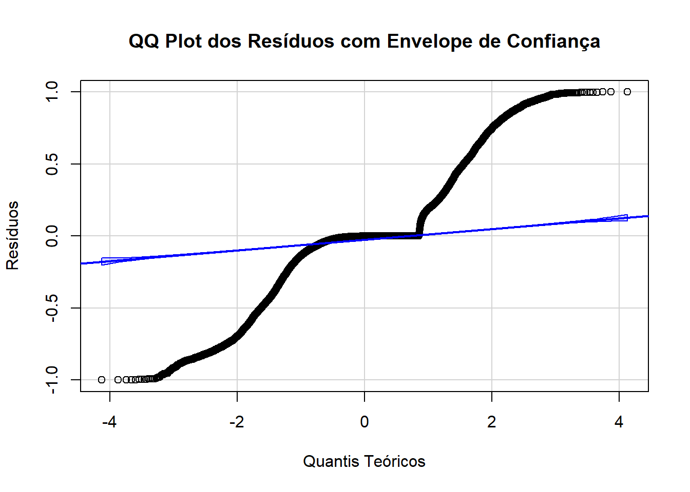

ℹ Using "','" as decimal and "'.'" as grouping mark. Use `read_delim()` for more control.
Rows: 5570 Columns: 10
── Column specification ────────────────────────────────────────────────────────
Delimiter: ";"
chr (3): tipo_regiao, bioma, koppen
dbl (7): muni_code, region, altitude, pop10, pop22, prop_residuo, prop_esgot
ℹ Use `spec()` to retrieve the full column specification for this data.
ℹ Specify the column types or set `show_col_types = FALSE` to quiet this message.
New names:
Rows: 5570 Columns: 31
── Column specification
──────────────────────────────────────────────────────── Delimiter: "," chr
(1): dengue_pattern dbl (30): ...1, geocode, temp_med_Autumn, umid_med_Autumn,
precip_tot_Autumn...
ℹ Use `spec()` to retrieve the full column specification for this data. ℹ
Specify the column types or set `show_col_types = FALSE` to quiet this message.
• `` -> `...1`
clima_org_model_10_16_season <- clima_org_model_10_16_season[, -1] # Exclui a primeira colunacolnames(clima_org_model_10_16_season)[1] <-"muni_code"# Renomeia a nova primeira coluna# Juntandodet_10_16 <-full_join(banco_determinantes, clima_org_model_10_16_season , by ="muni_code")det_10_16 <- det_10_16[, !names(det_10_16) %in%c("pop22")]## Removendo os bancos para a nálise ficar mais leveremove(banco_determinantes)remove(clima_org_model_10_16_season)
Análise 2010-2016
Análise do período de 2010-2016, primeira parte de uma série temporal da classificação de padrões de transmissão de todos os municípios brasileiros para dengue.
1.Carregando os dados
# Converter variáveis numéricas com vírgula decimal e categorizar as variáveis de textodet_10_16 <- det_10_16 %>%mutate(across(where(~all(grepl("^[0-9,.]+$", .))), ~as.numeric(gsub(",", ".", .))),across(where(is.character), as.factor))# Visão geral dos dadossummary(det_10_16)
muni_code region tipo_regiao
Min. :1100015 Min. :1.000 metropolitana : 445
1st Qu.:2512126 1st Qu.:2.000 nao metropolitana:5125
Median :3146280 Median :3.000
Mean :3253591 Mean :2.898
3rd Qu.:4119190 3rd Qu.:4.000
Max. :5300108 Max. :5.000
bioma altitude koppen pop10
amazonia : 503 Min. : 1.67 Aw :1337 Min. : 805
caatinga :1096 1st Qu.: 222.60 Cfa :1138 1st Qu.: 5235
cerrado :1063 Median : 427.60 As : 892 Median : 10934
mata atlantica:2739 Mean : 451.24 BSh : 420 Mean : 34278
pampa : 160 3rd Qu.: 650.83 Cwa : 407 3rd Qu.: 23424
pantanal : 9 Max. :1601.42 Cfb : 405 Max. :11253503
(Other): 971 NA's :5
prop_residuo prop_esgot dengue_pattern
Min. : 0.00 Min. : 0.00 Epidêmico : 642
1st Qu.: 54.33 1st Qu.: 12.85 Episódico :1722
Median : 74.08 Median : 38.03 Episódico/Epidêmico :2907
Mean : 70.21 Mean : 42.27 Sem transmissão : 286
3rd Qu.: 89.22 3rd Qu.: 70.44 Transmissão Persistente: 13
Max. :100.00 Max. :100.00
temp_med_Autumn umid_med_Autumn precip_tot_Autumn thr_temp_Autumn
Min. :12.90 Min. :52.73 Min. : 0.0 Min. : 0.00
1st Qu.:19.37 1st Qu.:72.58 1st Qu.: 700.7 1st Qu.:38.57
Median :22.72 Median :77.93 Median : 969.7 Median :84.43
Mean :22.25 Mean :76.60 Mean :1201.3 Mean :66.88
3rd Qu.:25.36 3rd Qu.:81.53 3rd Qu.:1619.1 3rd Qu.:92.00
Max. :28.18 Max. :91.90 Max. :5121.0 Max. :92.00
NA's :3 NA's :3
thr_umid_Autumn thr_prec_Autumn thr_temp_umid_Autumn temp_med_Spring
Min. : 0.00 Min. : 0.00 Min. : 0.00 Min. :15.39
1st Qu.:81.86 1st Qu.:18.00 1st Qu.:35.29 1st Qu.:21.58
Median :90.57 Median :23.43 Median :61.71 Median :24.37
Mean :83.54 Mean :26.76 Mean :58.77 Mean :24.06
3rd Qu.:91.86 3rd Qu.:31.71 3rd Qu.:86.00 3rd Qu.:26.29
Max. :92.00 Max. :88.57 Max. :92.00 Max. :31.28
NA's :3
umid_med_Spring precip_tot_Spring thr_temp_Spring thr_umid_Spring
Min. :42.80 Min. : 0.0 Min. : 0.00 Min. : 0.00
1st Qu.:67.09 1st Qu.: 700.2 1st Qu.:68.14 1st Qu.:64.29
Median :71.88 Median :1667.6 Median :89.14 Median :79.50
Mean :70.76 Mean :1443.3 Mean :77.53 Mean :71.55
3rd Qu.:76.70 3rd Qu.:2005.4 3rd Qu.:90.71 3rd Qu.:89.14
Max. :90.22 Max. :3257.9 Max. :90.71 Max. :90.71
NA's :3
thr_prec_Spring thr_temp_umid_Spring temp_med_Summer umid_med_Summer
Min. : 0.00 Min. : 0.00 Min. :18.47 Min. :55.31
1st Qu.:17.14 1st Qu.:46.14 1st Qu.:23.49 1st Qu.:74.01
Median :34.29 Median :62.57 Median :24.94 Median :77.75
Mean :30.18 Mean :59.01 Mean :24.67 Mean :76.77
3rd Qu.:40.57 3rd Qu.:74.14 3rd Qu.:25.94 3rd Qu.:80.86
Max. :78.43 Max. :90.71 Max. :28.77 Max. :91.60
NA's :3 NA's :3
precip_tot_Summer thr_temp_Summer thr_umid_Summer thr_prec_Summer
Min. : 0 Min. : 0.00 Min. : 0.00 Min. : 0.00
1st Qu.:1234 1st Qu.:88.43 1st Qu.:83.14 1st Qu.:27.57
Median :1861 Median :90.29 Median :87.43 Median :42.14
Mean :1884 Mean :87.28 Mean :82.16 Mean :41.55
3rd Qu.:2400 3rd Qu.:90.29 3rd Qu.:90.14 3rd Qu.:52.57
Max. :5920 Max. :90.29 Max. :90.29 Max. :88.86
thr_temp_umid_Summer temp_med_Winter umid_med_Winter precip_tot_Winter
Min. : 0.00 Min. :11.43 Min. :36.38 Min. : 0.0
1st Qu.:75.57 1st Qu.:18.17 1st Qu.:56.63 1st Qu.: 149.8
Median :84.57 Median :21.63 Median :69.07 Median : 396.7
Mean :79.21 Mean :21.50 Mean :66.70 Mean : 669.6
3rd Qu.:89.86 3rd Qu.:24.94 3rd Qu.:77.93 3rd Qu.:1020.8
Max. :90.29 Max. :30.04 Max. :90.85 Max. :3122.8
NA's :3 NA's :3
thr_temp_Winter thr_umid_Winter thr_prec_Winter thr_temp_umid_Winter
Min. : 0.00 Min. : 0.00 Min. : 0.000 Min. : 0.00
1st Qu.:21.46 1st Qu.:33.29 1st Qu.: 2.714 1st Qu.: 7.00
Median :74.50 Median :75.57 Median : 9.143 Median :16.71
Mean :59.09 Mean :61.54 Mean :13.717 Mean :31.09
3rd Qu.:92.00 3rd Qu.:90.43 3rd Qu.:23.429 3rd Qu.:49.43
Max. :92.00 Max. :92.00 Max. :82.571 Max. :92.00
2. Verificação dos pressupostos
2.1 Multicolinearidade
Cálculo do VIF (Variance Inflation Factor): O VIF foi calculado para cada variável preditora no modelo. Isso foi feito após a remoção de colinearidade redundante e tratamento das variáveis para garantir que todas estejam no formato correto (numérico ou categórico).
Variável dependente: dengue_pattern foi temporariamente convertida para numérica apenas para calcular o VIF. Esse ajuste é feito para facilitar a análise de multicolinearidade.
Detecção e remoção de colinearidade: Usamos o findLinearCombos para remover variáveis redundantes, evitando o problema de “aliasing” no modelo, o que ocorre quando variáveis altamente correlacionadas criam dependência linear.
Intrepretação:
Valores de VIF < 5: São considerados aceitáveis, indicando baixa multicolinearidade.
Valores de VIF entre 5 e 10: Indicariam alguma multicolinearidade, mas ainda podem ser aceitáveis dependendo do contexto.
Valores de VIF > 10: Sugerem multicolinearidade.
Resultados:
Quando todas as variáveis em um cálculo do VIF (Variance Inflation Factor) estão muito acima de 10, isso indica alta multicolinearidade entre as variáveis no seu modelo de regressão. Multicolinearidade pode distorcer os coeficientes das variáveis no modelo, dificultando a interpretação e reduzindo a confiabilidade dos resultados.
## Somente para variáveis numéricas então vamos retirar as categoricas# Remover colunas pelo nomedata <- det_10_16[, !names(det_10_16) %in%c("muni_code","region", "tipo_regiao", "bioma", "koppen")]# Verificando a presença de NAs em todas as variáveis do bancosapply(data, function(x) sum(is.na(x))) #Tem 8 linhas
# removendo as linhas com Nadata_clean <- data %>%filter(!if_any(where(is.numeric), is.na))# Identificar e remover variáveis altamente colinearescombo_info <-findLinearCombos(data_clean %>%select(-dengue_pattern))if (length(combo_info$remove) >0) { data_clean <- data_clean[, -combo_info$remove]}# Calcular o VIF para as variáveis vif_values <-vif(lm(as.numeric(dengue_pattern) ~ ., data = data_clean))vif_values
O valor 0 indica que não foram encontradas linhas duplicadas em data_clean.
# Verificar se há identificadores duplicadosduplicated_rows <-sum(duplicated(det_10_16))duplicated_rows
[1] 0
2.3 Tamanho amostral adequado
Interpretação:
Em regressão logística multinomial, cada categoria da variável dependente precisa de um número suficiente de observações para garantir que o modelo possa estimar os parâmetros de forma confiável. Geralmente, recomenda-se pelo menos 10 a 20 observações por parâmetro estimado em cada categoria.
O código retornou valor 0 nas observações, indicando que não foram encontrados outliers com resíduos padronizados maiores que 2 ou menores que -2. Isso sugere que o modelo se ajustou bem aos dados e não há observações que se desviem significativamente do padrão previsto pelo modelo.
# Ajustar o modelo multinomialmultinom_model <-multinom(dengue_pattern ~ ., data = det_10_16)
# weights: 250 (196 variable)
initial value 8951.693669
iter 10 value 5821.781662
iter 20 value 5392.058802
iter 30 value 5254.819821
iter 40 value 5126.169254
iter 50 value 5084.645191
iter 60 value 5046.799680
iter 70 value 5000.426309
iter 80 value 4935.898383
iter 90 value 4812.706118
iter 100 value 4655.683240
final value 4655.683240
stopped after 100 iterations
# Calcular resíduos padronizadosresiduals <-residuals(multinom_model, type ="pearson")# Identificar outliers com resíduos padronizados acima de 2 ou abaixo de -2outliers <-which(abs(residuals) >2)length(outliers)
[1] 0
##OUTRO# Obter os resíduos deviance para cada observaçãodeviance_residuals <-residuals(multinom_model, type ="deviance")# Ponto de corte padrão da literaturacutoff <-2.0influential_points <-which(abs(deviance_residuals) > cutoff)print(data[influential_points, ])
3. Ajuste do modelo de regressão logística multinomial
Interpretação:
Para cada categoria (em relação à referência “Episódico/Epidêmico”), o modelo estima coeficientes (Coefficients) para cada variável preditora. Esses coeficientes representam o efeito de cada variável sobre a probabilidade de estar nas categorias Sem transmissão, Episódico, Epidêmico e Tranmissão Persistente, em comparação com Episódico/Epidêmico.
# Remover colunas pelo nomedet_10_16 <- det_10_16[, !names(det_10_16) %in%c("muni_code")]det_10_16$region <-as.factor(det_10_16$region)# removendo as linhas com Nadet_10_16 <- det_10_16%>%filter(!if_any(where(is.numeric), is.na))# Definir a categoria de referência para todas as variáveis categóricasdet_10_16$dengue_pattern <-relevel(det_10_16$dengue_pattern, ref ="Episódico/Epidêmico") # variável dependente# Variáveis independentessummary(det_10_16)
region tipo_regiao bioma altitude
1: 449 metropolitana : 442 amazonia : 502 Min. : 1.67
2:1791 nao metropolitana:5120 caatinga :1096 1st Qu.: 223.09
3:1668 cerrado :1062 Median : 427.82
4:1188 mata atlantica:2733 Mean : 451.61
5: 466 pampa : 160 3rd Qu.: 651.09
pantanal : 9 Max. :1601.42
koppen pop10 prop_residuo prop_esgot
Aw :1336 Min. : 805 Min. : 0.00 Min. : 0.00
Cfa :1135 1st Qu.: 5235 1st Qu.: 54.33 1st Qu.: 12.82
As : 891 Median : 10934 Median : 74.08 Median : 37.99
BSh : 420 Mean : 34289 Mean : 70.21 Mean : 42.24
Cwa : 407 3rd Qu.: 23491 3rd Qu.: 89.22 3rd Qu.: 70.43
Cfb : 405 Max. :11253503 Max. :100.00 Max. :100.00
(Other): 968
dengue_pattern temp_med_Autumn umid_med_Autumn
Episódico/Epidêmico :2904 Min. :12.90 Min. :52.73
Epidêmico : 641 1st Qu.:19.38 1st Qu.:72.56
Episódico :1720 Median :22.72 Median :77.92
Sem transmissão : 284 Mean :22.25 Mean :76.59
Transmissão Persistente: 13 3rd Qu.:25.36 3rd Qu.:81.53
Max. :28.18 Max. :91.90
precip_tot_Autumn thr_temp_Autumn thr_umid_Autumn thr_prec_Autumn
Min. : 192.9 Min. : 0.1429 Min. :15.29 Min. : 3.714
1st Qu.: 700.9 1st Qu.:38.7143 1st Qu.:81.86 1st Qu.:18.000
Median : 969.7 Median :84.4286 Median :90.57 Median :23.429
Mean :1201.5 Mean :66.9245 Mean :83.58 Mean :26.764
3rd Qu.:1619.1 3rd Qu.:92.0000 3rd Qu.:91.86 3rd Qu.:31.714
Max. :5121.0 Max. :92.0000 Max. :92.00 Max. :88.571
thr_temp_umid_Autumn temp_med_Spring umid_med_Spring precip_tot_Spring
Min. : 0.1429 Min. :15.39 Min. :42.80 Min. : 29.18
1st Qu.:35.2857 1st Qu.:21.59 1st Qu.:67.09 1st Qu.: 701.78
Median :61.7143 Median :24.37 Median :71.88 Median :1668.10
Mean :58.8089 Mean :24.06 Mean :70.76 Mean :1444.09
3rd Qu.:86.0000 3rd Qu.:26.29 3rd Qu.:76.69 3rd Qu.:2006.38
Max. :92.0000 Max. :31.28 Max. :90.22 Max. :3257.91
thr_temp_Spring thr_umid_Spring thr_prec_Spring thr_temp_umid_Spring
Min. : 2.00 Min. : 3.429 Min. : 0.00 Min. : 1.857
1st Qu.:68.18 1st Qu.:64.286 1st Qu.:17.14 1st Qu.:46.143
Median :89.14 Median :79.500 Median :34.29 Median :62.571
Mean :77.59 Mean :71.581 Mean :30.20 Mean :59.039
3rd Qu.:90.71 3rd Qu.:89.143 3rd Qu.:40.57 3rd Qu.:74.143
Max. :90.71 Max. :90.714 Max. :78.43 Max. :90.714
temp_med_Summer umid_med_Summer precip_tot_Summer thr_temp_Summer
Min. :18.47 Min. :55.31 Min. : 236.3 Min. :17.57
1st Qu.:23.49 1st Qu.:73.99 1st Qu.:1234.9 1st Qu.:88.43
Median :24.94 Median :77.74 Median :1860.9 Median :90.29
Mean :24.67 Mean :76.76 Mean :1884.6 Mean :87.33
3rd Qu.:25.94 3rd Qu.:80.86 3rd Qu.:2400.6 3rd Qu.:90.29
Max. :28.77 Max. :91.60 Max. :5920.1 Max. :90.29
thr_umid_Summer thr_prec_Summer thr_temp_umid_Summer temp_med_Winter
Min. :22.43 Min. : 5.286 Min. :17.57 Min. :11.43
1st Qu.:83.14 1st Qu.:27.571 1st Qu.:75.71 1st Qu.:18.18
Median :87.43 Median :42.143 Median :84.57 Median :21.63
Mean :82.20 Mean :41.561 Mean :79.25 Mean :21.51
3rd Qu.:90.14 3rd Qu.:52.571 3rd Qu.:89.86 3rd Qu.:24.94
Max. :90.29 Max. :88.857 Max. :90.29 Max. :30.04
umid_med_Winter precip_tot_Winter thr_temp_Winter thr_umid_Winter
Min. :36.38 Min. : 0.9508 Min. : 0.00 Min. : 0.00
1st Qu.:56.63 1st Qu.: 149.8904 1st Qu.:21.57 1st Qu.:33.32
Median :69.05 Median : 396.6532 Median :74.57 Median :75.57
Mean :66.69 Mean : 669.4524 Mean :59.14 Mean :61.56
3rd Qu.:77.92 3rd Qu.:1020.5051 3rd Qu.:92.00 3rd Qu.:90.43
Max. :90.85 Max. :3122.7667 Max. :92.00 Max. :92.00
thr_prec_Winter thr_temp_umid_Winter
Min. : 0.000 Min. : 0.000
1st Qu.: 2.714 1st Qu.: 7.143
Median : 9.143 Median :16.714
Mean :13.716 Mean :31.113
3rd Qu.:23.429 3rd Qu.:49.429
Max. :82.571 Max. :92.000
region tipo_regiao bioma altitude
1: 449 nao metropolitana:5120 mata atlantica:2733 Min. : 1.67
2:1791 metropolitana : 442 amazonia : 502 1st Qu.: 223.09
3:1668 caatinga :1096 Median : 427.82
4:1188 cerrado :1062 Mean : 451.61
5: 466 pampa : 160 3rd Qu.: 651.09
pantanal : 9 Max. :1601.42
koppen pop10 prop_residuo prop_esgot
Aw :1336 Min. : 805 Min. : 0.00 Min. : 0.00
Cfa :1135 1st Qu.: 5235 1st Qu.: 54.33 1st Qu.: 12.82
As : 891 Median : 10934 Median : 74.08 Median : 37.99
BSh : 420 Mean : 34289 Mean : 70.21 Mean : 42.24
Cwa : 407 3rd Qu.: 23491 3rd Qu.: 89.22 3rd Qu.: 70.43
Cfb : 405 Max. :11253503 Max. :100.00 Max. :100.00
(Other): 968
dengue_pattern temp_med_Autumn umid_med_Autumn
Episódico/Epidêmico :2904 Min. :12.90 Min. :52.73
Epidêmico : 641 1st Qu.:19.38 1st Qu.:72.56
Episódico :1720 Median :22.72 Median :77.92
Sem transmissão : 284 Mean :22.25 Mean :76.59
Transmissão Persistente: 13 3rd Qu.:25.36 3rd Qu.:81.53
Max. :28.18 Max. :91.90
precip_tot_Autumn thr_temp_Autumn thr_umid_Autumn thr_prec_Autumn
Min. : 192.9 Min. : 0.1429 Min. :15.29 Min. : 3.714
1st Qu.: 700.9 1st Qu.:38.7143 1st Qu.:81.86 1st Qu.:18.000
Median : 969.7 Median :84.4286 Median :90.57 Median :23.429
Mean :1201.5 Mean :66.9245 Mean :83.58 Mean :26.764
3rd Qu.:1619.1 3rd Qu.:92.0000 3rd Qu.:91.86 3rd Qu.:31.714
Max. :5121.0 Max. :92.0000 Max. :92.00 Max. :88.571
thr_temp_umid_Autumn temp_med_Spring umid_med_Spring precip_tot_Spring
Min. : 0.1429 Min. :15.39 Min. :42.80 Min. : 29.18
1st Qu.:35.2857 1st Qu.:21.59 1st Qu.:67.09 1st Qu.: 701.78
Median :61.7143 Median :24.37 Median :71.88 Median :1668.10
Mean :58.8089 Mean :24.06 Mean :70.76 Mean :1444.09
3rd Qu.:86.0000 3rd Qu.:26.29 3rd Qu.:76.69 3rd Qu.:2006.38
Max. :92.0000 Max. :31.28 Max. :90.22 Max. :3257.91
thr_temp_Spring thr_umid_Spring thr_prec_Spring thr_temp_umid_Spring
Min. : 2.00 Min. : 3.429 Min. : 0.00 Min. : 1.857
1st Qu.:68.18 1st Qu.:64.286 1st Qu.:17.14 1st Qu.:46.143
Median :89.14 Median :79.500 Median :34.29 Median :62.571
Mean :77.59 Mean :71.581 Mean :30.20 Mean :59.039
3rd Qu.:90.71 3rd Qu.:89.143 3rd Qu.:40.57 3rd Qu.:74.143
Max. :90.71 Max. :90.714 Max. :78.43 Max. :90.714
temp_med_Summer umid_med_Summer precip_tot_Summer thr_temp_Summer
Min. :18.47 Min. :55.31 Min. : 236.3 Min. :17.57
1st Qu.:23.49 1st Qu.:73.99 1st Qu.:1234.9 1st Qu.:88.43
Median :24.94 Median :77.74 Median :1860.9 Median :90.29
Mean :24.67 Mean :76.76 Mean :1884.6 Mean :87.33
3rd Qu.:25.94 3rd Qu.:80.86 3rd Qu.:2400.6 3rd Qu.:90.29
Max. :28.77 Max. :91.60 Max. :5920.1 Max. :90.29
thr_umid_Summer thr_prec_Summer thr_temp_umid_Summer temp_med_Winter
Min. :22.43 Min. : 5.286 Min. :17.57 Min. :11.43
1st Qu.:83.14 1st Qu.:27.571 1st Qu.:75.71 1st Qu.:18.18
Median :87.43 Median :42.143 Median :84.57 Median :21.63
Mean :82.20 Mean :41.561 Mean :79.25 Mean :21.51
3rd Qu.:90.14 3rd Qu.:52.571 3rd Qu.:89.86 3rd Qu.:24.94
Max. :90.29 Max. :88.857 Max. :90.29 Max. :30.04
umid_med_Winter precip_tot_Winter thr_temp_Winter thr_umid_Winter
Min. :36.38 Min. : 0.9508 Min. : 0.00 Min. : 0.00
1st Qu.:56.63 1st Qu.: 149.8904 1st Qu.:21.57 1st Qu.:33.32
Median :69.05 Median : 396.6532 Median :74.57 Median :75.57
Mean :66.69 Mean : 669.4524 Mean :59.14 Mean :61.56
3rd Qu.:77.92 3rd Qu.:1020.5051 3rd Qu.:92.00 3rd Qu.:90.43
Max. :90.85 Max. :3122.7667 Max. :92.00 Max. :92.00
thr_prec_Winter thr_temp_umid_Winter
Min. : 0.000 Min. : 0.000
1st Qu.: 2.714 1st Qu.: 7.143
Median : 9.143 Median :16.714
Mean :13.716 Mean :31.113
3rd Qu.:23.429 3rd Qu.:49.429
Max. :82.571 Max. :92.000
# Modelo com tudomultinom_model <-multinom(dengue_pattern ~ ., data = det_10_16)
# weights: 260 (204 variable)
initial value 8951.693669
iter 10 value 6757.106187
iter 20 value 6351.253687
iter 30 value 6153.978580
iter 40 value 6072.260924
iter 50 value 6016.914924
iter 60 value 5925.507424
iter 70 value 5828.098696
iter 80 value 5723.426208
iter 90 value 5342.581581
iter 100 value 4852.714552
final value 4852.714552
stopped after 100 iterations
# Seleção stepwise#step_model <- step(multinom_model, direction = "both")#summary(step_model)# Seleção stepwise a partir do modelo nulo# Criar o modelo inicial (nulo com region e pop10)null_model <-multinom(dengue_pattern ~ region + pop10, data = det_10_16)
# weights: 35 (24 variable)
initial value 8951.693669
iter 10 value 5663.222836
iter 20 value 5360.962316
iter 30 value 4868.819309
iter 40 value 4733.226025
iter 50 value 4671.607151
iter 60 value 4659.460909
iter 70 value 4647.773646
iter 80 value 4641.789333
final value 4641.775110
converged
# Criar o modelo completo (com todas as variáveis preditoras adicionais)full_formula <-as.formula(paste("dengue_pattern ~ region + pop10 +", paste(setdiff(names(det_10_16), c("dengue_pattern", "region", "pop10")), collapse =" + ")))full_model <-multinom(full_formula, data = det_10_16)
# weights: 260 (204 variable)
initial value 8951.693669
iter 10 value 6757.106187
iter 20 value 6351.253689
iter 30 value 6153.978649
iter 40 value 6072.261499
iter 50 value 6016.920231
iter 60 value 5925.544696
iter 70 value 5828.183577
iter 80 value 5723.568808
iter 90 value 5343.150175
iter 100 value 4853.280393
final value 4853.280393
stopped after 100 iterations
# Aplicar a seleção stepwise a partir do modelo nulo para o modelo completostep_model <-step(null_model, scope =list(lower = null_model, upper = full_model), direction ="both", trace =TRUE)
Start: AIC=9331.55
dengue_pattern ~ region + pop10
trying + tipo_regiao
# weights: 40 (28 variable)
initial value 8951.693669
iter 10 value 5635.749495
iter 20 value 5326.165395
iter 30 value 5002.470277
iter 40 value 4756.425420
iter 50 value 4690.254827
iter 60 value 4644.845505
iter 70 value 4641.267349
iter 80 value 4631.560791
final value 4630.391187
converged
trying + bioma
# weights: 60 (44 variable)
initial value 8951.693669
iter 10 value 5550.543639
iter 20 value 5324.153949
iter 30 value 5077.962463
iter 40 value 4608.142570
iter 50 value 4509.362801
iter 60 value 4466.435431
iter 70 value 4453.142290
iter 80 value 4452.665488
final value 4452.660678
converged
trying + altitude
# weights: 40 (28 variable)
initial value 8951.693669
iter 10 value 6593.488653
iter 20 value 5750.662568
iter 30 value 5035.431164
iter 40 value 4678.547915
iter 50 value 4634.160886
iter 60 value 4622.562310
iter 70 value 4622.015434
iter 80 value 4621.416297
final value 4621.384525
converged
trying + koppen
# weights: 75 (56 variable)
initial value 8951.693669
iter 10 value 5538.900944
iter 20 value 5229.802958
iter 30 value 4998.206407
iter 40 value 4754.394603
iter 50 value 4545.302012
iter 60 value 4463.472681
iter 70 value 4417.686364
iter 80 value 4400.780474
iter 90 value 4398.997916
iter 100 value 4398.737145
final value 4398.737145
stopped after 100 iterations
trying + prop_residuo
# weights: 40 (28 variable)
initial value 8951.693669
iter 10 value 5860.180443
iter 20 value 5254.792543
iter 30 value 4839.928162
iter 40 value 4636.765628
iter 50 value 4605.118903
final value 4603.924282
converged
trying + prop_esgot
# weights: 40 (28 variable)
initial value 8951.693669
iter 10 value 6461.453017
iter 20 value 5821.455762
iter 30 value 5107.160503
iter 40 value 4842.827170
iter 50 value 4716.879473
iter 60 value 4657.175726
iter 70 value 4647.752037
iter 80 value 4639.061153
iter 90 value 4635.011377
final value 4635.010712
converged
trying + temp_med_Autumn
# weights: 40 (28 variable)
initial value 8951.693669
iter 10 value 6166.623319
iter 20 value 5409.110796
iter 30 value 4658.386344
iter 40 value 4443.016438
iter 50 value 4388.793524
iter 60 value 4378.386740
iter 70 value 4377.611440
iter 80 value 4376.068029
iter 90 value 4375.180489
final value 4375.180377
converged
trying + umid_med_Autumn
# weights: 40 (28 variable)
initial value 8951.693669
iter 10 value 5892.020739
iter 20 value 5268.249060
iter 30 value 4718.411947
iter 40 value 4593.555387
iter 50 value 4551.444415
iter 60 value 4543.725280
iter 70 value 4543.474712
iter 80 value 4543.228618
iter 90 value 4543.224944
iter 90 value 4543.224939
iter 90 value 4543.224939
final value 4543.224939
converged
trying + precip_tot_Autumn
# weights: 40 (28 variable)
initial value 8951.693669
iter 10 value 6329.932617
iter 20 value 5452.342939
iter 30 value 5004.453168
iter 40 value 4667.433979
iter 50 value 4615.642772
iter 60 value 4597.551121
iter 70 value 4597.055408
iter 80 value 4594.940681
iter 90 value 4594.779335
iter 90 value 4594.779334
iter 90 value 4594.779334
final value 4594.779334
converged
trying + thr_temp_Autumn
# weights: 40 (28 variable)
initial value 8951.693669
iter 10 value 6064.923916
iter 20 value 5121.705550
iter 30 value 4421.350855
iter 40 value 4285.293257
iter 50 value 4266.756120
iter 60 value 4258.203064
iter 70 value 4255.250912
iter 80 value 4248.762539
iter 90 value 4245.605285
final value 4245.605158
converged
trying + thr_umid_Autumn
# weights: 40 (28 variable)
initial value 8951.693669
iter 10 value 6420.193529
iter 20 value 5562.582286
iter 30 value 4889.308943
iter 40 value 4692.758659
iter 50 value 4651.900047
iter 60 value 4640.718765
iter 70 value 4640.004458
iter 80 value 4636.663814
iter 90 value 4635.860495
final value 4635.859924
converged
trying + thr_prec_Autumn
# weights: 40 (28 variable)
initial value 8951.693669
iter 10 value 5931.337856
iter 20 value 5395.721493
iter 30 value 4968.386795
iter 40 value 4649.503792
iter 50 value 4597.425726
iter 60 value 4582.705520
iter 70 value 4582.056349
iter 80 value 4580.975735
final value 4580.779556
converged
trying + thr_temp_umid_Autumn
# weights: 40 (28 variable)
initial value 8951.693669
iter 10 value 6019.026332
iter 20 value 5249.694077
iter 30 value 4744.930546
iter 40 value 4525.198863
iter 50 value 4450.080157
iter 60 value 4407.353214
iter 70 value 4406.357533
iter 80 value 4404.084090
iter 90 value 4401.521763
iter 90 value 4401.521761
iter 90 value 4401.521761
final value 4401.521761
converged
trying + temp_med_Spring
# weights: 40 (28 variable)
initial value 8951.693669
iter 10 value 6133.891190
iter 20 value 5332.289553
iter 30 value 4687.147432
iter 40 value 4479.190387
iter 50 value 4446.687524
iter 60 value 4441.069707
iter 70 value 4440.919816
iter 80 value 4440.366484
iter 90 value 4439.363040
final value 4439.362879
converged
trying + umid_med_Spring
# weights: 40 (28 variable)
initial value 8951.693669
iter 10 value 5790.724930
iter 20 value 5245.569375
iter 30 value 4714.446914
iter 40 value 4628.956945
iter 50 value 4586.231885
iter 60 value 4579.602497
iter 70 value 4579.412811
iter 80 value 4578.968794
final value 4578.759661
converged
trying + precip_tot_Spring
# weights: 40 (28 variable)
initial value 8951.693669
iter 10 value 6539.049498
iter 20 value 5408.356333
iter 30 value 4859.828870
iter 40 value 4671.092623
iter 50 value 4621.001378
iter 60 value 4605.470933
iter 70 value 4605.404722
iter 80 value 4604.540666
final value 4604.333046
converged
trying + thr_temp_Spring
# weights: 40 (28 variable)
initial value 8951.693669
iter 10 value 6083.388152
iter 20 value 5011.006242
iter 30 value 4351.142021
iter 40 value 4081.878500
iter 50 value 4036.097714
iter 60 value 4022.816567
iter 70 value 4022.538210
iter 80 value 4021.311509
iter 90 value 4019.980924
iter 90 value 4019.980912
iter 90 value 4019.980912
final value 4019.980912
converged
trying + thr_umid_Spring
# weights: 40 (28 variable)
initial value 8951.693669
iter 10 value 5940.338116
iter 20 value 5352.041486
iter 30 value 4822.734063
iter 40 value 4640.338297
iter 50 value 4609.733222
iter 60 value 4602.855862
iter 70 value 4602.737129
iter 80 value 4602.586760
final value 4602.575834
converged
trying + thr_prec_Spring
# weights: 40 (28 variable)
initial value 8951.693669
iter 10 value 6330.113134
iter 20 value 5397.331699
iter 30 value 4873.845765
iter 40 value 4642.878476
iter 50 value 4605.339276
iter 60 value 4597.125703
iter 70 value 4597.071514
iter 80 value 4596.893790
final value 4596.859068
converged
trying + thr_temp_umid_Spring
# weights: 40 (28 variable)
initial value 8951.693669
iter 10 value 5765.760740
iter 20 value 5303.078279
iter 30 value 4775.665781
iter 40 value 4619.070401
iter 50 value 4573.570672
iter 60 value 4562.319634
iter 70 value 4562.051672
iter 80 value 4559.776715
iter 90 value 4558.817037
iter 90 value 4558.817017
iter 90 value 4558.817017
final value 4558.817017
converged
trying + temp_med_Summer
# weights: 40 (28 variable)
initial value 8951.693669
iter 10 value 5828.915645
iter 20 value 5299.947758
iter 30 value 4619.375281
iter 40 value 4460.413402
iter 50 value 4431.786420
iter 60 value 4424.587282
iter 70 value 4424.035227
iter 80 value 4422.294769
iter 90 value 4421.435241
final value 4421.435050
converged
trying + umid_med_Summer
# weights: 40 (28 variable)
initial value 8951.693669
iter 10 value 5877.435135
iter 20 value 5340.213286
iter 30 value 4738.243408
iter 40 value 4649.820316
iter 50 value 4608.488408
iter 60 value 4599.474764
iter 70 value 4599.310705
iter 80 value 4599.067013
iter 90 value 4599.018778
iter 90 value 4599.018759
iter 90 value 4599.018759
final value 4599.018759
converged
trying + precip_tot_Summer
# weights: 40 (28 variable)
initial value 8951.693669
iter 10 value 6651.920300
iter 20 value 5851.598298
iter 30 value 5162.289769
iter 40 value 4812.018981
iter 50 value 4692.820814
iter 60 value 4643.768113
iter 70 value 4638.304358
iter 80 value 4622.354652
iter 90 value 4618.284059
iter 100 value 4618.275621
final value 4618.275621
stopped after 100 iterations
trying + thr_temp_Summer
# weights: 40 (28 variable)
initial value 8951.693669
iter 10 value 6433.686737
iter 20 value 5598.062196
iter 30 value 4832.598360
iter 40 value 4366.559304
iter 50 value 4309.622510
iter 60 value 4289.510571
iter 70 value 4288.656635
iter 80 value 4286.389178
iter 90 value 4283.229533
iter 100 value 4282.617200
final value 4282.617200
stopped after 100 iterations
trying + thr_umid_Summer
# weights: 40 (28 variable)
initial value 8951.693669
iter 10 value 6410.331586
iter 20 value 5656.044875
iter 30 value 4993.323939
iter 40 value 4683.186963
iter 50 value 4643.761091
iter 60 value 4630.360709
iter 70 value 4629.524069
iter 80 value 4626.981831
iter 90 value 4626.886159
final value 4626.885419
converged
trying + thr_prec_Summer
# weights: 40 (28 variable)
initial value 8951.693669
iter 10 value 6770.975773
iter 20 value 5760.440513
iter 30 value 5144.058312
iter 40 value 4760.954056
iter 50 value 4667.965086
iter 60 value 4629.198277
iter 70 value 4626.287914
iter 80 value 4621.263141
final value 4618.784294
converged
trying + thr_temp_umid_Summer
# weights: 40 (28 variable)
initial value 8951.693669
iter 10 value 5949.384078
iter 20 value 5360.955277
iter 30 value 4806.248557
iter 40 value 4660.374041
iter 50 value 4625.221542
iter 60 value 4615.751990
iter 70 value 4615.336153
iter 80 value 4615.006913
iter 90 value 4614.873314
final value 4614.872993
converged
trying + temp_med_Winter
# weights: 40 (28 variable)
initial value 8951.693669
iter 10 value 6281.343018
iter 20 value 5431.196401
iter 30 value 4707.688922
iter 40 value 4505.211396
iter 50 value 4469.234943
iter 60 value 4460.603655
iter 70 value 4459.690083
iter 80 value 4458.084627
iter 90 value 4456.656440
iter 100 value 4456.648302
final value 4456.648302
stopped after 100 iterations
trying + umid_med_Winter
# weights: 40 (28 variable)
initial value 8951.693669
iter 10 value 5832.841889
iter 20 value 5239.210236
iter 30 value 4842.708865
iter 40 value 4606.625072
iter 50 value 4553.478816
iter 60 value 4532.096916
iter 70 value 4530.472314
iter 80 value 4528.177601
final value 4528.098382
converged
trying + precip_tot_Winter
# weights: 40 (28 variable)
initial value 8951.693669
iter 10 value 7210.464193
iter 20 value 5667.842909
iter 30 value 4963.167783
iter 40 value 4665.026774
iter 50 value 4579.750055
iter 60 value 4562.293930
iter 70 value 4559.449197
iter 80 value 4555.605826
iter 90 value 4545.553323
iter 100 value 4543.600156
final value 4543.600156
stopped after 100 iterations
trying + thr_temp_Winter
# weights: 40 (28 variable)
initial value 8951.693669
iter 10 value 5947.574018
iter 20 value 5280.490945
iter 30 value 4713.559165
iter 40 value 4442.879808
iter 50 value 4376.391884
iter 60 value 4332.323818
iter 70 value 4331.012204
iter 80 value 4323.269485
iter 90 value 4317.895006
final value 4317.894635
converged
trying + thr_umid_Winter
# weights: 40 (28 variable)
initial value 8951.693669
iter 10 value 5975.848293
iter 20 value 5459.768919
iter 30 value 4912.828680
iter 40 value 4634.362931
iter 50 value 4587.410766
iter 60 value 4569.646478
iter 70 value 4567.988297
iter 80 value 4566.935398
final value 4566.588326
converged
trying + thr_prec_Winter
# weights: 40 (28 variable)
initial value 8951.693669
iter 10 value 6687.966108
iter 20 value 5653.545905
iter 30 value 5070.544703
iter 40 value 4710.438088
iter 50 value 4637.706216
iter 60 value 4607.665340
iter 70 value 4597.062835
iter 80 value 4584.435221
iter 90 value 4577.638808
final value 4577.635836
converged
trying + thr_temp_umid_Winter
# weights: 40 (28 variable)
initial value 8951.693669
iter 10 value 6871.867331
iter 20 value 5541.806812
iter 30 value 5022.931969
iter 40 value 4741.869853
iter 50 value 4671.530199
iter 60 value 4629.873500
iter 70 value 4629.253485
iter 80 value 4627.755939
final value 4627.472950
converged
Df AIC
+ +thr_temp_Spring 28 8095.962
+ +thr_temp_Autumn 28 8547.210
+ +thr_temp_Summer 28 8621.234
+ +thr_temp_Winter 28 8691.789
+ +temp_med_Autumn 28 8806.361
+ +thr_temp_umid_Autumn 28 8859.044
+ +temp_med_Summer 28 8898.870
+ +koppen 56 8909.474
+ +temp_med_Spring 28 8934.726
+ +temp_med_Winter 28 8969.297
+ +bioma 44 8993.321
+ +umid_med_Winter 28 9112.197
+ +umid_med_Autumn 28 9142.450
+ +precip_tot_Winter 28 9143.200
+ +thr_temp_umid_Spring 28 9173.634
+ +thr_umid_Winter 28 9189.177
+ +thr_prec_Winter 28 9211.272
+ +umid_med_Spring 28 9213.519
+ +thr_prec_Autumn 28 9217.559
+ +precip_tot_Autumn 28 9245.559
+ +thr_prec_Spring 28 9249.718
+ +umid_med_Summer 28 9254.038
+ +thr_umid_Spring 28 9261.152
+ +prop_residuo 28 9263.849
+ +precip_tot_Spring 28 9264.666
+ +thr_temp_umid_Summer 28 9285.746
+ +precip_tot_Summer 28 9292.551
+ +thr_prec_Summer 28 9293.569
+ +altitude 28 9298.769
+ +thr_umid_Summer 28 9309.771
+ +thr_temp_umid_Winter 28 9310.946
+ +tipo_regiao 28 9316.782
+ +prop_esgot 28 9326.021
+ +thr_umid_Autumn 28 9327.720
<none> 24 9331.550
# weights: 40 (28 variable)
initial value 8951.693669
iter 10 value 6083.388152
iter 20 value 5011.006242
iter 30 value 4351.142021
iter 40 value 4081.878500
iter 50 value 4036.097714
iter 60 value 4022.816567
iter 70 value 4022.538210
iter 80 value 4021.311509
iter 90 value 4019.980924
iter 90 value 4019.980912
iter 90 value 4019.980912
final value 4019.980912
converged
Step: AIC=8095.96
dengue_pattern ~ region + pop10 + thr_temp_Spring
trying - thr_temp_Spring
# weights: 35 (24 variable)
initial value 8951.693669
iter 10 value 5663.222836
iter 20 value 5360.962316
iter 30 value 4868.819309
iter 40 value 4733.226025
iter 50 value 4671.607151
iter 60 value 4659.460909
iter 70 value 4647.773646
iter 80 value 4641.789333
final value 4641.775110
converged
trying + tipo_regiao
# weights: 45 (32 variable)
initial value 8951.693669
iter 10 value 6063.747103
iter 20 value 5039.498380
iter 30 value 4554.676106
iter 40 value 4134.308639
iter 50 value 4052.173706
iter 60 value 4018.054688
iter 70 value 4012.145519
iter 80 value 4012.078450
iter 90 value 4012.027368
final value 4012.008251
converged
trying + bioma
# weights: 65 (48 variable)
initial value 8951.693669
iter 10 value 6111.401386
iter 20 value 5201.496027
iter 30 value 4659.576815
iter 40 value 4114.781910
iter 50 value 3880.928207
iter 60 value 3847.307804
iter 70 value 3815.560768
iter 80 value 3810.838817
iter 90 value 3809.989113
final value 3809.974083
converged
trying + altitude
# weights: 45 (32 variable)
initial value 8951.693669
iter 10 value 6397.464985
iter 20 value 5594.858920
iter 30 value 4767.826720
iter 40 value 4102.354740
iter 50 value 4012.763519
iter 60 value 3975.415055
iter 70 value 3961.143045
iter 80 value 3959.502895
iter 90 value 3955.637991
iter 100 value 3950.296194
final value 3950.296194
stopped after 100 iterations
trying + koppen
# weights: 80 (60 variable)
initial value 8951.693669
iter 10 value 6448.259924
iter 20 value 5313.675587
iter 30 value 4746.251100
iter 40 value 4515.724005
iter 50 value 4134.909191
iter 60 value 3984.474137
iter 70 value 3941.984516
iter 80 value 3914.655108
iter 90 value 3910.948450
iter 100 value 3908.597336
final value 3908.597336
stopped after 100 iterations
trying + prop_residuo
# weights: 45 (32 variable)
initial value 8951.693669
iter 10 value 6383.542232
iter 20 value 5633.756537
iter 30 value 4804.356291
iter 40 value 4145.380043
iter 50 value 4019.254525
iter 60 value 3993.884870
iter 70 value 3988.706533
iter 80 value 3987.854838
iter 90 value 3986.081733
iter 100 value 3982.686215
final value 3982.686215
stopped after 100 iterations
trying + prop_esgot
# weights: 45 (32 variable)
initial value 8951.693669
iter 10 value 7042.849711
iter 20 value 5894.956294
iter 30 value 4922.815768
iter 40 value 4470.889637
iter 50 value 4196.524274
iter 60 value 4107.033148
iter 70 value 4045.761145
iter 80 value 4034.765694
iter 90 value 4027.458315
iter 100 value 4016.947019
final value 4016.947019
stopped after 100 iterations
trying + temp_med_Autumn
# weights: 45 (32 variable)
initial value 8951.693669
iter 10 value 6607.810446
iter 20 value 5595.545450
iter 30 value 4650.743758
iter 40 value 4174.852698
iter 50 value 4070.525267
iter 60 value 4026.612451
iter 70 value 4014.288865
iter 80 value 4013.770908
iter 90 value 4012.143139
iter 100 value 4007.556819
final value 4007.556819
stopped after 100 iterations
trying + umid_med_Autumn
# weights: 45 (32 variable)
initial value 8951.693669
iter 10 value 6017.868110
iter 20 value 5304.408270
iter 30 value 4683.607187
iter 40 value 4155.539923
iter 50 value 4044.083661
iter 60 value 4023.047452
iter 70 value 4013.324933
iter 80 value 4012.606881
iter 90 value 4009.740823
iter 100 value 4008.997979
final value 4008.997979
stopped after 100 iterations
trying + precip_tot_Autumn
# weights: 45 (32 variable)
initial value 8951.693669
iter 10 value 6354.297566
iter 20 value 5408.617027
iter 30 value 4692.466066
iter 40 value 4062.823383
iter 50 value 3995.921756
iter 60 value 3974.535762
iter 70 value 3971.354915
iter 80 value 3970.184324
iter 90 value 3969.039816
iter 100 value 3968.255983
final value 3968.255983
stopped after 100 iterations
trying + thr_temp_Autumn
# weights: 45 (32 variable)
initial value 8951.693669
iter 10 value 6281.714407
iter 20 value 5661.508351
iter 30 value 4745.807799
iter 40 value 4136.056274
iter 50 value 4021.918958
iter 60 value 3998.766893
iter 70 value 3994.096872
iter 80 value 3993.310438
iter 90 value 3991.351928
iter 100 value 3989.060834
final value 3989.060834
stopped after 100 iterations
trying + thr_umid_Autumn
# weights: 45 (32 variable)
initial value 8951.693669
iter 10 value 6072.926202
iter 20 value 5450.168935
iter 30 value 4783.764358
iter 40 value 4291.418306
iter 50 value 4103.938495
iter 60 value 4050.471360
iter 70 value 4022.751763
iter 80 value 4021.582301
iter 90 value 4017.197482
iter 100 value 4015.371732
final value 4015.371732
stopped after 100 iterations
trying + thr_prec_Autumn
# weights: 45 (32 variable)
initial value 8951.693669
iter 10 value 6563.808002
iter 20 value 5570.773444
iter 30 value 4712.740124
iter 40 value 4161.337908
iter 50 value 4039.159686
iter 60 value 3985.937289
iter 70 value 3974.290958
iter 80 value 3973.639543
iter 90 value 3972.309739
iter 100 value 3967.860505
final value 3967.860505
stopped after 100 iterations
trying + thr_temp_umid_Autumn
# weights: 45 (32 variable)
initial value 8951.693669
iter 10 value 6502.282575
iter 20 value 5836.956126
iter 30 value 4849.842234
iter 40 value 4151.409141
iter 50 value 4049.100585
iter 60 value 4026.432208
iter 70 value 4021.795311
iter 80 value 4020.413865
iter 90 value 4018.753762
iter 100 value 4017.817310
final value 4017.817310
stopped after 100 iterations
trying + temp_med_Spring
# weights: 45 (32 variable)
initial value 8951.693669
iter 10 value 6232.733054
iter 20 value 5292.351518
iter 30 value 4589.568568
iter 40 value 4132.728039
iter 50 value 4059.205870
iter 60 value 4016.814585
iter 70 value 4005.577354
iter 80 value 4004.740314
iter 90 value 4004.182557
iter 100 value 3997.110744
final value 3997.110744
stopped after 100 iterations
trying + umid_med_Spring
# weights: 45 (32 variable)
initial value 8951.693669
iter 10 value 6185.432670
iter 20 value 5442.946204
iter 30 value 4713.298731
iter 40 value 4112.712713
iter 50 value 4027.320258
iter 60 value 4014.772078
iter 70 value 4010.481528
iter 80 value 4009.941134
iter 90 value 4008.679108
iter 100 value 4008.282519
final value 4008.282519
stopped after 100 iterations
trying + precip_tot_Spring
# weights: 45 (32 variable)
initial value 8951.693669
iter 10 value 6526.252895
iter 20 value 5431.824157
iter 30 value 4665.373008
iter 40 value 4059.864173
iter 50 value 4021.643106
iter 60 value 4008.923352
iter 70 value 4008.213168
iter 80 value 4007.469480
iter 90 value 4006.514553
iter 100 value 4005.653980
final value 4005.653980
stopped after 100 iterations
trying + thr_umid_Spring
# weights: 45 (32 variable)
initial value 8951.693669
iter 10 value 6256.629947
iter 20 value 5680.203859
iter 30 value 4768.640238
iter 40 value 4153.724611
iter 50 value 4044.296129
iter 60 value 4026.874905
iter 70 value 4021.079559
iter 80 value 4020.222650
iter 90 value 4016.465858
iter 100 value 4016.005348
final value 4016.005348
stopped after 100 iterations
trying + thr_prec_Spring
# weights: 45 (32 variable)
initial value 8951.693669
iter 10 value 6732.036600
iter 20 value 5556.102418
iter 30 value 4605.916460
iter 40 value 4159.250479
iter 50 value 4053.149631
iter 60 value 4006.622945
iter 70 value 3994.171800
iter 80 value 3993.180383
iter 90 value 3988.342382
iter 100 value 3986.035310
final value 3986.035310
stopped after 100 iterations
trying + thr_temp_umid_Spring
# weights: 45 (32 variable)
initial value 8951.693669
iter 10 value 6633.065090
iter 20 value 5895.899404
iter 30 value 4887.283004
iter 40 value 4173.364286
iter 50 value 4041.638967
iter 60 value 4027.845173
iter 70 value 4023.113674
iter 80 value 4021.684679
iter 90 value 4017.522274
iter 100 value 4016.111569
final value 4016.111569
stopped after 100 iterations
trying + temp_med_Summer
# weights: 45 (32 variable)
initial value 8951.693669
iter 10 value 6250.931352
iter 20 value 5299.618005
iter 30 value 4587.485917
iter 40 value 4132.522973
iter 50 value 4054.553422
iter 60 value 4002.671598
iter 70 value 3998.000166
iter 80 value 3997.843370
iter 90 value 3997.239923
iter 100 value 3994.752764
final value 3994.752764
stopped after 100 iterations
trying + umid_med_Summer
# weights: 45 (32 variable)
initial value 8951.693669
iter 10 value 6044.746594
iter 20 value 5286.865212
iter 30 value 4660.075684
iter 40 value 4155.463233
iter 50 value 4045.376711
iter 60 value 4015.142972
iter 70 value 4009.127594
iter 80 value 4007.628614
iter 90 value 4006.125282
iter 100 value 4005.950955
final value 4005.950955
stopped after 100 iterations
trying + precip_tot_Summer
# weights: 45 (32 variable)
initial value 8951.693669
iter 10 value 6415.044126
iter 20 value 5464.591572
iter 30 value 4839.676783
iter 40 value 4329.545511
iter 50 value 4109.269639
iter 60 value 4041.366155
iter 70 value 4015.958967
iter 80 value 4012.063772
iter 90 value 4009.941833
iter 100 value 3996.943986
final value 3996.943986
stopped after 100 iterations
trying + thr_temp_Summer
# weights: 45 (32 variable)
initial value 8951.693669
iter 10 value 6005.143357
iter 20 value 5362.467445
iter 30 value 4693.666315
iter 40 value 4244.763740
iter 50 value 4073.480230
iter 60 value 4018.915066
iter 70 value 3994.203202
iter 80 value 3993.281530
iter 90 value 3990.336573
iter 100 value 3990.210426
final value 3990.210426
stopped after 100 iterations
trying + thr_umid_Summer
# weights: 45 (32 variable)
initial value 8951.693669
iter 10 value 6028.448386
iter 20 value 5487.634062
iter 30 value 4733.840745
iter 40 value 4216.338398
iter 50 value 4074.692367
iter 60 value 4026.951829
iter 70 value 4021.029671
iter 80 value 4020.351543
iter 90 value 4017.025459
iter 100 value 4016.688974
final value 4016.688974
stopped after 100 iterations
trying + thr_prec_Summer
# weights: 45 (32 variable)
initial value 8951.693669
iter 10 value 6913.441324
iter 20 value 5888.667034
iter 30 value 4956.823303
iter 40 value 4268.265606
iter 50 value 4064.458841
iter 60 value 4023.463377
iter 70 value 4003.911057
iter 80 value 4002.515912
iter 90 value 3999.398412
iter 100 value 3995.874042
final value 3995.874042
stopped after 100 iterations
trying + thr_temp_umid_Summer
# weights: 45 (32 variable)
initial value 8951.693669
iter 10 value 6142.593485
iter 20 value 5547.906933
iter 30 value 4808.551225
iter 40 value 4240.604854
iter 50 value 4072.611115
iter 60 value 4035.597166
iter 70 value 4020.974305
iter 80 value 4019.140057
iter 90 value 4016.591890
iter 100 value 4015.110756
final value 4015.110756
stopped after 100 iterations
trying + temp_med_Winter
# weights: 45 (32 variable)
initial value 8951.693669
iter 10 value 6636.305864
iter 20 value 5458.068548
iter 30 value 4607.790369
iter 40 value 4170.091483
iter 50 value 4070.567965
iter 60 value 4031.283413
iter 70 value 4014.133709
iter 80 value 4013.148874
iter 90 value 4009.563015
iter 100 value 4007.704431
final value 4007.704431
stopped after 100 iterations
trying + umid_med_Winter
# weights: 45 (32 variable)
initial value 8951.693669
iter 10 value 6279.929109
iter 20 value 5596.042492
iter 30 value 4927.715107
iter 40 value 4362.958465
iter 50 value 4125.537052
iter 60 value 4056.476991
iter 70 value 4027.263958
iter 80 value 4016.798850
iter 90 value 4010.672836
iter 100 value 4008.233945
final value 4008.233945
stopped after 100 iterations
trying + precip_tot_Winter
# weights: 45 (32 variable)
initial value 8951.693669
iter 10 value 6108.305104
iter 20 value 5425.411741
iter 30 value 4679.255796
iter 40 value 4133.444157
iter 50 value 4038.242626
iter 60 value 4020.163796
iter 70 value 4012.700071
iter 80 value 4011.100371
iter 90 value 4009.250845
iter 100 value 4005.236739
final value 4005.236739
stopped after 100 iterations
trying + thr_temp_Winter
# weights: 45 (32 variable)
initial value 8951.693669
iter 10 value 6418.592937
iter 20 value 5703.826455
iter 30 value 4709.711081
iter 40 value 4137.505714
iter 50 value 4027.763734
iter 60 value 4015.854954
iter 70 value 4011.509428
iter 80 value 4011.024121
iter 90 value 4007.170774
iter 100 value 4005.354830
final value 4005.354830
stopped after 100 iterations
trying + thr_umid_Winter
# weights: 45 (32 variable)
initial value 8951.693669
iter 10 value 6483.835425
iter 20 value 5774.943467
iter 30 value 4908.894161
iter 40 value 4212.545127
iter 50 value 4065.525608
iter 60 value 4029.209294
iter 70 value 4017.353138
iter 80 value 4014.476626
iter 90 value 4012.174448
iter 100 value 4011.840047
final value 4011.840047
stopped after 100 iterations
trying + thr_prec_Winter
# weights: 45 (32 variable)
initial value 8951.693669
iter 10 value 6333.929229
iter 20 value 5534.593676
iter 30 value 4675.761512
iter 40 value 4082.892628
iter 50 value 4034.525330
iter 60 value 4006.748012
iter 70 value 3999.514436
iter 80 value 3999.402606
iter 90 value 3999.140260
iter 100 value 3998.299920
final value 3998.299920
stopped after 100 iterations
trying + thr_temp_umid_Winter
# weights: 45 (32 variable)
initial value 8951.693669
iter 10 value 7215.972857
iter 20 value 5861.403888
iter 30 value 4692.499337
iter 40 value 4213.073971
iter 50 value 4086.248172
iter 60 value 4032.982410
iter 70 value 4021.690271
iter 80 value 4020.300148
iter 90 value 4018.636614
iter 100 value 4010.047628
final value 4010.047628
stopped after 100 iterations
Df AIC
+ +bioma 48 7715.948
+ +koppen 60 7937.195
+ +altitude 32 7964.592
+ +thr_prec_Autumn 32 7999.721
+ +precip_tot_Autumn 32 8000.512
+ +prop_residuo 32 8029.372
+ +thr_prec_Spring 32 8036.071
+ +thr_temp_Autumn 32 8042.122
+ +thr_temp_Summer 32 8044.421
+ +temp_med_Summer 32 8053.506
+ +thr_prec_Summer 32 8055.748
+ +precip_tot_Summer 32 8057.888
+ +temp_med_Spring 32 8058.221
+ +thr_prec_Winter 32 8060.600
+ +precip_tot_Winter 32 8074.473
+ +thr_temp_Winter 32 8074.710
+ +precip_tot_Spring 32 8075.308
+ +umid_med_Summer 32 8075.902
+ +temp_med_Autumn 32 8079.114
+ +temp_med_Winter 32 8079.409
+ +umid_med_Winter 32 8080.468
+ +umid_med_Spring 32 8080.565
+ +umid_med_Autumn 32 8081.996
+ +thr_temp_umid_Winter 32 8084.095
+ +thr_umid_Winter 32 8087.680
+ +tipo_regiao 32 8088.017
+ +thr_temp_umid_Summer 32 8094.222
+ +thr_umid_Autumn 32 8094.743
<none> 28 8095.962
+ +thr_umid_Spring 32 8096.011
+ +thr_temp_umid_Spring 32 8096.223
+ +thr_umid_Summer 32 8097.378
+ +prop_esgot 32 8097.894
+ +thr_temp_umid_Autumn 32 8099.635
- thr_temp_Spring 24 9331.550
# weights: 65 (48 variable)
initial value 8951.693669
iter 10 value 6111.401386
iter 20 value 5201.496027
iter 30 value 4659.576815
iter 40 value 4114.781910
iter 50 value 3880.928207
iter 60 value 3847.307804
iter 70 value 3815.560768
iter 80 value 3810.838817
iter 90 value 3809.989113
final value 3809.974083
converged
Step: AIC=7715.95
dengue_pattern ~ region + pop10 + thr_temp_Spring + bioma
trying - thr_temp_Spring
# weights: 60 (44 variable)
initial value 8951.693669
iter 10 value 5550.543639
iter 20 value 5324.153949
iter 30 value 5077.962463
iter 40 value 4608.142570
iter 50 value 4509.362801
iter 60 value 4466.435431
iter 70 value 4453.142290
iter 80 value 4452.665488
final value 4452.660678
converged
trying - bioma
# weights: 40 (28 variable)
initial value 8951.693669
iter 10 value 6083.388152
iter 20 value 5011.006242
iter 30 value 4351.142021
iter 40 value 4081.878500
iter 50 value 4036.097714
iter 60 value 4022.816567
iter 70 value 4022.538210
iter 80 value 4021.311509
iter 90 value 4019.980924
iter 90 value 4019.980912
iter 90 value 4019.980912
final value 4019.980912
converged
trying + tipo_regiao
# weights: 70 (52 variable)
initial value 8951.693669
iter 10 value 6092.103356
iter 20 value 5171.445282
iter 30 value 4652.638022
iter 40 value 4300.819012
iter 50 value 3983.782531
iter 60 value 3853.141538
iter 70 value 3820.692359
iter 80 value 3804.735129
iter 90 value 3802.725252
final value 3802.692159
converged
trying + altitude
# weights: 70 (52 variable)
initial value 8951.693669
iter 10 value 6397.441414
iter 20 value 5643.866265
iter 30 value 4969.945118
iter 40 value 4441.056006
iter 50 value 3936.943270
iter 60 value 3828.565721
iter 70 value 3797.537388
iter 80 value 3790.360206
iter 90 value 3787.795409
iter 100 value 3786.349585
final value 3786.349585
stopped after 100 iterations
trying + koppen
# weights: 105 (80 variable)
initial value 8951.693669
iter 10 value 6508.079450
iter 20 value 5526.537179
iter 30 value 4759.095267
iter 40 value 4515.599115
iter 50 value 4242.851010
iter 60 value 3904.499469
iter 70 value 3801.023167
iter 80 value 3771.255441
iter 90 value 3745.255472
iter 100 value 3738.648626
final value 3738.648626
stopped after 100 iterations
trying + prop_residuo
# weights: 70 (52 variable)
initial value 8951.693669
iter 10 value 6383.507960
iter 20 value 5669.062700
iter 30 value 4897.589846
iter 40 value 4411.751719
iter 50 value 3942.976393
iter 60 value 3827.057909
iter 70 value 3814.115724
iter 80 value 3804.898248
iter 90 value 3803.599064
iter 100 value 3800.482267
final value 3800.482267
stopped after 100 iterations
trying + prop_esgot
# weights: 70 (52 variable)
initial value 8951.693669
iter 10 value 7042.825407
iter 20 value 5909.367876
iter 30 value 5044.846277
iter 40 value 4631.208776
iter 50 value 4337.492178
iter 60 value 3973.744015
iter 70 value 3892.930092
iter 80 value 3839.716044
iter 90 value 3836.469772
iter 100 value 3827.065903
final value 3827.065903
stopped after 100 iterations
trying + temp_med_Autumn
# weights: 70 (52 variable)
initial value 8951.693669
iter 10 value 6607.114572
iter 20 value 5446.396829
iter 30 value 4742.846715
iter 40 value 4388.023918
iter 50 value 3996.326193
iter 60 value 3871.307314
iter 70 value 3833.874219
iter 80 value 3807.381006
iter 90 value 3801.510072
iter 100 value 3800.716230
final value 3800.716230
stopped after 100 iterations
trying + umid_med_Autumn
# weights: 70 (52 variable)
initial value 8951.693669
iter 10 value 6017.853632
iter 20 value 5564.590301
iter 30 value 4801.282588
iter 40 value 4431.637004
iter 50 value 3948.770473
iter 60 value 3839.636651
iter 70 value 3816.684621
iter 80 value 3802.060515
iter 90 value 3800.677499
iter 100 value 3799.112884
final value 3799.112884
stopped after 100 iterations
trying + precip_tot_Autumn
# weights: 70 (52 variable)
initial value 8951.693669
iter 10 value 6354.372441
iter 20 value 5415.512785
iter 30 value 4791.595962
iter 40 value 4343.707630
iter 50 value 3914.945478
iter 60 value 3830.797014
iter 70 value 3807.990456
iter 80 value 3804.196330
iter 90 value 3801.315862
iter 100 value 3800.461863
final value 3800.461863
stopped after 100 iterations
trying + thr_temp_Autumn
# weights: 70 (52 variable)
initial value 8951.693669
iter 10 value 6281.665018
iter 20 value 5623.814036
iter 30 value 4897.549336
iter 40 value 4434.231143
iter 50 value 3939.460271
iter 60 value 3826.708950
iter 70 value 3803.942287
iter 80 value 3792.304814
iter 90 value 3790.003966
iter 100 value 3789.044084
final value 3789.044084
stopped after 100 iterations
trying + thr_umid_Autumn
# weights: 70 (52 variable)
initial value 8951.693669
iter 10 value 6072.852206
iter 20 value 5437.219678
iter 30 value 4833.835851
iter 40 value 4453.276333
iter 50 value 4093.636949
iter 60 value 3918.737609
iter 70 value 3851.484174
iter 80 value 3808.820013
iter 90 value 3801.844558
iter 100 value 3798.358421
final value 3798.358421
stopped after 100 iterations
trying + thr_prec_Autumn
# weights: 70 (52 variable)
initial value 8951.693669
iter 10 value 6563.827975
iter 20 value 5662.983639
iter 30 value 4754.238945
iter 40 value 4467.414100
iter 50 value 4014.853566
iter 60 value 3880.201836
iter 70 value 3844.071024
iter 80 value 3808.738303
iter 90 value 3803.303796
iter 100 value 3800.082586
final value 3800.082586
stopped after 100 iterations
trying + thr_temp_umid_Autumn
# weights: 70 (52 variable)
initial value 8951.693669
iter 10 value 6502.195501
iter 20 value 5821.050254
iter 30 value 4854.664494
iter 40 value 4432.642759
iter 50 value 3924.831538
iter 60 value 3832.105863
iter 70 value 3817.371762
iter 80 value 3811.488574
iter 90 value 3809.517367
iter 100 value 3808.361587
final value 3808.361587
stopped after 100 iterations
trying + temp_med_Spring
# weights: 70 (52 variable)
initial value 8951.693669
iter 10 value 6232.384099
iter 20 value 5523.935707
iter 30 value 4703.521167
iter 40 value 4353.589569
iter 50 value 3969.484762
iter 60 value 3867.160848
iter 70 value 3813.117245
iter 80 value 3804.603801
iter 90 value 3802.643789
iter 100 value 3800.425228
final value 3800.425228
stopped after 100 iterations
trying + umid_med_Spring
# weights: 70 (52 variable)
initial value 8951.693669
iter 10 value 6185.410987
iter 20 value 5643.720773
iter 30 value 4813.942339
iter 40 value 4379.289923
iter 50 value 3908.362170
iter 60 value 3814.742402
iter 70 value 3800.769730
iter 80 value 3792.845672
iter 90 value 3791.515297
iter 100 value 3789.462181
final value 3789.462181
stopped after 100 iterations
trying + precip_tot_Spring
# weights: 70 (52 variable)
initial value 8951.693669
iter 10 value 6526.225594
iter 20 value 5637.560134
iter 30 value 4799.398793
iter 40 value 4354.092833
iter 50 value 3873.333400
iter 60 value 3816.832515
iter 70 value 3806.222486
iter 80 value 3801.451972
iter 90 value 3800.400655
iter 100 value 3798.631604
final value 3798.631604
stopped after 100 iterations
trying + thr_umid_Spring
# weights: 70 (52 variable)
initial value 8951.693669
iter 10 value 6256.604323
iter 20 value 5655.837236
iter 30 value 4925.549348
iter 40 value 4361.148534
iter 50 value 3972.519196
iter 60 value 3866.195595
iter 70 value 3820.471460
iter 80 value 3811.778097
iter 90 value 3809.518342
iter 100 value 3808.054402
final value 3808.054402
stopped after 100 iterations
trying + thr_prec_Spring
# weights: 70 (52 variable)
initial value 8951.693669
iter 10 value 6732.046478
iter 20 value 5752.122483
iter 30 value 4742.215381
iter 40 value 4437.181490
iter 50 value 3968.724725
iter 60 value 3857.701708
iter 70 value 3815.640756
iter 80 value 3792.720469
iter 90 value 3787.382593
iter 100 value 3785.456257
final value 3785.456257
stopped after 100 iterations
trying + thr_temp_umid_Spring
# weights: 70 (52 variable)
initial value 8951.693669
iter 10 value 6632.995100
iter 20 value 5866.990299
iter 30 value 5041.955490
iter 40 value 4545.825529
iter 50 value 3944.071146
iter 60 value 3836.799452
iter 70 value 3819.013920
iter 80 value 3814.096805
iter 90 value 3811.134711
iter 100 value 3809.304704
final value 3809.304704
stopped after 100 iterations
trying + temp_med_Summer
# weights: 70 (52 variable)
initial value 8951.693669
iter 10 value 6251.014767
iter 20 value 5456.050256
iter 30 value 4714.944995
iter 40 value 4387.051470
iter 50 value 3960.163233
iter 60 value 3862.056958
iter 70 value 3809.648371
iter 80 value 3792.682509
iter 90 value 3789.760513
iter 100 value 3788.859732
final value 3788.859732
stopped after 100 iterations
trying + umid_med_Summer
# weights: 70 (52 variable)
initial value 8951.693669
iter 10 value 6044.719008
iter 20 value 5542.898034
iter 30 value 4817.509583
iter 40 value 4403.215186
iter 50 value 3932.852515
iter 60 value 3826.136902
iter 70 value 3802.088586
iter 80 value 3786.459599
iter 90 value 3785.380977
iter 100 value 3783.658371
final value 3783.658371
stopped after 100 iterations
trying + precip_tot_Summer
# weights: 70 (52 variable)
initial value 8951.693669
iter 10 value 6415.040306
iter 20 value 5474.881350
iter 30 value 4912.463168
iter 40 value 4570.066061
iter 50 value 4167.909470
iter 60 value 3943.962743
iter 70 value 3877.978697
iter 80 value 3834.622945
iter 90 value 3826.495180
iter 100 value 3815.219974
final value 3815.219974
stopped after 100 iterations
trying + thr_temp_Summer
# weights: 70 (52 variable)
initial value 8951.693669
iter 10 value 6005.314318
iter 20 value 5342.362085
iter 30 value 4793.766014
iter 40 value 4475.280448
iter 50 value 4110.812044
iter 60 value 3866.376933
iter 70 value 3815.367816
iter 80 value 3788.197901
iter 90 value 3785.931428
iter 100 value 3782.950751
final value 3782.950751
stopped after 100 iterations
trying + thr_umid_Summer
# weights: 70 (52 variable)
initial value 8951.693669
iter 10 value 6028.422589
iter 20 value 5498.645337
iter 30 value 4873.349245
iter 40 value 4477.709117
iter 50 value 4073.900550
iter 60 value 3872.798232
iter 70 value 3830.928191
iter 80 value 3807.533842
iter 90 value 3802.617585
iter 100 value 3801.945995
final value 3801.945995
stopped after 100 iterations
trying + thr_prec_Summer
# weights: 70 (52 variable)
initial value 8951.693669
iter 10 value 6913.438057
iter 20 value 6052.895099
iter 30 value 5084.853502
iter 40 value 4606.486310
iter 50 value 4119.047702
iter 60 value 3872.986163
iter 70 value 3829.038009
iter 80 value 3798.546536
iter 90 value 3795.921189
iter 100 value 3793.657215
final value 3793.657215
stopped after 100 iterations
trying + thr_temp_umid_Summer
# weights: 70 (52 variable)
initial value 8951.693669
iter 10 value 6142.555521
iter 20 value 5535.197917
iter 30 value 4900.754760
iter 40 value 4435.132636
iter 50 value 4051.561411
iter 60 value 3871.661508
iter 70 value 3836.170699
iter 80 value 3810.071894
iter 90 value 3804.805137
iter 100 value 3803.753221
final value 3803.753221
stopped after 100 iterations
trying + temp_med_Winter
# weights: 70 (52 variable)
initial value 8951.693669
iter 10 value 6633.904017
iter 20 value 5741.900261
iter 30 value 4762.213946
iter 40 value 4434.617759
iter 50 value 3985.484903
iter 60 value 3880.998909
iter 70 value 3820.348571
iter 80 value 3812.200775
iter 90 value 3809.492974
iter 100 value 3809.191888
final value 3809.191888
stopped after 100 iterations
trying + umid_med_Winter
# weights: 70 (52 variable)
initial value 8951.693669
iter 10 value 6279.925551
iter 20 value 5737.227833
iter 30 value 4937.180165
iter 40 value 4583.939778
iter 50 value 4177.010049
iter 60 value 3914.222183
iter 70 value 3851.633738
iter 80 value 3814.250336
iter 90 value 3808.105559
iter 100 value 3806.312318
final value 3806.312318
stopped after 100 iterations
trying + precip_tot_Winter
# weights: 70 (52 variable)
initial value 8951.693669
iter 10 value 6108.297902
iter 20 value 5485.274853
iter 30 value 4832.200736
iter 40 value 4355.332144
iter 50 value 3929.122276
iter 60 value 3832.876204
iter 70 value 3817.785331
iter 80 value 3805.758531
iter 90 value 3803.492834
iter 100 value 3800.092933
final value 3800.092933
stopped after 100 iterations
trying + thr_temp_Winter
# weights: 70 (52 variable)
initial value 8951.693669
iter 10 value 6418.560158
iter 20 value 5698.282171
iter 30 value 4898.918493
iter 40 value 4453.397361
iter 50 value 3923.488176
iter 60 value 3829.835119
iter 70 value 3814.294137
iter 80 value 3808.255889
iter 90 value 3806.873256
iter 100 value 3803.886283
final value 3803.886283
stopped after 100 iterations
trying + thr_umid_Winter
# weights: 70 (52 variable)
initial value 8951.693669
iter 10 value 6483.794167
iter 20 value 5714.526233
iter 30 value 4943.310502
iter 40 value 4525.454427
iter 50 value 4022.769398
iter 60 value 3876.693694
iter 70 value 3839.757677
iter 80 value 3816.013562
iter 90 value 3808.756308
iter 100 value 3807.376156
final value 3807.376156
stopped after 100 iterations
trying + thr_prec_Winter
# weights: 70 (52 variable)
initial value 8951.693669
iter 10 value 6333.943560
iter 20 value 5447.730345
iter 30 value 4734.233230
iter 40 value 4287.005270
iter 50 value 3885.061008
iter 60 value 3832.610194
iter 70 value 3809.246231
iter 80 value 3795.563856
iter 90 value 3793.621885
iter 100 value 3793.516815
final value 3793.516815
stopped after 100 iterations
trying + thr_temp_umid_Winter
# weights: 70 (52 variable)
initial value 8951.693669
iter 10 value 7216.002541
iter 20 value 5811.087070
iter 30 value 4852.650436
iter 40 value 4515.447705
iter 50 value 4034.508857
iter 60 value 3893.425843
iter 70 value 3850.386386
iter 80 value 3811.163755
iter 90 value 3806.038356
iter 100 value 3804.537080
final value 3804.537080
stopped after 100 iterations
Df AIC
+ +koppen 80 7637.297
+ +thr_temp_Summer 52 7669.902
+ +umid_med_Summer 52 7671.317
+ +thr_prec_Spring 52 7674.913
+ +altitude 52 7676.699
+ +temp_med_Summer 52 7681.719
+ +thr_temp_Autumn 52 7682.088
+ +umid_med_Spring 52 7682.924
+ +thr_prec_Winter 52 7691.034
+ +thr_prec_Summer 52 7691.314
+ +thr_umid_Autumn 52 7700.717
+ +precip_tot_Spring 52 7701.263
+ +umid_med_Autumn 52 7702.226
+ +thr_prec_Autumn 52 7704.165
+ +precip_tot_Winter 52 7704.186
+ +temp_med_Spring 52 7704.850
+ +precip_tot_Autumn 52 7704.924
+ +prop_residuo 52 7704.965
+ +temp_med_Autumn 52 7705.432
+ +thr_umid_Summer 52 7707.892
+ +tipo_regiao 52 7709.384
+ +thr_temp_umid_Summer 52 7711.506
+ +thr_temp_Winter 52 7711.773
+ +thr_temp_umid_Winter 52 7713.074
<none> 48 7715.948
+ +umid_med_Winter 52 7716.625
+ +thr_umid_Winter 52 7718.752
+ +thr_umid_Spring 52 7720.109
+ +thr_temp_umid_Autumn 52 7720.723
+ +temp_med_Winter 52 7722.384
+ +thr_temp_umid_Spring 52 7722.609
+ +precip_tot_Summer 52 7734.440
+ +prop_esgot 52 7758.132
- bioma 28 8095.962
- thr_temp_Spring 44 8993.321
# weights: 105 (80 variable)
initial value 8951.693669
iter 10 value 6508.079450
iter 20 value 5526.537179
iter 30 value 4759.095267
iter 40 value 4515.599115
iter 50 value 4242.851010
iter 60 value 3904.499469
iter 70 value 3801.023167
iter 80 value 3771.255441
iter 90 value 3745.255472
iter 100 value 3738.648626
final value 3738.648626
stopped after 100 iterations
Step: AIC=7637.3
dengue_pattern ~ region + pop10 + thr_temp_Spring + bioma + koppen
trying - thr_temp_Spring
# weights: 100 (76 variable)
initial value 8951.693669
iter 10 value 5500.743642
iter 20 value 5239.381777
iter 30 value 4970.819792
iter 40 value 4755.835994
iter 50 value 4456.754431
iter 60 value 4324.355786
iter 70 value 4239.568100
iter 80 value 4201.632077
iter 90 value 4190.272395
iter 100 value 4186.391934
final value 4186.391934
stopped after 100 iterations
trying - bioma
# weights: 80 (60 variable)
initial value 8951.693669
iter 10 value 6448.259924
iter 20 value 5313.675587
iter 30 value 4746.251100
iter 40 value 4515.724005
iter 50 value 4134.909191
iter 60 value 3984.474137
iter 70 value 3941.984516
iter 80 value 3914.655108
iter 90 value 3910.948450
iter 100 value 3908.597336
final value 3908.597336
stopped after 100 iterations
trying - koppen
# weights: 65 (48 variable)
initial value 8951.693669
iter 10 value 6111.401386
iter 20 value 5201.496027
iter 30 value 4659.576815
iter 40 value 4114.781910
iter 50 value 3880.928207
iter 60 value 3847.307804
iter 70 value 3815.560768
iter 80 value 3810.838817
iter 90 value 3809.989113
final value 3809.974083
converged
trying + tipo_regiao
# weights: 110 (84 variable)
initial value 8951.693669
iter 10 value 6489.086141
iter 20 value 5511.404232
iter 30 value 4698.735066
iter 40 value 4497.582280
iter 50 value 4284.282650
iter 60 value 3987.670866
iter 70 value 3812.428504
iter 80 value 3765.127158
iter 90 value 3738.801975
iter 100 value 3726.360097
final value 3726.360097
stopped after 100 iterations
trying + altitude
# weights: 110 (84 variable)
initial value 8951.693669
iter 10 value 6397.397440
iter 20 value 5616.616983
iter 30 value 5004.396273
iter 40 value 4612.538068
iter 50 value 4268.349933
iter 60 value 3956.706668
iter 70 value 3820.051981
iter 80 value 3743.838557
iter 90 value 3731.828509
iter 100 value 3721.693989
final value 3721.693989
stopped after 100 iterations
trying + prop_residuo
# weights: 110 (84 variable)
initial value 8951.693669
iter 10 value 6383.391957
iter 20 value 5659.378973
iter 30 value 4969.393934
iter 40 value 4654.387676
iter 50 value 4304.982106
iter 60 value 3977.375348
iter 70 value 3818.199679
iter 80 value 3742.290978
iter 90 value 3731.164119
iter 100 value 3726.235407
final value 3726.235407
stopped after 100 iterations
trying + prop_esgot
# weights: 110 (84 variable)
initial value 8951.693669
iter 10 value 7042.601072
iter 20 value 5885.715817
iter 30 value 5112.979235
iter 40 value 4735.404534
iter 50 value 4543.830423
iter 60 value 4358.109182
iter 70 value 4217.432451
iter 80 value 3885.092851
iter 90 value 3812.163873
iter 100 value 3756.249730
final value 3756.249730
stopped after 100 iterations
trying + temp_med_Autumn
# weights: 110 (84 variable)
initial value 8951.693669
iter 10 value 6612.330611
iter 20 value 5618.335411
iter 30 value 4802.984306
iter 40 value 4543.078696
iter 50 value 4301.183081
iter 60 value 3989.244012
iter 70 value 3873.966446
iter 80 value 3789.654145
iter 90 value 3739.322961
iter 100 value 3730.595585
final value 3730.595585
stopped after 100 iterations
trying + umid_med_Autumn
# weights: 110 (84 variable)
initial value 8951.693669
iter 10 value 6017.824950
iter 20 value 5560.187877
iter 30 value 4903.050554
iter 40 value 4567.339485
iter 50 value 4275.721729
iter 60 value 4026.250972
iter 70 value 3803.399322
iter 80 value 3749.538045
iter 90 value 3730.064967
iter 100 value 3718.823653
final value 3718.823653
stopped after 100 iterations
trying + precip_tot_Autumn
# weights: 110 (84 variable)
initial value 8951.693669
iter 10 value 6354.408741
iter 20 value 5543.431814
iter 30 value 4878.852062
iter 40 value 4589.622467
iter 50 value 4206.772633
iter 60 value 3940.794428
iter 70 value 3794.561824
iter 80 value 3732.873765
iter 90 value 3725.546791
iter 100 value 3722.555555
final value 3722.555555
stopped after 100 iterations
trying + thr_temp_Autumn
# weights: 110 (84 variable)
initial value 8951.693669
iter 10 value 6281.482218
iter 20 value 5584.835882
iter 30 value 4940.689764
iter 40 value 4578.140275
iter 50 value 4245.342570
iter 60 value 3985.374847
iter 70 value 3818.728731
iter 80 value 3749.360691
iter 90 value 3737.834258
iter 100 value 3732.106556
final value 3732.106556
stopped after 100 iterations
trying + thr_umid_Autumn
# weights: 110 (84 variable)
initial value 8951.693669
iter 10 value 6072.748842
iter 20 value 5400.922070
iter 30 value 4841.443877
iter 40 value 4601.079346
iter 50 value 4355.541894
iter 60 value 4145.528725
iter 70 value 3935.209137
iter 80 value 3814.199549
iter 90 value 3756.097057
iter 100 value 3725.446283
final value 3725.446283
stopped after 100 iterations
trying + thr_prec_Autumn
# weights: 110 (84 variable)
initial value 8951.693669
iter 10 value 6563.620203
iter 20 value 5716.936847
iter 30 value 4944.713499
iter 40 value 4582.898416
iter 50 value 4421.623046
iter 60 value 4050.886584
iter 70 value 3894.122585
iter 80 value 3794.322303
iter 90 value 3756.771909
iter 100 value 3736.121541
final value 3736.121541
stopped after 100 iterations
trying + thr_temp_umid_Autumn
# weights: 110 (84 variable)
initial value 8951.693669
iter 10 value 6502.017684
iter 20 value 5801.744835
iter 30 value 5122.731678
iter 40 value 4647.415491
iter 50 value 4330.560970
iter 60 value 4010.096878
iter 70 value 3816.675970
iter 80 value 3738.208341
iter 90 value 3724.703743
iter 100 value 3721.286672
final value 3721.286672
stopped after 100 iterations
trying + temp_med_Spring
# weights: 110 (84 variable)
initial value 8951.693669
iter 10 value 6230.851960
iter 20 value 5643.126724
iter 30 value 4791.788408
iter 40 value 4568.912256
iter 50 value 4316.402445
iter 60 value 3966.092576
iter 70 value 3849.921537
iter 80 value 3782.333888
iter 90 value 3735.453231
iter 100 value 3724.817782
final value 3724.817782
stopped after 100 iterations
trying + umid_med_Spring
# weights: 110 (84 variable)
initial value 8951.693669
iter 10 value 6185.366010
iter 20 value 5660.752102
iter 30 value 4976.989981
iter 40 value 4555.281185
iter 50 value 4237.738942
iter 60 value 3984.828659
iter 70 value 3772.351002
iter 80 value 3721.086495
iter 90 value 3710.131926
iter 100 value 3703.992204
final value 3703.992204
stopped after 100 iterations
trying + precip_tot_Spring
# weights: 110 (84 variable)
initial value 8951.693669
iter 10 value 6526.195364
iter 20 value 5667.247517
iter 30 value 4866.391196
iter 40 value 4568.444902
iter 50 value 4180.539907
iter 60 value 3878.615676
iter 70 value 3753.584027
iter 80 value 3731.463644
iter 90 value 3721.117119
iter 100 value 3717.500720
final value 3717.500720
stopped after 100 iterations
trying + thr_umid_Spring
# weights: 110 (84 variable)
initial value 8951.693669
iter 10 value 6256.543713
iter 20 value 5624.711132
iter 30 value 4986.463745
iter 40 value 4617.585589
iter 50 value 4270.617539
iter 60 value 4005.029975
iter 70 value 3829.384971
iter 80 value 3753.589784
iter 90 value 3737.175340
iter 100 value 3729.662683
final value 3729.662683
stopped after 100 iterations
trying + thr_prec_Spring
# weights: 110 (84 variable)
initial value 8951.693669
iter 10 value 6731.887838
iter 20 value 5923.394956
iter 30 value 4929.931131
iter 40 value 4585.769517
iter 50 value 4352.445160
iter 60 value 3989.938893
iter 70 value 3858.959553
iter 80 value 3764.341072
iter 90 value 3714.015888
iter 100 value 3705.704562
final value 3705.704562
stopped after 100 iterations
trying + thr_temp_umid_Spring
# weights: 110 (84 variable)
initial value 8951.693669
iter 10 value 6632.117130
iter 20 value 5914.123980
iter 30 value 5144.283457
iter 40 value 4668.437501
iter 50 value 4342.123150
iter 60 value 3979.355589
iter 70 value 3817.203848
iter 80 value 3742.790456
iter 90 value 3733.997531
iter 100 value 3730.171282
final value 3730.171282
stopped after 100 iterations
trying + temp_med_Summer
# weights: 110 (84 variable)
initial value 8951.693669
iter 10 value 6252.042173
iter 20 value 5440.437341
iter 30 value 4833.489228
iter 40 value 4551.460124
iter 50 value 4338.638298
iter 60 value 3979.512841
iter 70 value 3860.790689
iter 80 value 3783.018845
iter 90 value 3728.958169
iter 100 value 3720.434969
final value 3720.434969
stopped after 100 iterations
trying + umid_med_Summer
# weights: 110 (84 variable)
initial value 8951.693669
iter 10 value 6044.668404
iter 20 value 5521.994014
iter 30 value 4897.435075
iter 40 value 4554.029618
iter 50 value 4271.515025
iter 60 value 4036.948650
iter 70 value 3798.874131
iter 80 value 3734.817514
iter 90 value 3713.830971
iter 100 value 3702.114229
final value 3702.114229
stopped after 100 iterations
trying + precip_tot_Summer
# weights: 110 (84 variable)
initial value 8951.693669
iter 10 value 6414.941520
iter 20 value 5455.063729
iter 30 value 4989.295181
iter 40 value 4681.567497
iter 50 value 4452.953437
iter 60 value 4209.812226
iter 70 value 4026.136164
iter 80 value 3852.376830
iter 90 value 3791.381244
iter 100 value 3747.940211
final value 3747.940211
stopped after 100 iterations
trying + thr_temp_Summer
# weights: 110 (84 variable)
initial value 8951.693669
iter 10 value 6006.030754
iter 20 value 5397.218688
iter 30 value 4884.084990
iter 40 value 4605.235090
iter 50 value 4415.682759
iter 60 value 4193.127604
iter 70 value 4007.422028
iter 80 value 3799.035933
iter 90 value 3750.275827
iter 100 value 3709.689904
final value 3709.689904
stopped after 100 iterations
trying + thr_umid_Summer
# weights: 110 (84 variable)
initial value 8951.693669
iter 10 value 6028.373627
iter 20 value 5470.482927
iter 30 value 4923.415683
iter 40 value 4620.436380
iter 50 value 4359.113913
iter 60 value 4117.376941
iter 70 value 3920.256910
iter 80 value 3788.708043
iter 90 value 3747.437110
iter 100 value 3725.826423
final value 3725.826423
stopped after 100 iterations
trying + thr_prec_Summer
# weights: 110 (84 variable)
initial value 8951.693669
iter 10 value 6913.216211
iter 20 value 5890.335101
iter 30 value 5230.229941
iter 40 value 4697.814064
iter 50 value 4399.092962
iter 60 value 4112.165557
iter 70 value 3905.386056
iter 80 value 3786.658360
iter 90 value 3749.921287
iter 100 value 3726.542512
final value 3726.542512
stopped after 100 iterations
trying + thr_temp_umid_Summer
# weights: 110 (84 variable)
initial value 8951.693669
iter 10 value 6142.433192
iter 20 value 5498.282701
iter 30 value 4955.632677
iter 40 value 4609.799847
iter 50 value 4307.220311
iter 60 value 4109.491130
iter 70 value 3881.289316
iter 80 value 3776.664300
iter 90 value 3743.205945
iter 100 value 3726.412927
final value 3726.412927
stopped after 100 iterations
trying + temp_med_Winter
# weights: 110 (84 variable)
initial value 8951.693669
iter 10 value 6628.638549
iter 20 value 5581.699873
iter 30 value 4866.366768
iter 40 value 4561.273659
iter 50 value 4309.334684
iter 60 value 3974.533697
iter 70 value 3855.392892
iter 80 value 3792.981705
iter 90 value 3745.959125
iter 100 value 3736.111938
final value 3736.111938
stopped after 100 iterations
trying + umid_med_Winter
# weights: 110 (84 variable)
initial value 8951.693669
iter 10 value 6279.910817
iter 20 value 5745.691980
iter 30 value 5049.390068
iter 40 value 4693.052285
iter 50 value 4469.874124
iter 60 value 4266.687681
iter 70 value 4034.475713
iter 80 value 3837.281835
iter 90 value 3778.820593
iter 100 value 3744.955082
final value 3744.955082
stopped after 100 iterations
trying + precip_tot_Winter
# weights: 110 (84 variable)
initial value 8951.693669
iter 10 value 6108.287107
iter 20 value 5443.771856
iter 30 value 4867.260286
iter 40 value 4556.402142
iter 50 value 4165.933587
iter 60 value 3951.959553
iter 70 value 3810.948665
iter 80 value 3750.236548
iter 90 value 3737.834678
iter 100 value 3727.972475
final value 3727.972475
stopped after 100 iterations
trying + thr_temp_Winter
# weights: 110 (84 variable)
initial value 8951.693669
iter 10 value 6418.445748
iter 20 value 5701.601061
iter 30 value 4923.850936
iter 40 value 4593.306726
iter 50 value 4211.964854
iter 60 value 3937.449141
iter 70 value 3800.479866
iter 80 value 3747.018741
iter 90 value 3737.390787
iter 100 value 3734.179830
final value 3734.179830
stopped after 100 iterations
trying + thr_umid_Winter
# weights: 110 (84 variable)
initial value 8951.693669
iter 10 value 6483.733107
iter 20 value 5847.508192
iter 30 value 5095.104485
iter 40 value 4703.744561
iter 50 value 4436.429044
iter 60 value 4134.676429
iter 70 value 3901.089109
iter 80 value 3798.670942
iter 90 value 3760.494525
iter 100 value 3736.505575
final value 3736.505575
stopped after 100 iterations
trying + thr_prec_Winter
# weights: 110 (84 variable)
initial value 8951.693669
iter 10 value 6333.777284
iter 20 value 5482.243060
iter 30 value 4799.103578
iter 40 value 4544.963830
iter 50 value 4233.216346
iter 60 value 3860.116074
iter 70 value 3787.351018
iter 80 value 3747.167256
iter 90 value 3727.004402
iter 100 value 3723.532661
final value 3723.532661
stopped after 100 iterations
trying + thr_temp_umid_Winter
# weights: 110 (84 variable)
initial value 8951.693669
iter 10 value 7215.769328
iter 20 value 5979.879841
iter 30 value 5016.890641
iter 40 value 4579.054947
iter 50 value 4415.652952
iter 60 value 4060.202787
iter 70 value 3905.482465
iter 80 value 3799.678475
iter 90 value 3746.614245
iter 100 value 3737.725597
final value 3737.725597
stopped after 100 iterations
Df AIC
+ +umid_med_Summer 84 7572.228
+ +umid_med_Spring 84 7575.984
+ +thr_prec_Spring 84 7579.409
+ +thr_temp_Summer 84 7587.380
+ +precip_tot_Spring 84 7603.001
+ +umid_med_Autumn 84 7605.647
+ +temp_med_Summer 84 7608.870
+ +thr_temp_umid_Autumn 84 7610.573
+ +altitude 84 7611.388
+ +precip_tot_Autumn 84 7613.111
+ +thr_prec_Winter 84 7615.065
+ +temp_med_Spring 84 7617.636
+ +thr_umid_Autumn 84 7618.893
+ +thr_umid_Summer 84 7619.653
+ +prop_residuo 84 7620.471
+ +tipo_regiao 84 7620.720
+ +thr_temp_umid_Summer 84 7620.826
+ +thr_prec_Summer 84 7621.085
+ +precip_tot_Winter 84 7623.945
+ +thr_umid_Spring 84 7627.325
+ +thr_temp_umid_Spring 84 7628.343
+ +temp_med_Autumn 84 7629.191
+ +thr_temp_Autumn 84 7632.213
+ +thr_temp_Winter 84 7636.360
<none> 80 7637.297
+ +temp_med_Winter 84 7640.224
+ +thr_prec_Autumn 84 7640.243
+ +thr_umid_Winter 84 7641.011
+ +thr_temp_umid_Winter 84 7643.451
+ +umid_med_Winter 84 7657.910
+ +precip_tot_Summer 84 7663.880
+ +prop_esgot 84 7680.499
- koppen 48 7715.948
- bioma 60 7937.195
- thr_temp_Spring 76 8524.784
# weights: 110 (84 variable)
initial value 8951.693669
iter 10 value 6044.668404
iter 20 value 5521.994014
iter 30 value 4897.435075
iter 40 value 4554.029618
iter 50 value 4271.515025
iter 60 value 4036.948650
iter 70 value 3798.874131
iter 80 value 3734.817514
iter 90 value 3713.830971
iter 100 value 3702.114229
final value 3702.114229
stopped after 100 iterations
Step: AIC=7572.23
dengue_pattern ~ region + pop10 + thr_temp_Spring + bioma + koppen +
umid_med_Summer
trying - thr_temp_Spring
# weights: 105 (80 variable)
initial value 8951.693669
iter 10 value 5900.028965
iter 20 value 5370.415857
iter 30 value 4973.625908
iter 40 value 4779.219760
iter 50 value 4472.361422
iter 60 value 4274.749390
iter 70 value 4223.234084
iter 80 value 4190.049440
iter 90 value 4182.260745
iter 100 value 4180.874759
final value 4180.874759
stopped after 100 iterations
trying - bioma
# weights: 85 (64 variable)
initial value 8951.693669
iter 10 value 6044.695978
iter 20 value 5498.647444
iter 30 value 4831.606259
iter 40 value 4576.182926
iter 50 value 4209.691088
iter 60 value 4022.139135
iter 70 value 3923.089267
iter 80 value 3900.160782
iter 90 value 3890.318512
iter 100 value 3889.180265
final value 3889.180265
stopped after 100 iterations
trying - koppen
# weights: 70 (52 variable)
initial value 8951.693669
iter 10 value 6044.719008
iter 20 value 5542.898034
iter 30 value 4817.509583
iter 40 value 4403.215186
iter 50 value 3932.852515
iter 60 value 3826.136902
iter 70 value 3802.088586
iter 80 value 3786.459599
iter 90 value 3785.380977
iter 100 value 3783.658371
final value 3783.658371
stopped after 100 iterations
trying - umid_med_Summer
# weights: 105 (80 variable)
initial value 8951.693669
iter 10 value 6508.079450
iter 20 value 5526.537179
iter 30 value 4759.095267
iter 40 value 4515.599115
iter 50 value 4242.851010
iter 60 value 3904.499469
iter 70 value 3801.023167
iter 80 value 3771.255441
iter 90 value 3745.255472
iter 100 value 3738.648626
final value 3738.648626
stopped after 100 iterations
trying + tipo_regiao
# weights: 115 (88 variable)
initial value 8951.693669
iter 10 value 6044.656305
iter 20 value 5497.954114
iter 30 value 4860.056531
iter 40 value 4550.347538
iter 50 value 4292.694492
iter 60 value 4063.013810
iter 70 value 3824.802974
iter 80 value 3733.358535
iter 90 value 3710.606627
iter 100 value 3694.449744
final value 3694.449744
stopped after 100 iterations
trying + altitude
# weights: 115 (88 variable)
initial value 8951.693669
iter 10 value 6337.338330
iter 20 value 5633.350225
iter 30 value 5050.999704
iter 40 value 4617.543980
iter 50 value 4347.088524
iter 60 value 4133.849352
iter 70 value 3944.000660
iter 80 value 3769.795138
iter 90 value 3728.798924
iter 100 value 3691.068212
final value 3691.068212
stopped after 100 iterations
trying + prop_residuo
# weights: 115 (88 variable)
initial value 8951.693669
iter 10 value 5672.785977
iter 20 value 5337.572561
iter 30 value 5044.405271
iter 40 value 4654.263806
iter 50 value 4435.329506
iter 60 value 4270.816095
iter 70 value 4102.451103
iter 80 value 3854.715818
iter 90 value 3778.646975
iter 100 value 3713.331597
final value 3713.331597
stopped after 100 iterations
trying + prop_esgot
# weights: 115 (88 variable)
initial value 8951.693669
iter 10 value 5926.315517
iter 20 value 5579.530076
iter 30 value 5005.428685
iter 40 value 4658.711814
iter 50 value 4389.352816
iter 60 value 4196.225291
iter 70 value 3952.356536
iter 80 value 3787.979588
iter 90 value 3741.442597
iter 100 value 3702.101766
final value 3702.101766
stopped after 100 iterations
trying + temp_med_Autumn
# weights: 115 (88 variable)
initial value 8951.693669
iter 10 value 5985.940495
iter 20 value 5580.451983
iter 30 value 5072.093776
iter 40 value 4625.040586
iter 50 value 4381.298418
iter 60 value 4126.006185
iter 70 value 3876.583610
iter 80 value 3772.393622
iter 90 value 3727.778607
iter 100 value 3699.202552
final value 3699.202552
stopped after 100 iterations
trying + umid_med_Autumn
# weights: 115 (88 variable)
initial value 8951.693669
iter 10 value 5746.414719
iter 20 value 5346.592225
iter 30 value 4874.428708
iter 40 value 4631.856213
iter 50 value 4392.941883
iter 60 value 4194.113945
iter 70 value 3999.814128
iter 80 value 3811.424664
iter 90 value 3745.956123
iter 100 value 3706.296840
final value 3706.296840
stopped after 100 iterations
trying + precip_tot_Autumn
# weights: 115 (88 variable)
initial value 8951.693669
iter 10 value 6352.525045
iter 20 value 5837.404909
iter 30 value 5154.082252
iter 40 value 4633.327782
iter 50 value 4321.852271
iter 60 value 4056.683381
iter 70 value 3876.928012
iter 80 value 3752.276206
iter 90 value 3714.181218
iter 100 value 3697.170160
final value 3697.170160
stopped after 100 iterations
trying + thr_temp_Autumn
# weights: 115 (88 variable)
initial value 8951.693669
iter 10 value 5736.816518
iter 20 value 5346.196451
iter 30 value 4959.425949
iter 40 value 4659.314075
iter 50 value 4397.347944
iter 60 value 4265.638633
iter 70 value 4085.765669
iter 80 value 3852.278022
iter 90 value 3769.912709
iter 100 value 3720.170848
final value 3720.170848
stopped after 100 iterations
trying + thr_umid_Autumn
# weights: 115 (88 variable)
initial value 8951.693669
iter 10 value 5730.777518
iter 20 value 5369.706523
iter 30 value 4932.215838
iter 40 value 4660.206327
iter 50 value 4437.898109
iter 60 value 4249.690724
iter 70 value 4072.706747
iter 80 value 3837.050762
iter 90 value 3761.713498
iter 100 value 3712.736176
final value 3712.736176
stopped after 100 iterations
trying + thr_prec_Autumn
# weights: 115 (88 variable)
initial value 8951.693669
iter 10 value 5985.439532
iter 20 value 5599.899785
iter 30 value 5032.061152
iter 40 value 4604.395390
iter 50 value 4329.308088
iter 60 value 4069.288493
iter 70 value 3841.704760
iter 80 value 3735.632747
iter 90 value 3704.706650
iter 100 value 3683.756858
final value 3683.756858
stopped after 100 iterations
trying + thr_temp_umid_Autumn
# weights: 115 (88 variable)
initial value 8951.693669
iter 10 value 5777.873892
iter 20 value 5352.112974
iter 30 value 4956.166480
iter 40 value 4633.532184
iter 50 value 4426.044825
iter 60 value 4271.389596
iter 70 value 4095.053598
iter 80 value 3854.824560
iter 90 value 3775.612574
iter 100 value 3718.360869
final value 3718.360869
stopped after 100 iterations
trying + temp_med_Spring
# weights: 115 (88 variable)
initial value 8951.693669
iter 10 value 5976.272931
iter 20 value 5632.340058
iter 30 value 5058.400828
iter 40 value 4645.749947
iter 50 value 4370.152440
iter 60 value 4144.728591
iter 70 value 3924.924791
iter 80 value 3776.662171
iter 90 value 3731.694474
iter 100 value 3699.455124
final value 3699.455124
stopped after 100 iterations
trying + umid_med_Spring
# weights: 115 (88 variable)
initial value 8951.693669
iter 10 value 5766.362404
iter 20 value 5384.520369
iter 30 value 4970.402896
iter 40 value 4666.873124
iter 50 value 4438.360459
iter 60 value 4260.671961
iter 70 value 4101.305880
iter 80 value 3873.461378
iter 90 value 3782.958361
iter 100 value 3703.748062
final value 3703.748062
stopped after 100 iterations
trying + precip_tot_Spring
# weights: 115 (88 variable)
initial value 8951.693669
iter 10 value 6416.597224
iter 20 value 5646.480608
iter 30 value 4885.768036
iter 40 value 4563.307875
iter 50 value 4286.410559
iter 60 value 3950.776041
iter 70 value 3730.504234
iter 80 value 3706.681936
iter 90 value 3693.738762
iter 100 value 3688.433566
final value 3688.433566
stopped after 100 iterations
trying + thr_umid_Spring
# weights: 115 (88 variable)
initial value 8951.693669
iter 10 value 5841.392800
iter 20 value 5424.373092
iter 30 value 5014.012660
iter 40 value 4674.217820
iter 50 value 4453.271585
iter 60 value 4282.753331
iter 70 value 4116.369564
iter 80 value 3880.885880
iter 90 value 3786.607379
iter 100 value 3715.855892
final value 3715.855892
stopped after 100 iterations
trying + thr_prec_Spring
# weights: 115 (88 variable)
initial value 8951.693669
iter 10 value 6017.072481
iter 20 value 5613.955178
iter 30 value 5054.461481
iter 40 value 4624.619998
iter 50 value 4301.459850
iter 60 value 4042.117402
iter 70 value 3812.738060
iter 80 value 3728.682982
iter 90 value 3698.542327
iter 100 value 3682.862852
final value 3682.862852
stopped after 100 iterations
trying + thr_temp_umid_Spring
# weights: 115 (88 variable)
initial value 8951.693669
iter 10 value 5735.447580
iter 20 value 5445.282714
iter 30 value 4935.748656
iter 40 value 4679.043328
iter 50 value 4482.908171
iter 60 value 4312.598363
iter 70 value 4159.330107
iter 80 value 3889.942899
iter 90 value 3788.361644
iter 100 value 3715.673639
final value 3715.673639
stopped after 100 iterations
trying + temp_med_Summer
# weights: 115 (88 variable)
initial value 8951.693669
iter 10 value 5971.934443
iter 20 value 5588.422197
iter 30 value 4928.850073
iter 40 value 4604.953234
iter 50 value 4371.453368
iter 60 value 4141.942480
iter 70 value 3929.496435
iter 80 value 3791.290312
iter 90 value 3740.232872
iter 100 value 3707.253116
final value 3707.253116
stopped after 100 iterations
trying + precip_tot_Summer
# weights: 115 (88 variable)
initial value 8951.693669
iter 10 value 6524.988907
iter 20 value 5827.073932
iter 30 value 5117.266619
iter 40 value 4649.931717
iter 50 value 4386.589355
iter 60 value 3997.537529
iter 70 value 3780.252565
iter 80 value 3720.456640
iter 90 value 3706.621180
iter 100 value 3700.883887
final value 3700.883887
stopped after 100 iterations
trying + thr_temp_Summer
# weights: 115 (88 variable)
initial value 8951.693669
iter 10 value 5638.821920
iter 20 value 5216.435760
iter 30 value 4821.862367
iter 40 value 4589.773929
iter 50 value 4344.961262
iter 60 value 4163.285220
iter 70 value 4032.490729
iter 80 value 3816.600977
iter 90 value 3752.639895
iter 100 value 3684.735617
final value 3684.735617
stopped after 100 iterations
trying + thr_umid_Summer
# weights: 115 (88 variable)
initial value 8951.693669
iter 10 value 5764.619735
iter 20 value 5320.861159
iter 30 value 4964.578745
iter 40 value 4661.011735
iter 50 value 4385.570472
iter 60 value 4174.863904
iter 70 value 3955.737862
iter 80 value 3804.291408
iter 90 value 3746.021085
iter 100 value 3696.634242
final value 3696.634242
stopped after 100 iterations
trying + thr_prec_Summer
# weights: 115 (88 variable)
initial value 8951.693669
iter 10 value 5943.049783
iter 20 value 5514.126473
iter 30 value 4981.175300
iter 40 value 4659.383829
iter 50 value 4377.203227
iter 60 value 4181.688881
iter 70 value 3931.651746
iter 80 value 3797.144413
iter 90 value 3745.867391
iter 100 value 3702.876729
final value 3702.876729
stopped after 100 iterations
trying + thr_temp_umid_Summer
# weights: 115 (88 variable)
initial value 8951.693669
iter 10 value 5712.190659
iter 20 value 5318.754271
iter 30 value 4896.306900
iter 40 value 4645.911127
iter 50 value 4423.569177
iter 60 value 4215.424352
iter 70 value 3997.286465
iter 80 value 3810.104335
iter 90 value 3744.212163
iter 100 value 3690.031078
final value 3690.031078
stopped after 100 iterations
trying + temp_med_Winter
# weights: 115 (88 variable)
initial value 8951.693669
iter 10 value 5990.710966
iter 20 value 5653.159477
iter 30 value 5062.490227
iter 40 value 4654.903079
iter 50 value 4376.339253
iter 60 value 4137.110555
iter 70 value 3878.844742
iter 80 value 3763.197905
iter 90 value 3726.707575
iter 100 value 3702.573738
final value 3702.573738
stopped after 100 iterations
trying + umid_med_Winter
# weights: 115 (88 variable)
initial value 8951.693669
iter 10 value 5740.712551
iter 20 value 5377.308621
iter 30 value 4975.569060
iter 40 value 4657.277249
iter 50 value 4419.690864
iter 60 value 4265.548602
iter 70 value 4070.429129
iter 80 value 3833.310760
iter 90 value 3758.039735
iter 100 value 3704.594583
final value 3704.594583
stopped after 100 iterations
trying + precip_tot_Winter
# weights: 115 (88 variable)
initial value 8951.693669
iter 10 value 6738.890290
iter 20 value 5681.407061
iter 30 value 5016.276081
iter 40 value 4648.920888
iter 50 value 4440.944731
iter 60 value 4215.797742
iter 70 value 3999.920469
iter 80 value 3835.470600
iter 90 value 3766.217741
iter 100 value 3708.297996
final value 3708.297996
stopped after 100 iterations
trying + thr_temp_Winter
# weights: 115 (88 variable)
initial value 8951.693669
iter 10 value 5818.110357
iter 20 value 5463.440271
iter 30 value 4972.659727
iter 40 value 4665.016151
iter 50 value 4442.669656
iter 60 value 4298.486371
iter 70 value 4095.035731
iter 80 value 3861.922351
iter 90 value 3787.416021
iter 100 value 3718.703707
final value 3718.703707
stopped after 100 iterations
trying + thr_umid_Winter
# weights: 115 (88 variable)
initial value 8951.693669
iter 10 value 5829.991734
iter 20 value 5444.504558
iter 30 value 4988.760571
iter 40 value 4670.805377
iter 50 value 4452.458635
iter 60 value 4278.514991
iter 70 value 4104.360085
iter 80 value 3921.757423
iter 90 value 3793.545700
iter 100 value 3720.741918
final value 3720.741918
stopped after 100 iterations
trying + thr_prec_Winter
# weights: 115 (88 variable)
initial value 8951.693669
iter 10 value 6051.837505
iter 20 value 5626.994633
iter 30 value 5110.554834
iter 40 value 4669.020608
iter 50 value 4451.540683
iter 60 value 4238.505093
iter 70 value 4045.962352
iter 80 value 3866.271614
iter 90 value 3771.556182
iter 100 value 3709.989330
final value 3709.989330
stopped after 100 iterations
trying + thr_temp_umid_Winter
# weights: 115 (88 variable)
initial value 8951.693669
iter 10 value 6028.345722
iter 20 value 5600.868064
iter 30 value 5067.338961
iter 40 value 4659.919915
iter 50 value 4420.893207
iter 60 value 4217.539449
iter 70 value 3992.336745
iter 80 value 3814.809602
iter 90 value 3750.436487
iter 100 value 3701.930036
final value 3701.930036
stopped after 100 iterations
Df AIC
+ +thr_prec_Spring 88 7541.726
+ +thr_prec_Autumn 88 7543.514
+ +thr_temp_Summer 88 7545.471
+ +precip_tot_Spring 88 7552.867
+ +thr_temp_umid_Summer 88 7556.062
+ +altitude 88 7558.136
+ +tipo_regiao 88 7564.899
+ +thr_umid_Summer 88 7569.268
+ +precip_tot_Autumn 88 7570.340
<none> 84 7572.228
+ +temp_med_Autumn 88 7574.405
+ +temp_med_Spring 88 7574.910
+ +precip_tot_Summer 88 7577.768
+ +thr_temp_umid_Winter 88 7579.860
+ +prop_esgot 88 7580.204
+ +temp_med_Winter 88 7581.147
+ +thr_prec_Summer 88 7581.753
+ +umid_med_Spring 88 7583.496
+ +umid_med_Winter 88 7585.189
+ +umid_med_Autumn 88 7588.594
+ +temp_med_Summer 88 7590.506
+ +precip_tot_Winter 88 7592.596
+ +thr_prec_Winter 88 7595.979
+ +thr_umid_Autumn 88 7601.472
+ +prop_residuo 88 7602.663
+ +thr_temp_umid_Spring 88 7607.347
+ +thr_umid_Spring 88 7607.712
+ +thr_temp_umid_Autumn 88 7612.722
+ +thr_temp_Winter 88 7613.407
+ +thr_temp_Autumn 88 7616.342
+ +thr_umid_Winter 88 7617.484
- umid_med_Summer 80 7637.297
- koppen 52 7671.317
- bioma 64 7906.361
- thr_temp_Spring 80 8521.750
# weights: 115 (88 variable)
initial value 8951.693669
iter 10 value 6017.072481
iter 20 value 5613.955178
iter 30 value 5054.461481
iter 40 value 4624.619998
iter 50 value 4301.459850
iter 60 value 4042.117402
iter 70 value 3812.738060
iter 80 value 3728.682982
iter 90 value 3698.542327
iter 100 value 3682.862852
final value 3682.862852
stopped after 100 iterations
Step: AIC=7541.73
dengue_pattern ~ region + pop10 + thr_temp_Spring + bioma + koppen +
umid_med_Summer + thr_prec_Spring
trying - thr_temp_Spring
# weights: 110 (84 variable)
initial value 8951.693669
iter 10 value 6846.683136
iter 20 value 5990.267112
iter 30 value 5335.134215
iter 40 value 4911.340253
iter 50 value 4623.120166
iter 60 value 4320.052554
iter 70 value 4231.212419
iter 80 value 4186.418971
iter 90 value 4174.436364
iter 100 value 4168.971594
final value 4168.971594
stopped after 100 iterations
trying - bioma
# weights: 90 (68 variable)
initial value 8951.693669
iter 10 value 6017.094361
iter 20 value 5685.599175
iter 30 value 4988.399699
iter 40 value 4670.304599
iter 50 value 4302.790319
iter 60 value 4053.494545
iter 70 value 3912.190431
iter 80 value 3876.767671
iter 90 value 3863.446781
iter 100 value 3860.775799
final value 3860.775799
stopped after 100 iterations
trying - koppen
# weights: 75 (56 variable)
initial value 8951.693669
iter 10 value 6017.121538
iter 20 value 5622.610440
iter 30 value 4929.842977
iter 40 value 4492.775169
iter 50 value 4013.819796
iter 60 value 3838.449337
iter 70 value 3795.329473
iter 80 value 3772.596217
iter 90 value 3768.724384
iter 100 value 3767.140974
final value 3767.140974
stopped after 100 iterations
trying - umid_med_Summer
# weights: 110 (84 variable)
initial value 8951.693669
iter 10 value 6731.887838
iter 20 value 5923.394956
iter 30 value 4929.931131
iter 40 value 4585.769517
iter 50 value 4352.445160
iter 60 value 3989.938893
iter 70 value 3858.959553
iter 80 value 3764.341072
iter 90 value 3714.015888
iter 100 value 3705.704562
final value 3705.704562
stopped after 100 iterations
trying - thr_prec_Spring
# weights: 110 (84 variable)
initial value 8951.693669
iter 10 value 6044.668404
iter 20 value 5521.994014
iter 30 value 4897.435075
iter 40 value 4554.029618
iter 50 value 4271.515025
iter 60 value 4036.948650
iter 70 value 3798.874131
iter 80 value 3734.817514
iter 90 value 3713.830971
iter 100 value 3702.114229
final value 3702.114229
stopped after 100 iterations
trying + tipo_regiao
# weights: 120 (92 variable)
initial value 8951.693669
iter 10 value 6017.064029
iter 20 value 5576.252231
iter 30 value 4995.600187
iter 40 value 4617.670846
iter 50 value 4378.077033
iter 60 value 4101.400224
iter 70 value 3884.275737
iter 80 value 3758.604385
iter 90 value 3706.625235
iter 100 value 3676.821419
final value 3676.821419
stopped after 100 iterations
trying + altitude
# weights: 120 (92 variable)
initial value 8951.693669
iter 10 value 6354.986870
iter 20 value 5886.488141
iter 30 value 5180.586335
iter 40 value 4704.119742
iter 50 value 4464.960653
iter 60 value 4190.427630
iter 70 value 4017.448006
iter 80 value 3799.733564
iter 90 value 3725.102301
iter 100 value 3687.536186
final value 3687.536186
stopped after 100 iterations
trying + prop_residuo
# weights: 120 (92 variable)
initial value 8951.693669
iter 10 value 5731.150094
iter 20 value 5495.232111
iter 30 value 5033.678932
iter 40 value 4691.614538
iter 50 value 4449.202286
iter 60 value 4242.425745
iter 70 value 4061.822958
iter 80 value 3841.982386
iter 90 value 3756.797834
iter 100 value 3690.240619
final value 3690.240619
stopped after 100 iterations
trying + prop_esgot
# weights: 120 (92 variable)
initial value 8951.693669
iter 10 value 5852.974921
iter 20 value 5637.029792
iter 30 value 5136.169041
iter 40 value 4748.054878
iter 50 value 4516.661597
iter 60 value 4341.862079
iter 70 value 4187.989069
iter 80 value 4021.556274
iter 90 value 3797.923743
iter 100 value 3728.833524
final value 3728.833524
stopped after 100 iterations
trying + temp_med_Autumn
# weights: 120 (92 variable)
initial value 8951.693669
iter 10 value 5965.793642
iter 20 value 5552.498154
iter 30 value 5148.802079
iter 40 value 4721.107233
iter 50 value 4494.753925
iter 60 value 4248.735836
iter 70 value 4079.972963
iter 80 value 3858.709163
iter 90 value 3750.895081
iter 100 value 3695.849331
final value 3695.849331
stopped after 100 iterations
trying + umid_med_Autumn
# weights: 120 (92 variable)
initial value 8951.693669
iter 10 value 5765.686242
iter 20 value 5458.690773
iter 30 value 5115.817592
iter 40 value 4693.303759
iter 50 value 4508.674868
iter 60 value 4248.631540
iter 70 value 4075.928840
iter 80 value 3868.074852
iter 90 value 3758.016777
iter 100 value 3697.758350
final value 3697.758350
stopped after 100 iterations
trying + precip_tot_Autumn
# weights: 120 (92 variable)
initial value 8951.693669
iter 10 value 6325.945868
iter 20 value 5944.799048
iter 30 value 5223.621745
iter 40 value 4679.469239
iter 50 value 4395.585728
iter 60 value 4070.753873
iter 70 value 3895.032231
iter 80 value 3732.864669
iter 90 value 3684.232550
iter 100 value 3671.062431
final value 3671.062431
stopped after 100 iterations
trying + thr_temp_Autumn
# weights: 120 (92 variable)
initial value 8951.693669
iter 10 value 5715.174846
iter 20 value 5495.096883
iter 30 value 5067.510475
iter 40 value 4707.015964
iter 50 value 4429.960793
iter 60 value 4270.250647
iter 70 value 4067.123390
iter 80 value 3870.353561
iter 90 value 3766.411156
iter 100 value 3696.831002
final value 3696.831002
stopped after 100 iterations
trying + thr_umid_Autumn
# weights: 120 (92 variable)
initial value 8951.693669
iter 10 value 5705.850049
iter 20 value 5302.905011
iter 30 value 5028.169660
iter 40 value 4690.995181
iter 50 value 4512.051474
iter 60 value 4272.153947
iter 70 value 4105.855997
iter 80 value 3880.951392
iter 90 value 3774.558604
iter 100 value 3694.448327
final value 3694.448327
stopped after 100 iterations
trying + thr_prec_Autumn
# weights: 120 (92 variable)
initial value 8951.693669
iter 10 value 5927.446025
iter 20 value 5678.493054
iter 30 value 5169.819833
iter 40 value 4735.011412
iter 50 value 4505.677198
iter 60 value 4188.793619
iter 70 value 3988.142634
iter 80 value 3790.317678
iter 90 value 3723.790081
iter 100 value 3681.749859
final value 3681.749859
stopped after 100 iterations
trying + thr_temp_umid_Autumn
# weights: 120 (92 variable)
initial value 8951.693669
iter 10 value 5784.700959
iter 20 value 5476.312751
iter 30 value 5066.305309
iter 40 value 4701.028614
iter 50 value 4520.345791
iter 60 value 4301.291857
iter 70 value 4157.761750
iter 80 value 3945.938103
iter 90 value 3781.988184
iter 100 value 3696.204505
final value 3696.204505
stopped after 100 iterations
trying + temp_med_Spring
# weights: 120 (92 variable)
initial value 8951.693669
iter 10 value 5954.628042
iter 20 value 5594.687128
iter 30 value 5136.105484
iter 40 value 4752.458096
iter 50 value 4506.525253
iter 60 value 4242.351708
iter 70 value 4068.610306
iter 80 value 3845.784922
iter 90 value 3751.794814
iter 100 value 3696.418070
final value 3696.418070
stopped after 100 iterations
trying + umid_med_Spring
# weights: 120 (92 variable)
initial value 8951.693669
iter 10 value 5841.987094
iter 20 value 5496.954584
iter 30 value 5106.807697
iter 40 value 4700.239505
iter 50 value 4497.652105
iter 60 value 4240.366330
iter 70 value 4047.212297
iter 80 value 3855.158686
iter 90 value 3754.969188
iter 100 value 3687.462937
final value 3687.462937
stopped after 100 iterations
trying + precip_tot_Spring
# weights: 120 (92 variable)
initial value 8951.693669
iter 10 value 6415.982019
iter 20 value 5751.372066
iter 30 value 5139.965813
iter 40 value 4593.085366
iter 50 value 4397.086094
iter 60 value 4023.795332
iter 70 value 3758.332325
iter 80 value 3698.577535
iter 90 value 3682.328572
iter 100 value 3674.838937
final value 3674.838937
stopped after 100 iterations
trying + thr_umid_Spring
# weights: 120 (92 variable)
initial value 8951.693669
iter 10 value 5766.680514
iter 20 value 5476.345811
iter 30 value 5114.367396
iter 40 value 4714.932696
iter 50 value 4522.656511
iter 60 value 4284.526088
iter 70 value 4097.357947
iter 80 value 3938.873346
iter 90 value 3768.604361
iter 100 value 3704.744652
final value 3704.744652
stopped after 100 iterations
trying + thr_temp_umid_Spring
# weights: 120 (92 variable)
initial value 8951.693669
iter 10 value 5702.434117
iter 20 value 5520.161976
iter 30 value 5082.369475
iter 40 value 4761.042085
iter 50 value 4507.741494
iter 60 value 4327.314595
iter 70 value 4173.461316
iter 80 value 3968.013805
iter 90 value 3790.321484
iter 100 value 3701.029276
final value 3701.029276
stopped after 100 iterations
trying + temp_med_Summer
# weights: 120 (92 variable)
initial value 8951.693669
iter 10 value 5949.760122
iter 20 value 5563.330820
iter 30 value 5072.159901
iter 40 value 4703.264320
iter 50 value 4480.447116
iter 60 value 4225.150926
iter 70 value 4029.697626
iter 80 value 3810.655364
iter 90 value 3741.599756
iter 100 value 3697.777862
final value 3697.777862
stopped after 100 iterations
trying + precip_tot_Summer
# weights: 120 (92 variable)
initial value 8951.693669
iter 10 value 6520.808874
iter 20 value 6021.355565
iter 30 value 5312.987925
iter 40 value 4721.951043
iter 50 value 4436.179747
iter 60 value 4073.493974
iter 70 value 3824.981742
iter 80 value 3703.091801
iter 90 value 3682.892305
iter 100 value 3675.613253
final value 3675.613253
stopped after 100 iterations
trying + thr_temp_Summer
# weights: 120 (92 variable)
initial value 8951.693669
iter 10 value 5625.176086
iter 20 value 5229.183755
iter 30 value 4929.158383
iter 40 value 4612.624689
iter 50 value 4328.800631
iter 60 value 3962.849697
iter 70 value 3762.125698
iter 80 value 3694.881448
iter 90 value 3671.376883
iter 100 value 3652.050791
final value 3652.050791
stopped after 100 iterations
trying + thr_umid_Summer
# weights: 120 (92 variable)
initial value 8951.693669
iter 10 value 5753.193523
iter 20 value 5353.986332
iter 30 value 5004.714399
iter 40 value 4705.964008
iter 50 value 4494.050225
iter 60 value 4249.183271
iter 70 value 4087.561216
iter 80 value 3882.518297
iter 90 value 3776.281524
iter 100 value 3703.518075
final value 3703.518075
stopped after 100 iterations
trying + thr_prec_Summer
# weights: 120 (92 variable)
initial value 8951.693669
iter 10 value 5875.125211
iter 20 value 5639.578392
iter 30 value 5154.675952
iter 40 value 4780.108279
iter 50 value 4550.791701
iter 60 value 4336.689823
iter 70 value 4210.289401
iter 80 value 3979.731913
iter 90 value 3789.463973
iter 100 value 3708.974970
final value 3708.974970
stopped after 100 iterations
trying + thr_temp_umid_Summer
# weights: 120 (92 variable)
initial value 8951.693669
iter 10 value 5775.074498
iter 20 value 5425.195697
iter 30 value 5052.747171
iter 40 value 4702.256542
iter 50 value 4436.448405
iter 60 value 4161.097441
iter 70 value 3934.925924
iter 80 value 3792.194979
iter 90 value 3725.861739
iter 100 value 3678.954040
final value 3678.954040
stopped after 100 iterations
trying + temp_med_Winter
# weights: 120 (92 variable)
initial value 8951.693669
iter 10 value 5980.378027
iter 20 value 5593.023821
iter 30 value 5193.201533
iter 40 value 4751.120915
iter 50 value 4496.037229
iter 60 value 4287.632668
iter 70 value 4097.824175
iter 80 value 3912.709868
iter 90 value 3769.974823
iter 100 value 3707.406696
final value 3707.406696
stopped after 100 iterations
trying + umid_med_Winter
# weights: 120 (92 variable)
initial value 8951.693669
iter 10 value 5725.079322
iter 20 value 5512.318346
iter 30 value 5113.200064
iter 40 value 4725.707062
iter 50 value 4510.126166
iter 60 value 4273.156149
iter 70 value 4116.879172
iter 80 value 3932.046670
iter 90 value 3772.149963
iter 100 value 3700.943399
final value 3700.943399
stopped after 100 iterations
trying + precip_tot_Winter
# weights: 120 (92 variable)
initial value 8951.693669
iter 10 value 6886.240499
iter 20 value 6073.744723
iter 30 value 5370.551028
iter 40 value 4735.566665
iter 50 value 4547.925147
iter 60 value 4265.879886
iter 70 value 4102.690107
iter 80 value 3913.635719
iter 90 value 3757.215747
iter 100 value 3693.483986
final value 3693.483986
stopped after 100 iterations
trying + thr_temp_Winter
# weights: 120 (92 variable)
initial value 8951.693669
iter 10 value 5785.881536
iter 20 value 5537.400018
iter 30 value 5061.379559
iter 40 value 4703.593645
iter 50 value 4457.100187
iter 60 value 4289.290516
iter 70 value 4094.207787
iter 80 value 3865.877073
iter 90 value 3767.749783
iter 100 value 3695.214040
final value 3695.214040
stopped after 100 iterations
trying + thr_umid_Winter
# weights: 120 (92 variable)
initial value 8951.693669
iter 10 value 5799.760242
iter 20 value 5582.001100
iter 30 value 5076.295213
iter 40 value 4727.247414
iter 50 value 4520.594522
iter 60 value 4293.597664
iter 70 value 4092.142672
iter 80 value 3912.721788
iter 90 value 3767.047919
iter 100 value 3691.018281
final value 3691.018281
stopped after 100 iterations
trying + thr_prec_Winter
# weights: 120 (92 variable)
initial value 8951.693669
iter 10 value 6038.467216
iter 20 value 5730.902492
iter 30 value 5263.437324
iter 40 value 4725.110661
iter 50 value 4402.598870
iter 60 value 4095.662057
iter 70 value 3855.251683
iter 80 value 3744.613611
iter 90 value 3684.070699
iter 100 value 3669.560967
final value 3669.560967
stopped after 100 iterations
trying + thr_temp_umid_Winter
# weights: 120 (92 variable)
initial value 8951.693669
iter 10 value 5977.916260
iter 20 value 5814.991252
iter 30 value 5363.365553
iter 40 value 4775.700079
iter 50 value 4590.529677
iter 60 value 4370.688018
iter 70 value 4233.517501
iter 80 value 4060.070620
iter 90 value 3797.637149
iter 100 value 3699.818671
final value 3699.818671
stopped after 100 iterations
Df AIC
+ +thr_temp_Summer 92 7488.102
+ +thr_prec_Winter 92 7523.122
+ +precip_tot_Autumn 92 7526.125
+ +precip_tot_Spring 92 7533.678
+ +precip_tot_Summer 92 7535.227
+ +tipo_regiao 92 7537.643
<none> 88 7541.726
+ +thr_temp_umid_Summer 92 7541.908
+ +thr_prec_Autumn 92 7547.500
+ +umid_med_Spring 92 7558.926
+ +altitude 92 7559.072
+ +prop_residuo 92 7564.481
+ +thr_umid_Winter 92 7566.037
+ +precip_tot_Winter 92 7570.968
- thr_prec_Spring 84 7572.228
+ +thr_umid_Autumn 92 7572.897
+ +thr_temp_Winter 92 7574.428
+ +temp_med_Autumn 92 7575.699
+ +thr_temp_umid_Autumn 92 7576.409
+ +temp_med_Spring 92 7576.836
+ +thr_temp_Autumn 92 7577.662
- umid_med_Summer 84 7579.409
+ +umid_med_Autumn 92 7579.517
+ +temp_med_Summer 92 7579.556
+ +thr_temp_umid_Winter 92 7583.637
+ +umid_med_Winter 92 7585.887
+ +thr_temp_umid_Spring 92 7586.059
+ +thr_umid_Summer 92 7591.036
+ +thr_umid_Spring 92 7593.489
+ +temp_med_Winter 92 7598.813
+ +thr_prec_Summer 92 7601.950
+ +prop_esgot 92 7641.667
- koppen 56 7646.282
- bioma 68 7857.552
- thr_temp_Spring 84 8505.943
# weights: 120 (92 variable)
initial value 8951.693669
iter 10 value 5625.176086
iter 20 value 5229.183755
iter 30 value 4929.158383
iter 40 value 4612.624689
iter 50 value 4328.800631
iter 60 value 3962.849697
iter 70 value 3762.125698
iter 80 value 3694.881448
iter 90 value 3671.376883
iter 100 value 3652.050791
final value 3652.050791
stopped after 100 iterations
Step: AIC=7488.1
dengue_pattern ~ region + pop10 + thr_temp_Spring + bioma + koppen +
umid_med_Summer + thr_prec_Spring + thr_temp_Summer
trying - thr_temp_Spring
# weights: 115 (88 variable)
initial value 8951.693669
iter 10 value 6073.687584
iter 20 value 5669.960714
iter 30 value 5192.561206
iter 40 value 4816.300868
iter 50 value 4538.061487
iter 60 value 4254.157379
iter 70 value 4082.750170
iter 80 value 4006.579290
iter 90 value 3989.598123
iter 100 value 3978.413312
final value 3978.413312
stopped after 100 iterations
trying - bioma
# weights: 95 (72 variable)
initial value 8951.693669
iter 10 value 5625.191429
iter 20 value 5271.129296
iter 30 value 4906.508365
iter 40 value 4636.029694
iter 50 value 4248.186483
iter 60 value 3981.277291
iter 70 value 3891.254230
iter 80 value 3860.618280
iter 90 value 3839.491317
iter 100 value 3837.998584
final value 3837.998584
stopped after 100 iterations
trying - koppen
# weights: 80 (60 variable)
initial value 8951.693669
iter 10 value 5625.213983
iter 20 value 5268.084363
iter 30 value 4839.634971
iter 40 value 4546.486893
iter 50 value 4019.518894
iter 60 value 3803.616895
iter 70 value 3764.985883
iter 80 value 3742.946360
iter 90 value 3737.019523
iter 100 value 3735.657500
final value 3735.657500
stopped after 100 iterations
trying - umid_med_Summer
# weights: 115 (88 variable)
initial value 8951.693669
iter 10 value 5859.126065
iter 20 value 5459.287168
iter 30 value 4909.731876
iter 40 value 4644.096015
iter 50 value 4427.442810
iter 60 value 4238.470312
iter 70 value 4033.896808
iter 80 value 3860.066819
iter 90 value 3750.433623
iter 100 value 3695.101245
final value 3695.101245
stopped after 100 iterations
trying - thr_prec_Spring
# weights: 115 (88 variable)
initial value 8951.693669
iter 10 value 5638.821920
iter 20 value 5216.435760
iter 30 value 4821.862367
iter 40 value 4589.773929
iter 50 value 4344.961262
iter 60 value 4163.285220
iter 70 value 4032.490729
iter 80 value 3816.600977
iter 90 value 3752.639895
iter 100 value 3684.735617
final value 3684.735617
stopped after 100 iterations
trying - thr_temp_Summer
# weights: 115 (88 variable)
initial value 8951.693669
iter 10 value 6017.072481
iter 20 value 5613.955178
iter 30 value 5054.461481
iter 40 value 4624.619998
iter 50 value 4301.459850
iter 60 value 4042.117402
iter 70 value 3812.738060
iter 80 value 3728.682982
iter 90 value 3698.542327
iter 100 value 3682.862852
final value 3682.862852
stopped after 100 iterations
trying + tipo_regiao
# weights: 125 (96 variable)
initial value 8951.693669
iter 10 value 5625.163388
iter 20 value 5198.912099
iter 30 value 4886.159532
iter 40 value 4587.792310
iter 50 value 4345.030849
iter 60 value 4031.415392
iter 70 value 3862.278685
iter 80 value 3745.683376
iter 90 value 3682.045966
iter 100 value 3652.205624
final value 3652.205624
stopped after 100 iterations
trying + altitude
# weights: 125 (96 variable)
initial value 8951.693669
iter 10 value 6384.727418
iter 20 value 5824.543271
iter 30 value 5528.645370
iter 40 value 4801.502233
iter 50 value 4550.316921
iter 60 value 4280.111838
iter 70 value 4082.425686
iter 80 value 3887.718840
iter 90 value 3747.411308
iter 100 value 3694.992623
final value 3694.992623
stopped after 100 iterations
trying + prop_residuo
# weights: 125 (96 variable)
initial value 8951.693669
iter 10 value 5620.204014
iter 20 value 5398.343794
iter 30 value 5099.302706
iter 40 value 4691.396553
iter 50 value 4454.118010
iter 60 value 3997.239875
iter 70 value 3770.783800
iter 80 value 3685.991182
iter 90 value 3659.444416
iter 100 value 3643.152909
final value 3643.152909
stopped after 100 iterations
trying + prop_esgot
# weights: 125 (96 variable)
initial value 8951.693669
iter 10 value 5651.018298
iter 20 value 5371.562519
iter 30 value 5151.122139
iter 40 value 4653.145192
iter 50 value 4430.737580
iter 60 value 4020.208136
iter 70 value 3794.412239
iter 80 value 3711.262772
iter 90 value 3671.659707
iter 100 value 3650.812661
final value 3650.812661
stopped after 100 iterations
trying + temp_med_Autumn
# weights: 125 (96 variable)
initial value 8951.693669
iter 10 value 5631.473830
iter 20 value 5310.058111
iter 30 value 5115.627700
iter 40 value 4684.251180
iter 50 value 4414.653718
iter 60 value 4023.276759
iter 70 value 3825.104734
iter 80 value 3712.056798
iter 90 value 3673.066178
iter 100 value 3651.565072
final value 3651.565072
stopped after 100 iterations
trying + umid_med_Autumn
# weights: 125 (96 variable)
initial value 8951.693669
iter 10 value 5699.881310
iter 20 value 5327.378665
iter 30 value 5079.783174
iter 40 value 4657.884292
iter 50 value 4427.547414
iter 60 value 3988.327755
iter 70 value 3785.643959
iter 80 value 3694.071457
iter 90 value 3668.503147
iter 100 value 3656.735777
final value 3656.735777
stopped after 100 iterations
trying + precip_tot_Autumn
# weights: 125 (96 variable)
initial value 8951.693669
iter 10 value 6296.362483
iter 20 value 5795.294341
iter 30 value 5327.287987
iter 40 value 4736.528273
iter 50 value 4550.187773
iter 60 value 4254.172680
iter 70 value 4103.097000
iter 80 value 3883.350060
iter 90 value 3761.592409
iter 100 value 3695.728704
final value 3695.728704
stopped after 100 iterations
trying + thr_temp_Autumn
# weights: 125 (96 variable)
initial value 8951.693669
iter 10 value 5735.008047
iter 20 value 5474.934841
iter 30 value 5160.996232
iter 40 value 4690.950903
iter 50 value 4463.109614
iter 60 value 4059.974845
iter 70 value 3812.210014
iter 80 value 3691.217782
iter 90 value 3664.389976
iter 100 value 3652.706237
final value 3652.706237
stopped after 100 iterations
trying + thr_umid_Autumn
# weights: 125 (96 variable)
initial value 8951.693669
iter 10 value 5828.185069
iter 20 value 5443.840682
iter 30 value 5229.526935
iter 40 value 4647.847643
iter 50 value 4433.051188
iter 60 value 4127.933765
iter 70 value 3806.676617
iter 80 value 3683.554465
iter 90 value 3659.552784
iter 100 value 3649.243566
final value 3649.243566
stopped after 100 iterations
trying + thr_prec_Autumn
# weights: 125 (96 variable)
initial value 8951.693669
iter 10 value 5612.425145
iter 20 value 5339.071779
iter 30 value 5115.282759
iter 40 value 4657.872285
iter 50 value 4404.314267
iter 60 value 4029.863950
iter 70 value 3821.186007
iter 80 value 3695.554236
iter 90 value 3657.696178
iter 100 value 3640.412083
final value 3640.412083
stopped after 100 iterations
trying + thr_temp_umid_Autumn
# weights: 125 (96 variable)
initial value 8951.693669
iter 10 value 5661.462203
iter 20 value 5398.335186
iter 30 value 5148.977379
iter 40 value 4693.841383
iter 50 value 4453.976834
iter 60 value 4038.774891
iter 70 value 3790.627121
iter 80 value 3689.447061
iter 90 value 3662.417011
iter 100 value 3646.009650
final value 3646.009650
stopped after 100 iterations
trying + temp_med_Spring
# weights: 125 (96 variable)
initial value 8951.693669
iter 10 value 5633.950314
iter 20 value 5304.283019
iter 30 value 5085.677137
iter 40 value 4700.098016
iter 50 value 4456.296655
iter 60 value 4011.136566
iter 70 value 3802.781055
iter 80 value 3709.496476
iter 90 value 3673.197589
iter 100 value 3650.099227
final value 3650.099227
stopped after 100 iterations
trying + umid_med_Spring
# weights: 125 (96 variable)
initial value 8951.693669
iter 10 value 5714.317789
iter 20 value 5310.367629
iter 30 value 5052.298945
iter 40 value 4663.302832
iter 50 value 4422.090616
iter 60 value 3992.014362
iter 70 value 3802.696636
iter 80 value 3691.372674
iter 90 value 3663.262044
iter 100 value 3650.681196
final value 3650.681196
stopped after 100 iterations
trying + precip_tot_Spring
# weights: 125 (96 variable)
initial value 8951.693669
iter 10 value 6383.731915
iter 20 value 5720.749571
iter 30 value 5386.934284
iter 40 value 4715.585574
iter 50 value 4442.816733
iter 60 value 4106.198050
iter 70 value 3795.963574
iter 80 value 3695.894811
iter 90 value 3664.770956
iter 100 value 3652.401107
final value 3652.401107
stopped after 100 iterations
trying + thr_umid_Spring
# weights: 125 (96 variable)
initial value 8951.693669
iter 10 value 5790.212810
iter 20 value 5324.047178
iter 30 value 5119.471078
iter 40 value 4665.446817
iter 50 value 4431.045272
iter 60 value 4002.187765
iter 70 value 3813.109042
iter 80 value 3695.631690
iter 90 value 3666.081808
iter 100 value 3650.583134
final value 3650.583134
stopped after 100 iterations
trying + thr_temp_umid_Spring
# weights: 125 (96 variable)
initial value 8951.693669
iter 10 value 5822.160148
iter 20 value 5515.355107
iter 30 value 5218.699615
iter 40 value 4727.075668
iter 50 value 4556.995061
iter 60 value 4301.327535
iter 70 value 4174.581460
iter 80 value 4005.737201
iter 90 value 3775.791631
iter 100 value 3698.769646
final value 3698.769646
stopped after 100 iterations
trying + temp_med_Summer
# weights: 125 (96 variable)
initial value 8951.693669
iter 10 value 5633.396312
iter 20 value 5307.288334
iter 30 value 5061.916289
iter 40 value 4732.323209
iter 50 value 4484.795369
iter 60 value 4040.065542
iter 70 value 3817.925187
iter 80 value 3708.891464
iter 90 value 3675.201230
iter 100 value 3654.808079
final value 3654.808079
stopped after 100 iterations
trying + precip_tot_Summer
# weights: 125 (96 variable)
initial value 8951.693669
iter 10 value 6438.897451
iter 20 value 5785.654104
iter 30 value 5422.669475
iter 40 value 4879.888100
iter 50 value 4529.207426
iter 60 value 4219.013290
iter 70 value 4048.214663
iter 80 value 3841.987884
iter 90 value 3740.990244
iter 100 value 3693.237561
final value 3693.237561
stopped after 100 iterations
trying + thr_umid_Summer
# weights: 125 (96 variable)
initial value 8951.693669
iter 10 value 5805.265694
iter 20 value 5452.351154
iter 30 value 5221.023163
iter 40 value 4717.586394
iter 50 value 4447.520907
iter 60 value 4151.459933
iter 70 value 3840.308621
iter 80 value 3702.022286
iter 90 value 3672.775834
iter 100 value 3659.436350
final value 3659.436350
stopped after 100 iterations
trying + thr_prec_Summer
# weights: 125 (96 variable)
initial value 8951.693669
iter 10 value 5672.117868
iter 20 value 5376.061513
iter 30 value 5131.336604
iter 40 value 4693.790771
iter 50 value 4428.992999
iter 60 value 4071.288854
iter 70 value 3825.011675
iter 80 value 3712.136822
iter 90 value 3674.899148
iter 100 value 3653.438732
final value 3653.438732
stopped after 100 iterations
trying + thr_temp_umid_Summer
# weights: 125 (96 variable)
initial value 8951.693669
iter 10 value 5769.913015
iter 20 value 5393.359515
iter 30 value 5134.873799
iter 40 value 4666.874996
iter 50 value 4442.066258
iter 60 value 4035.835762
iter 70 value 3815.615916
iter 80 value 3694.586120
iter 90 value 3667.281710
iter 100 value 3654.164515
final value 3654.164515
stopped after 100 iterations
trying + temp_med_Winter
# weights: 125 (96 variable)
initial value 8951.693669
iter 10 value 5630.952952
iter 20 value 5303.762681
iter 30 value 5115.896841
iter 40 value 4691.247739
iter 50 value 4470.747156
iter 60 value 4082.245286
iter 70 value 3866.263455
iter 80 value 3725.753312
iter 90 value 3680.270830
iter 100 value 3662.225363
final value 3662.225363
stopped after 100 iterations
trying + umid_med_Winter
# weights: 125 (96 variable)
initial value 8951.693669
iter 10 value 5755.480636
iter 20 value 5374.091730
iter 30 value 5163.362547
iter 40 value 4664.932808
iter 50 value 4452.681884
iter 60 value 4057.201795
iter 70 value 3804.775242
iter 80 value 3703.844833
iter 90 value 3670.782760
iter 100 value 3647.976821
final value 3647.976821
stopped after 100 iterations
trying + precip_tot_Winter
# weights: 125 (96 variable)
initial value 8951.693669
iter 10 value 6301.003449
iter 20 value 5843.695868
iter 30 value 5514.106186
iter 40 value 4810.823723
iter 50 value 4477.423246
iter 60 value 4086.790365
iter 70 value 3855.348737
iter 80 value 3732.227899
iter 90 value 3669.000145
iter 100 value 3650.112496
final value 3650.112496
stopped after 100 iterations
trying + thr_temp_Winter
# weights: 125 (96 variable)
initial value 8951.693669
iter 10 value 5720.409154
iter 20 value 5422.596744
iter 30 value 5149.131690
iter 40 value 4668.748080
iter 50 value 4446.527977
iter 60 value 4031.000009
iter 70 value 3795.120311
iter 80 value 3688.348445
iter 90 value 3664.725536
iter 100 value 3650.627837
final value 3650.627837
stopped after 100 iterations
trying + thr_umid_Winter
# weights: 125 (96 variable)
initial value 8951.693669
iter 10 value 5702.121779
iter 20 value 5480.326306
iter 30 value 5254.494373
iter 40 value 4686.155021
iter 50 value 4450.397742
iter 60 value 4031.043964
iter 70 value 3809.847884
iter 80 value 3697.954960
iter 90 value 3667.987161
iter 100 value 3654.265744
final value 3654.265744
stopped after 100 iterations
trying + thr_prec_Winter
# weights: 125 (96 variable)
initial value 8951.693669
iter 10 value 5583.958274
iter 20 value 5272.832810
iter 30 value 5095.879073
iter 40 value 4663.635792
iter 50 value 4425.965750
iter 60 value 4014.251829
iter 70 value 3834.751012
iter 80 value 3703.443055
iter 90 value 3665.324556
iter 100 value 3644.731193
final value 3644.731193
stopped after 100 iterations
trying + thr_temp_umid_Winter
# weights: 125 (96 variable)
initial value 8951.693669
iter 10 value 5673.997141
iter 20 value 5434.955032
iter 30 value 5168.332401
iter 40 value 4683.645691
iter 50 value 4421.714591
iter 60 value 4039.019215
iter 70 value 3845.184173
iter 80 value 3712.987182
iter 90 value 3675.381384
iter 100 value 3653.379184
final value 3653.379184
stopped after 100 iterations
Df AIC
+ +thr_prec_Autumn 96 7472.824
+ +prop_residuo 96 7478.306
+ +thr_prec_Winter 96 7481.462
+ +thr_temp_umid_Autumn 96 7484.019
+ +umid_med_Winter 96 7487.954
<none> 92 7488.102
+ +thr_umid_Autumn 96 7490.487
+ +temp_med_Spring 96 7492.198
+ +precip_tot_Winter 96 7492.225
+ +thr_umid_Spring 96 7493.166
+ +thr_temp_Winter 96 7493.256
+ +umid_med_Spring 96 7493.362
+ +prop_esgot 96 7493.625
+ +temp_med_Autumn 96 7495.130
+ +tipo_regiao 96 7496.411
+ +precip_tot_Spring 96 7496.802
+ +thr_temp_Autumn 96 7497.412
+ +thr_temp_umid_Winter 96 7498.758
+ +thr_prec_Summer 96 7498.877
+ +thr_temp_umid_Summer 96 7500.329
+ +thr_umid_Winter 96 7500.531
+ +temp_med_Summer 96 7501.616
+ +umid_med_Autumn 96 7505.472
+ +thr_umid_Summer 96 7510.873
+ +temp_med_Winter 96 7516.451
- thr_temp_Summer 88 7541.726
- thr_prec_Spring 88 7545.471
- umid_med_Summer 88 7566.202
+ +precip_tot_Summer 96 7578.475
+ +altitude 96 7581.985
+ +precip_tot_Autumn 96 7583.457
+ +thr_temp_umid_Spring 96 7589.539
- koppen 60 7591.315
- bioma 72 7819.997
- thr_temp_Spring 88 8132.827
# weights: 125 (96 variable)
initial value 8951.693669
iter 10 value 5612.425145
iter 20 value 5339.071779
iter 30 value 5115.282759
iter 40 value 4657.872285
iter 50 value 4404.314267
iter 60 value 4029.863950
iter 70 value 3821.186007
iter 80 value 3695.554236
iter 90 value 3657.696178
iter 100 value 3640.412083
final value 3640.412083
stopped after 100 iterations
Step: AIC=7472.82
dengue_pattern ~ region + pop10 + thr_temp_Spring + bioma + koppen +
umid_med_Summer + thr_prec_Spring + thr_temp_Summer + thr_prec_Autumn
trying - thr_temp_Spring
# weights: 120 (92 variable)
initial value 8951.693669
iter 10 value 6051.932853
iter 20 value 5860.301485
iter 30 value 5449.813557
iter 40 value 4894.982786
iter 50 value 4620.135902
iter 60 value 4292.403194
iter 70 value 4117.690964
iter 80 value 4025.473708
iter 90 value 3985.708917
iter 100 value 3971.513834
final value 3971.513834
stopped after 100 iterations
trying - bioma
# weights: 100 (76 variable)
initial value 8951.693669
iter 10 value 5612.435148
iter 20 value 5342.604908
iter 30 value 5141.687241
iter 40 value 4695.037975
iter 50 value 4418.520540
iter 60 value 4059.171767
iter 70 value 3866.761409
iter 80 value 3816.317142
iter 90 value 3793.181916
iter 100 value 3784.630174
final value 3784.630174
stopped after 100 iterations
trying - koppen
# weights: 85 (64 variable)
initial value 8951.693669
iter 10 value 5612.471652
iter 20 value 5344.589631
iter 30 value 5110.143719
iter 40 value 4629.387048
iter 50 value 4160.511527
iter 60 value 3813.938726
iter 70 value 3753.101419
iter 80 value 3732.589276
iter 90 value 3717.071640
iter 100 value 3715.397061
final value 3715.397061
stopped after 100 iterations
trying - umid_med_Summer
# weights: 120 (92 variable)
initial value 8951.693669
iter 10 value 5821.209052
iter 20 value 5542.757801
iter 30 value 5064.442701
iter 40 value 4715.067548
iter 50 value 4502.416135
iter 60 value 4323.826643
iter 70 value 4182.819611
iter 80 value 3924.632253
iter 90 value 3751.477613
iter 100 value 3701.006910
final value 3701.006910
stopped after 100 iterations
trying - thr_prec_Spring
# weights: 120 (92 variable)
initial value 8951.693669
iter 10 value 5586.421790
iter 20 value 5252.215864
iter 30 value 4968.550451
iter 40 value 4596.697394
iter 50 value 4319.465163
iter 60 value 3981.850935
iter 70 value 3758.112444
iter 80 value 3702.897871
iter 90 value 3677.057928
iter 100 value 3657.167395
final value 3657.167395
stopped after 100 iterations
trying - thr_temp_Summer
# weights: 120 (92 variable)
initial value 8951.693669
iter 10 value 5927.446025
iter 20 value 5678.493054
iter 30 value 5169.819833
iter 40 value 4735.011412
iter 50 value 4505.677198
iter 60 value 4188.793619
iter 70 value 3988.142634
iter 80 value 3790.317678
iter 90 value 3723.790081
iter 100 value 3681.749859
final value 3681.749859
stopped after 100 iterations
trying - thr_prec_Autumn
# weights: 120 (92 variable)
initial value 8951.693669
iter 10 value 5625.176086
iter 20 value 5229.183755
iter 30 value 4929.158383
iter 40 value 4612.624689
iter 50 value 4328.800631
iter 60 value 3962.849697
iter 70 value 3762.125698
iter 80 value 3694.881448
iter 90 value 3671.376883
iter 100 value 3652.050791
final value 3652.050791
stopped after 100 iterations
trying + tipo_regiao
# weights: 130 (100 variable)
initial value 8951.693669
iter 10 value 5612.413618
iter 20 value 5336.130385
iter 30 value 5071.193600
iter 40 value 4643.966733
iter 50 value 4420.799511
iter 60 value 4117.864038
iter 70 value 3874.536312
iter 80 value 3714.532362
iter 90 value 3665.546510
iter 100 value 3642.878811
final value 3642.878811
stopped after 100 iterations
trying + altitude
# weights: 130 (100 variable)
initial value 8951.693669
iter 10 value 6375.507523
iter 20 value 5787.597289
iter 30 value 5635.638461
iter 40 value 5017.573502
iter 50 value 4584.947369
iter 60 value 4330.710651
iter 70 value 4115.477726
iter 80 value 3911.149217
iter 90 value 3755.362256
iter 100 value 3696.382293
final value 3696.382293
stopped after 100 iterations
trying + prop_residuo
# weights: 130 (100 variable)
initial value 8951.693669
iter 10 value 5648.227254
iter 20 value 5328.732782
iter 30 value 5188.264814
iter 40 value 4701.949393
iter 50 value 4472.179638
iter 60 value 4173.258362
iter 70 value 3825.320561
iter 80 value 3674.132352
iter 90 value 3649.148177
iter 100 value 3633.518250
final value 3633.518250
stopped after 100 iterations
trying + prop_esgot
# weights: 130 (100 variable)
initial value 8951.693669
iter 10 value 5642.840449
iter 20 value 5343.720884
iter 30 value 5215.157745
iter 40 value 4734.901253
iter 50 value 4475.229171
iter 60 value 4151.994894
iter 70 value 3849.649496
iter 80 value 3711.203805
iter 90 value 3660.946550
iter 100 value 3643.087860
final value 3643.087860
stopped after 100 iterations
trying + temp_med_Autumn
# weights: 130 (100 variable)
initial value 8951.693669
iter 10 value 5627.382162
iter 20 value 5304.668939
iter 30 value 5137.664356
iter 40 value 4774.168903
iter 50 value 4498.543863
iter 60 value 4157.696521
iter 70 value 3876.934819
iter 80 value 3717.242240
iter 90 value 3663.541883
iter 100 value 3647.710472
final value 3647.710472
stopped after 100 iterations
trying + umid_med_Autumn
# weights: 130 (100 variable)
initial value 8951.693669
iter 10 value 5729.731749
iter 20 value 5452.344033
iter 30 value 5224.620371
iter 40 value 4764.637507
iter 50 value 4488.587664
iter 60 value 4174.970031
iter 70 value 3855.792984
iter 80 value 3699.830903
iter 90 value 3652.097389
iter 100 value 3635.595352
final value 3635.595352
stopped after 100 iterations
trying + precip_tot_Autumn
# weights: 130 (100 variable)
initial value 8951.693669
iter 10 value 6323.671469
iter 20 value 5832.158115
iter 30 value 5566.702373
iter 40 value 4939.009547
iter 50 value 4565.605632
iter 60 value 4329.478320
iter 70 value 4139.651076
iter 80 value 3934.474384
iter 90 value 3773.089679
iter 100 value 3704.050109
final value 3704.050109
stopped after 100 iterations
trying + thr_temp_Autumn
# weights: 130 (100 variable)
initial value 8951.693669
iter 10 value 5746.799582
iter 20 value 5492.952731
iter 30 value 5319.673589
iter 40 value 4800.631486
iter 50 value 4481.057712
iter 60 value 4179.363882
iter 70 value 3846.134213
iter 80 value 3694.983356
iter 90 value 3655.804615
iter 100 value 3638.820910
final value 3638.820910
stopped after 100 iterations
trying + thr_umid_Autumn
# weights: 130 (100 variable)
initial value 8951.693669
iter 10 value 5786.875368
iter 20 value 5329.101265
iter 30 value 5157.477906
iter 40 value 4705.578313
iter 50 value 4445.099311
iter 60 value 4129.438731
iter 70 value 3807.265012
iter 80 value 3685.869275
iter 90 value 3652.773671
iter 100 value 3633.064599
final value 3633.064599
stopped after 100 iterations
trying + thr_temp_umid_Autumn
# weights: 130 (100 variable)
initial value 8951.693669
iter 10 value 5645.960453
iter 20 value 5393.479523
iter 30 value 5224.034049
iter 40 value 4734.636530
iter 50 value 4472.105673
iter 60 value 4130.215891
iter 70 value 3814.305741
iter 80 value 3686.159591
iter 90 value 3650.867193
iter 100 value 3634.948350
final value 3634.948350
stopped after 100 iterations
trying + temp_med_Spring
# weights: 130 (100 variable)
initial value 8951.693669
iter 10 value 5629.962522
iter 20 value 5311.127284
iter 30 value 5157.682852
iter 40 value 4792.983556
iter 50 value 4510.428929
iter 60 value 4136.655418
iter 70 value 3885.358247
iter 80 value 3724.481367
iter 90 value 3673.320785
iter 100 value 3649.053798
final value 3649.053798
stopped after 100 iterations
trying + umid_med_Spring
# weights: 130 (100 variable)
initial value 8951.693669
iter 10 value 5713.612293
iter 20 value 5380.398868
iter 30 value 5140.919143
iter 40 value 4762.776419
iter 50 value 4479.053854
iter 60 value 4162.786883
iter 70 value 3821.394333
iter 80 value 3677.455614
iter 90 value 3651.042347
iter 100 value 3632.592423
final value 3632.592423
stopped after 100 iterations
trying + precip_tot_Spring
# weights: 130 (100 variable)
initial value 8951.693669
iter 10 value 6394.552069
iter 20 value 5766.293605
iter 30 value 5504.371531
iter 40 value 4797.118059
iter 50 value 4467.336052
iter 60 value 4210.028877
iter 70 value 3858.497088
iter 80 value 3697.000392
iter 90 value 3652.192611
iter 100 value 3637.520957
final value 3637.520957
stopped after 100 iterations
trying + thr_umid_Spring
# weights: 130 (100 variable)
initial value 8951.693669
iter 10 value 5781.805321
iter 20 value 5435.565389
iter 30 value 5251.249543
iter 40 value 4741.945474
iter 50 value 4487.886260
iter 60 value 4161.653661
iter 70 value 3850.729001
iter 80 value 3680.206499
iter 90 value 3650.298657
iter 100 value 3633.355576
final value 3633.355576
stopped after 100 iterations
trying + thr_temp_umid_Spring
# weights: 130 (100 variable)
initial value 8951.693669
iter 10 value 5658.009022
iter 20 value 5399.555642
iter 30 value 5196.217086
iter 40 value 4798.004758
iter 50 value 4489.812467
iter 60 value 4187.969086
iter 70 value 3855.009319
iter 80 value 3708.017809
iter 90 value 3658.292348
iter 100 value 3637.572718
final value 3637.572718
stopped after 100 iterations
trying + temp_med_Summer
# weights: 130 (100 variable)
initial value 8951.693669
iter 10 value 5629.634388
iter 20 value 5345.304749
iter 30 value 5153.633723
iter 40 value 4776.492710
iter 50 value 4508.014804
iter 60 value 4159.323365
iter 70 value 3835.181042
iter 80 value 3706.467894
iter 90 value 3665.277898
iter 100 value 3643.490433
final value 3643.490433
stopped after 100 iterations
trying + precip_tot_Summer
# weights: 130 (100 variable)
initial value 8951.693669
iter 10 value 6436.914144
iter 20 value 5747.820861
iter 30 value 5590.941492
iter 40 value 4970.734497
iter 50 value 4607.421771
iter 60 value 4342.602865
iter 70 value 4136.523625
iter 80 value 3927.569903
iter 90 value 3787.736320
iter 100 value 3708.106889
final value 3708.106889
stopped after 100 iterations
trying + thr_umid_Summer
# weights: 130 (100 variable)
initial value 8951.693669
iter 10 value 5771.186002
iter 20 value 5328.069693
iter 30 value 5162.769590
iter 40 value 4745.250416
iter 50 value 4464.113634
iter 60 value 4225.711286
iter 70 value 3872.686018
iter 80 value 3719.873286
iter 90 value 3668.652313
iter 100 value 3644.692484
final value 3644.692484
stopped after 100 iterations
trying + thr_prec_Summer
# weights: 130 (100 variable)
initial value 8951.693669
iter 10 value 5662.524631
iter 20 value 5365.364553
iter 30 value 5215.449158
iter 40 value 4822.426755
iter 50 value 4494.576409
iter 60 value 4183.692698
iter 70 value 3860.011723
iter 80 value 3705.134523
iter 90 value 3664.351168
iter 100 value 3644.099098
final value 3644.099098
stopped after 100 iterations
trying + thr_temp_umid_Summer
# weights: 130 (100 variable)
initial value 8951.693669
iter 10 value 5790.609590
iter 20 value 5484.056407
iter 30 value 5272.865942
iter 40 value 4821.934075
iter 50 value 4492.529318
iter 60 value 4257.831532
iter 70 value 3835.147483
iter 80 value 3688.692244
iter 90 value 3651.048324
iter 100 value 3634.483165
final value 3634.483165
stopped after 100 iterations
trying + temp_med_Winter
# weights: 130 (100 variable)
initial value 8951.693669
iter 10 value 5626.272016
iter 20 value 5316.138195
iter 30 value 5175.737274
iter 40 value 4784.302351
iter 50 value 4507.899483
iter 60 value 4128.599919
iter 70 value 3870.695249
iter 80 value 3706.153523
iter 90 value 3663.914234
iter 100 value 3645.876320
final value 3645.876320
stopped after 100 iterations
trying + umid_med_Winter
# weights: 130 (100 variable)
initial value 8951.693669
iter 10 value 5716.496061
iter 20 value 5393.780398
iter 30 value 5159.455808
iter 40 value 4736.543950
iter 50 value 4479.584315
iter 60 value 4216.255124
iter 70 value 3842.929622
iter 80 value 3705.971038
iter 90 value 3661.110517
iter 100 value 3640.053606
final value 3640.053606
stopped after 100 iterations
trying + precip_tot_Winter
# weights: 130 (100 variable)
initial value 8951.693669
iter 10 value 6283.314099
iter 20 value 5829.507351
iter 30 value 5684.127612
iter 40 value 4955.490363
iter 50 value 4554.471482
iter 60 value 4152.778004
iter 70 value 3894.951836
iter 80 value 3733.944877
iter 90 value 3668.840063
iter 100 value 3637.132760
final value 3637.132760
stopped after 100 iterations
trying + thr_temp_Winter
# weights: 130 (100 variable)
initial value 8951.693669
iter 10 value 5716.445332
iter 20 value 5436.582808
iter 30 value 5282.005671
iter 40 value 4865.026887
iter 50 value 4495.057283
iter 60 value 4228.289819
iter 70 value 3868.918430
iter 80 value 3687.397225
iter 90 value 3652.875979
iter 100 value 3637.733103
final value 3637.733103
stopped after 100 iterations
trying + thr_umid_Winter
# weights: 130 (100 variable)
initial value 8951.693669
iter 10 value 5730.031417
iter 20 value 5529.696452
iter 30 value 5363.454757
iter 40 value 4825.656451
iter 50 value 4504.657295
iter 60 value 4199.908054
iter 70 value 3860.110475
iter 80 value 3696.867807
iter 90 value 3655.951974
iter 100 value 3636.711361
final value 3636.711361
stopped after 100 iterations
trying + thr_prec_Winter
# weights: 130 (100 variable)
initial value 8951.693669
iter 10 value 5586.173286
iter 20 value 5312.257130
iter 30 value 5189.436046
iter 40 value 4765.360246
iter 50 value 4514.121126
iter 60 value 4178.081634
iter 70 value 3866.638252
iter 80 value 3698.148074
iter 90 value 3654.878150
iter 100 value 3636.387604
final value 3636.387604
stopped after 100 iterations
trying + thr_temp_umid_Winter
# weights: 130 (100 variable)
initial value 8951.693669
iter 10 value 5642.049623
iter 20 value 5406.324480
iter 30 value 5261.314983
iter 40 value 4786.969356
iter 50 value 4508.546119
iter 60 value 4181.034701
iter 70 value 3881.490927
iter 80 value 3719.229047
iter 90 value 3667.453123
iter 100 value 3644.416653
final value 3644.416653
stopped after 100 iterations
Df AIC
+ +umid_med_Spring 100 7465.185
+ +thr_umid_Autumn 100 7466.129
+ +thr_umid_Spring 100 7466.711
+ +prop_residuo 100 7467.036
+ +thr_temp_umid_Summer 100 7468.966
+ +thr_temp_umid_Autumn 100 7469.897
+ +umid_med_Autumn 100 7471.191
+ +thr_prec_Winter 100 7472.775
<none> 96 7472.824
+ +thr_umid_Winter 100 7473.423
+ +precip_tot_Winter 100 7474.266
+ +precip_tot_Spring 100 7475.042
+ +thr_temp_umid_Spring 100 7475.145
+ +thr_temp_Winter 100 7475.466
+ +thr_temp_Autumn 100 7477.642
+ +umid_med_Winter 100 7480.107
+ +tipo_regiao 100 7485.758
+ +prop_esgot 100 7486.176
+ +temp_med_Summer 100 7486.981
- thr_prec_Autumn 92 7488.102
+ +thr_prec_Summer 100 7488.198
+ +thr_temp_umid_Winter 100 7488.833
+ +thr_umid_Summer 100 7489.385
+ +temp_med_Winter 100 7491.753
+ +temp_med_Autumn 100 7495.421
+ +temp_med_Spring 100 7498.108
- thr_prec_Spring 92 7498.335
- thr_temp_Summer 92 7547.500
- koppen 64 7558.794
- umid_med_Summer 92 7586.014
+ +altitude 100 7592.765
+ +precip_tot_Autumn 100 7608.100
+ +precip_tot_Summer 100 7616.214
- bioma 76 7721.260
- thr_temp_Spring 92 8127.028
# weights: 130 (100 variable)
initial value 8951.693669
iter 10 value 5713.612293
iter 20 value 5380.398868
iter 30 value 5140.919143
iter 40 value 4762.776419
iter 50 value 4479.053854
iter 60 value 4162.786883
iter 70 value 3821.394333
iter 80 value 3677.455614
iter 90 value 3651.042347
iter 100 value 3632.592423
final value 3632.592423
stopped after 100 iterations
Step: AIC=7465.18
dengue_pattern ~ region + pop10 + thr_temp_Spring + bioma + koppen +
umid_med_Summer + thr_prec_Spring + thr_temp_Summer + thr_prec_Autumn +
umid_med_Spring
trying - thr_temp_Spring
# weights: 125 (96 variable)
initial value 8951.693669
iter 10 value 5927.114889
iter 20 value 5663.815471
iter 30 value 5404.687573
iter 40 value 4938.615475
iter 50 value 4690.671874
iter 60 value 4308.380935
iter 70 value 4125.012631
iter 80 value 4004.666041
iter 90 value 3968.836307
iter 100 value 3948.111029
final value 3948.111029
stopped after 100 iterations
trying - bioma
# weights: 105 (80 variable)
initial value 8951.693669
iter 10 value 5713.612117
iter 20 value 5382.008932
iter 30 value 5174.535164
iter 40 value 4743.861075
iter 50 value 4475.733930
iter 60 value 4085.580896
iter 70 value 3891.558429
iter 80 value 3806.373260
iter 90 value 3782.214244
iter 100 value 3773.356354
final value 3773.356354
stopped after 100 iterations
trying - koppen
# weights: 90 (68 variable)
initial value 8951.693669
iter 10 value 5713.645446
iter 20 value 5386.123524
iter 30 value 5176.714534
iter 40 value 4718.089101
iter 50 value 4391.548738
iter 60 value 3877.594856
iter 70 value 3748.447840
iter 80 value 3727.101787
iter 90 value 3715.276324
iter 100 value 3712.310538
final value 3712.310538
stopped after 100 iterations
trying - umid_med_Summer
# weights: 125 (96 variable)
initial value 8951.693669
iter 10 value 5629.269190
iter 20 value 5306.536717
iter 30 value 5076.037074
iter 40 value 4677.198802
iter 50 value 4418.332023
iter 60 value 4007.784924
iter 70 value 3847.047716
iter 80 value 3700.093039
iter 90 value 3666.535068
iter 100 value 3648.563452
final value 3648.563452
stopped after 100 iterations
trying - thr_prec_Spring
# weights: 125 (96 variable)
initial value 8951.693669
iter 10 value 5704.112880
iter 20 value 5261.329336
iter 30 value 5015.055606
iter 40 value 4660.400519
iter 50 value 4434.593099
iter 60 value 4047.338379
iter 70 value 3823.823153
iter 80 value 3690.592319
iter 90 value 3662.488970
iter 100 value 3649.228252
final value 3649.228252
stopped after 100 iterations
trying - thr_temp_Summer
# weights: 125 (96 variable)
initial value 8951.693669
iter 10 value 5791.721954
iter 20 value 5577.723067
iter 30 value 5300.124983
iter 40 value 4768.569006
iter 50 value 4515.080197
iter 60 value 4221.723427
iter 70 value 4084.318927
iter 80 value 3865.033252
iter 90 value 3741.089507
iter 100 value 3683.029593
final value 3683.029593
stopped after 100 iterations
trying - thr_prec_Autumn
# weights: 125 (96 variable)
initial value 8951.693669
iter 10 value 5714.317789
iter 20 value 5310.367629
iter 30 value 5052.298945
iter 40 value 4663.302832
iter 50 value 4422.090616
iter 60 value 3992.014362
iter 70 value 3802.696636
iter 80 value 3691.372674
iter 90 value 3663.262044
iter 100 value 3650.681196
final value 3650.681196
stopped after 100 iterations
trying - umid_med_Spring
# weights: 125 (96 variable)
initial value 8951.693669
iter 10 value 5612.425145
iter 20 value 5339.071779
iter 30 value 5115.282759
iter 40 value 4657.872285
iter 50 value 4404.314267
iter 60 value 4029.863950
iter 70 value 3821.186007
iter 80 value 3695.554236
iter 90 value 3657.696178
iter 100 value 3640.412083
final value 3640.412083
stopped after 100 iterations
trying + tipo_regiao
# weights: 135 (104 variable)
initial value 8951.693669
iter 10 value 5713.595502
iter 20 value 5378.266125
iter 30 value 5070.774460
iter 40 value 4742.469497
iter 50 value 4460.423651
iter 60 value 4230.013648
iter 70 value 3881.073625
iter 80 value 3716.381214
iter 90 value 3650.537424
iter 100 value 3628.373284
final value 3628.373284
stopped after 100 iterations
trying + altitude
# weights: 135 (104 variable)
initial value 8951.693669
iter 10 value 6355.145544
iter 20 value 5662.585581
iter 30 value 5537.089454
iter 40 value 5200.529913
iter 50 value 4668.660164
iter 60 value 4437.314007
iter 70 value 4171.424277
iter 80 value 4026.864919
iter 90 value 3785.852038
iter 100 value 3703.682523
final value 3703.682523
stopped after 100 iterations
trying + prop_residuo
# weights: 135 (104 variable)
initial value 8951.693669
iter 10 value 5861.291494
iter 20 value 5524.438668
iter 30 value 5416.717647
iter 40 value 5021.028372
iter 50 value 4538.379904
iter 60 value 4345.502302
iter 70 value 3976.769819
iter 80 value 3739.758165
iter 90 value 3659.767016
iter 100 value 3633.026305
final value 3633.026305
stopped after 100 iterations
trying + prop_esgot
# weights: 135 (104 variable)
initial value 8951.693669
iter 10 value 5803.077278
iter 20 value 5489.696294
iter 30 value 5363.883014
iter 40 value 4928.051486
iter 50 value 4547.676186
iter 60 value 4326.036078
iter 70 value 3942.452803
iter 80 value 3745.293356
iter 90 value 3650.160335
iter 100 value 3633.665010
final value 3633.665010
stopped after 100 iterations
trying + temp_med_Autumn
# weights: 135 (104 variable)
initial value 8951.693669
iter 10 value 5736.044717
iter 20 value 5358.750325
iter 30 value 5230.348122
iter 40 value 4878.784664
iter 50 value 4545.092624
iter 60 value 4287.393065
iter 70 value 3902.582127
iter 80 value 3751.680629
iter 90 value 3655.409438
iter 100 value 3635.978633
final value 3635.978633
stopped after 100 iterations
trying + umid_med_Autumn
# weights: 135 (104 variable)
initial value 8951.693669
iter 10 value 5942.247595
iter 20 value 5484.091162
iter 30 value 5281.292419
iter 40 value 4883.962677
iter 50 value 4515.243947
iter 60 value 4306.791713
iter 70 value 3944.218593
iter 80 value 3748.570634
iter 90 value 3665.698488
iter 100 value 3639.931941
final value 3639.931941
stopped after 100 iterations
trying + precip_tot_Autumn
# weights: 135 (104 variable)
initial value 8951.693669
iter 10 value 6467.446553
iter 20 value 6011.694838
iter 30 value 5884.104956
iter 40 value 5158.449481
iter 50 value 4662.279005
iter 60 value 4419.163951
iter 70 value 4117.968769
iter 80 value 3995.627391
iter 90 value 3774.867319
iter 100 value 3705.781844
final value 3705.781844
stopped after 100 iterations
trying + thr_temp_Autumn
# weights: 135 (104 variable)
initial value 8951.693669
iter 10 value 6024.720462
iter 20 value 5559.021842
iter 30 value 5369.554338
iter 40 value 4935.831918
iter 50 value 4527.842959
iter 60 value 4342.954538
iter 70 value 3973.614855
iter 80 value 3791.165597
iter 90 value 3697.218576
iter 100 value 3654.641812
final value 3654.641812
stopped after 100 iterations
trying + thr_umid_Autumn
# weights: 135 (104 variable)
initial value 8951.693669
iter 10 value 6732.481912
iter 20 value 6317.724026
iter 30 value 6106.144386
iter 40 value 5535.313923
iter 50 value 4748.312097
iter 60 value 4381.340478
iter 70 value 3994.080543
iter 80 value 3841.413741
iter 90 value 3673.953996
iter 100 value 3627.715083
final value 3627.715083
stopped after 100 iterations
trying + thr_temp_umid_Autumn
# weights: 135 (104 variable)
initial value 8951.693669
iter 10 value 5879.406537
iter 20 value 5614.620169
iter 30 value 5400.211825
iter 40 value 4905.762234
iter 50 value 4532.067327
iter 60 value 4332.017936
iter 70 value 3950.318929
iter 80 value 3778.166351
iter 90 value 3687.170919
iter 100 value 3649.268387
final value 3649.268387
stopped after 100 iterations
trying + temp_med_Spring
# weights: 135 (104 variable)
initial value 8951.693669
iter 10 value 5739.856946
iter 20 value 5387.242867
iter 30 value 5192.788939
iter 40 value 4886.559673
iter 50 value 4529.604255
iter 60 value 4306.422267
iter 70 value 3940.338369
iter 80 value 3744.389724
iter 90 value 3661.196100
iter 100 value 3643.017587
final value 3643.017587
stopped after 100 iterations
trying + precip_tot_Spring
# weights: 135 (104 variable)
initial value 8951.693669
iter 10 value 6466.327592
iter 20 value 5796.542193
iter 30 value 5624.574325
iter 40 value 5163.832402
iter 50 value 4584.115834
iter 60 value 4402.736202
iter 70 value 4004.043885
iter 80 value 3748.245379
iter 90 value 3660.966837
iter 100 value 3637.896953
final value 3637.896953
stopped after 100 iterations
trying + thr_umid_Spring
# weights: 135 (104 variable)
initial value 8951.693669
iter 10 value 5911.671190
iter 20 value 5537.229910
iter 30 value 5396.475028
iter 40 value 5034.000280
iter 50 value 4535.105125
iter 60 value 4354.380160
iter 70 value 4031.357872
iter 80 value 3752.711023
iter 90 value 3645.101954
iter 100 value 3617.324751
final value 3617.324751
stopped after 100 iterations
trying + thr_temp_umid_Spring
# weights: 135 (104 variable)
initial value 8951.693669
iter 10 value 5737.862627
iter 20 value 5398.403945
iter 30 value 5240.188305
iter 40 value 4893.952412
iter 50 value 4524.502549
iter 60 value 4330.523395
iter 70 value 3920.170314
iter 80 value 3757.512450
iter 90 value 3646.686951
iter 100 value 3618.183058
final value 3618.183058
stopped after 100 iterations
trying + temp_med_Summer
# weights: 135 (104 variable)
initial value 8951.693669
iter 10 value 5739.362186
iter 20 value 5415.102428
iter 30 value 5195.639158
iter 40 value 4928.145204
iter 50 value 4547.310859
iter 60 value 4335.577658
iter 70 value 3894.418877
iter 80 value 3741.851754
iter 90 value 3658.583575
iter 100 value 3641.162912
final value 3641.162912
stopped after 100 iterations
trying + precip_tot_Summer
# weights: 135 (104 variable)
initial value 8951.693669
iter 10 value 6604.646911
iter 20 value 5847.252301
iter 30 value 5734.931483
iter 40 value 5357.603221
iter 50 value 4756.408677
iter 60 value 4486.589210
iter 70 value 4262.589804
iter 80 value 4119.875040
iter 90 value 3909.065993
iter 100 value 3740.248010
final value 3740.248010
stopped after 100 iterations
trying + thr_umid_Summer
# weights: 135 (104 variable)
initial value 8951.693669
iter 10 value 6551.716470
iter 20 value 6204.465930
iter 30 value 6043.456805
iter 40 value 5538.300096
iter 50 value 4719.696849
iter 60 value 4407.177615
iter 70 value 4128.217282
iter 80 value 3973.126711
iter 90 value 3788.098057
iter 100 value 3694.105852
final value 3694.105852
stopped after 100 iterations
trying + thr_prec_Summer
# weights: 135 (104 variable)
initial value 8951.693669
iter 10 value 5745.838401
iter 20 value 5321.259997
iter 30 value 5156.075310
iter 40 value 4909.763084
iter 50 value 4526.902259
iter 60 value 4332.546783
iter 70 value 3930.455972
iter 80 value 3737.312587
iter 90 value 3676.213971
iter 100 value 3642.799634
final value 3642.799634
stopped after 100 iterations
trying + thr_temp_umid_Summer
# weights: 135 (104 variable)
initial value 8951.693669
iter 10 value 5999.345343
iter 20 value 5480.832611
iter 30 value 5297.436508
iter 40 value 4979.152170
iter 50 value 4538.056336
iter 60 value 4319.632249
iter 70 value 3965.695553
iter 80 value 3788.752911
iter 90 value 3665.462693
iter 100 value 3640.437327
final value 3640.437327
stopped after 100 iterations
trying + temp_med_Winter
# weights: 135 (104 variable)
initial value 8951.693669
iter 10 value 5735.242593
iter 20 value 5368.209967
iter 30 value 5212.793966
iter 40 value 4847.756683
iter 50 value 4529.571217
iter 60 value 4260.111381
iter 70 value 3937.318024
iter 80 value 3756.383551
iter 90 value 3661.275628
iter 100 value 3637.077855
final value 3637.077855
stopped after 100 iterations
trying + umid_med_Winter
# weights: 135 (104 variable)
initial value 8951.693669
iter 10 value 5837.757535
iter 20 value 5434.915953
iter 30 value 5234.741477
iter 40 value 4912.506383
iter 50 value 4514.862009
iter 60 value 4265.910289
iter 70 value 3875.230240
iter 80 value 3724.174220
iter 90 value 3663.332721
iter 100 value 3634.197199
final value 3634.197199
stopped after 100 iterations
trying + precip_tot_Winter
# weights: 135 (104 variable)
initial value 8951.693669
iter 10 value 6152.293159
iter 20 value 5722.617463
iter 30 value 5544.953408
iter 40 value 5137.128927
iter 50 value 4603.718902
iter 60 value 4297.643663
iter 70 value 4025.471158
iter 80 value 3868.693655
iter 90 value 3681.082779
iter 100 value 3641.991201
final value 3641.991201
stopped after 100 iterations
trying + thr_temp_Winter
# weights: 135 (104 variable)
initial value 8951.693669
iter 10 value 5964.187072
iter 20 value 5536.826273
iter 30 value 5388.980004
iter 40 value 5003.809645
iter 50 value 4532.806206
iter 60 value 4359.674131
iter 70 value 3996.202669
iter 80 value 3782.166801
iter 90 value 3683.548977
iter 100 value 3650.322721
final value 3650.322721
stopped after 100 iterations
trying + thr_umid_Winter
# weights: 135 (104 variable)
initial value 8951.693669
iter 10 value 5853.677867
iter 20 value 5442.841805
iter 30 value 5229.525771
iter 40 value 4910.895493
iter 50 value 4519.865285
iter 60 value 4347.089103
iter 70 value 3935.141146
iter 80 value 3746.353434
iter 90 value 3670.088104
iter 100 value 3640.683694
final value 3640.683694
stopped after 100 iterations
trying + thr_prec_Winter
# weights: 135 (104 variable)
initial value 8951.693669
iter 10 value 5727.166294
iter 20 value 5393.221276
iter 30 value 5215.441186
iter 40 value 4964.202349
iter 50 value 4524.024343
iter 60 value 4320.334899
iter 70 value 3959.852844
iter 80 value 3728.601071
iter 90 value 3650.631277
iter 100 value 3627.635705
final value 3627.635705
stopped after 100 iterations
trying + thr_temp_umid_Winter
# weights: 135 (104 variable)
initial value 8951.693669
iter 10 value 5775.720025
iter 20 value 5549.219864
iter 30 value 5419.209273
iter 40 value 5049.441262
iter 50 value 4553.155954
iter 60 value 4351.960791
iter 70 value 3947.723291
iter 80 value 3733.067150
iter 90 value 3647.282095
iter 100 value 3629.232047
final value 3629.232047
stopped after 100 iterations
Df AIC
+ +thr_umid_Spring 104 7442.650
+ +thr_temp_umid_Spring 104 7444.366
+ +thr_prec_Winter 104 7463.271
+ +thr_umid_Autumn 104 7463.430
+ +tipo_regiao 104 7464.747
<none> 100 7465.185
+ +thr_temp_umid_Winter 104 7466.464
- umid_med_Spring 96 7472.824
+ +prop_residuo 104 7474.053
+ +prop_esgot 104 7475.330
+ +umid_med_Winter 104 7476.394
+ +temp_med_Autumn 104 7479.957
+ +temp_med_Winter 104 7482.156
+ +precip_tot_Spring 104 7483.794
+ +umid_med_Autumn 104 7487.864
+ +thr_temp_umid_Summer 104 7488.875
- umid_med_Summer 96 7489.127
+ +thr_umid_Winter 104 7489.367
+ +temp_med_Summer 104 7490.326
- thr_prec_Spring 96 7490.457
+ +precip_tot_Winter 104 7491.982
- thr_prec_Autumn 96 7493.362
+ +thr_prec_Summer 104 7493.599
+ +temp_med_Spring 104 7494.035
+ +thr_temp_umid_Autumn 104 7506.537
+ +thr_temp_Winter 104 7508.645
+ +thr_temp_Autumn 104 7517.284
- thr_temp_Summer 96 7558.059
- koppen 68 7560.621
+ +thr_umid_Summer 104 7596.212
+ +altitude 104 7615.365
+ +precip_tot_Autumn 104 7619.564
+ +precip_tot_Summer 104 7688.496
- bioma 80 7706.713
- thr_temp_Spring 96 8088.222
# weights: 135 (104 variable)
initial value 8951.693669
iter 10 value 5911.671190
iter 20 value 5537.229910
iter 30 value 5396.475028
iter 40 value 5034.000280
iter 50 value 4535.105125
iter 60 value 4354.380160
iter 70 value 4031.357872
iter 80 value 3752.711023
iter 90 value 3645.101954
iter 100 value 3617.324751
final value 3617.324751
stopped after 100 iterations
Step: AIC=7442.65
dengue_pattern ~ region + pop10 + thr_temp_Spring + bioma + koppen +
umid_med_Summer + thr_prec_Spring + thr_temp_Summer + thr_prec_Autumn +
umid_med_Spring + thr_umid_Spring
trying - thr_temp_Spring
# weights: 130 (100 variable)
initial value 8951.693669
iter 10 value 5991.461402
iter 20 value 5761.575641
iter 30 value 5467.698848
iter 40 value 5034.299332
iter 50 value 4738.951484
iter 60 value 4477.417247
iter 70 value 4158.068580
iter 80 value 4008.880070
iter 90 value 3968.795779
iter 100 value 3952.650384
final value 3952.650384
stopped after 100 iterations
trying - bioma
# weights: 110 (84 variable)
initial value 8951.693669
iter 10 value 5911.686060
iter 20 value 5538.671744
iter 30 value 5391.695509
iter 40 value 5051.242894
iter 50 value 4542.981583
iter 60 value 4281.817014
iter 70 value 3938.129440
iter 80 value 3799.319916
iter 90 value 3766.010123
iter 100 value 3748.206101
final value 3748.206101
stopped after 100 iterations
trying - koppen
# weights: 95 (72 variable)
initial value 8951.693669
iter 10 value 5911.722891
iter 20 value 5538.202603
iter 30 value 5405.538910
iter 40 value 4885.544477
iter 50 value 4494.311448
iter 60 value 4012.872900
iter 70 value 3742.001237
iter 80 value 3713.183558
iter 90 value 3699.749525
iter 100 value 3691.840380
final value 3691.840380
stopped after 100 iterations
trying - umid_med_Summer
# weights: 130 (100 variable)
initial value 8951.693669
iter 10 value 5808.664162
iter 20 value 5397.725195
iter 30 value 5186.051610
iter 40 value 4738.428986
iter 50 value 4479.332459
iter 60 value 4157.648471
iter 70 value 3867.713556
iter 80 value 3688.074350
iter 90 value 3650.675090
iter 100 value 3632.713657
final value 3632.713657
stopped after 100 iterations
trying - thr_prec_Spring
# weights: 130 (100 variable)
initial value 8951.693669
iter 10 value 5887.423742
iter 20 value 5500.436088
iter 30 value 5286.649239
iter 40 value 4859.685864
iter 50 value 4478.640283
iter 60 value 4231.955811
iter 70 value 3910.567340
iter 80 value 3716.287442
iter 90 value 3654.868637
iter 100 value 3630.070724
final value 3630.070724
stopped after 100 iterations
trying - thr_temp_Summer
# weights: 130 (100 variable)
initial value 8951.693669
iter 10 value 5707.555948
iter 20 value 5454.166447
iter 30 value 5289.220876
iter 40 value 4822.149087
iter 50 value 4507.666480
iter 60 value 4191.883309
iter 70 value 3904.697925
iter 80 value 3715.066839
iter 90 value 3666.760159
iter 100 value 3644.892633
final value 3644.892633
stopped after 100 iterations
trying - thr_prec_Autumn
# weights: 130 (100 variable)
initial value 8951.693669
iter 10 value 5901.476119
iter 20 value 5587.089553
iter 30 value 5396.150452
iter 40 value 4839.871208
iter 50 value 4479.355503
iter 60 value 4280.657821
iter 70 value 3922.664096
iter 80 value 3741.580070
iter 90 value 3663.794950
iter 100 value 3638.204054
final value 3638.204054
stopped after 100 iterations
trying - umid_med_Spring
# weights: 130 (100 variable)
initial value 8951.693669
iter 10 value 5781.805321
iter 20 value 5435.565389
iter 30 value 5251.249543
iter 40 value 4741.945474
iter 50 value 4487.886260
iter 60 value 4161.653661
iter 70 value 3850.729001
iter 80 value 3680.206499
iter 90 value 3650.298657
iter 100 value 3633.355576
final value 3633.355576
stopped after 100 iterations
trying - thr_umid_Spring
# weights: 130 (100 variable)
initial value 8951.693669
iter 10 value 5713.612293
iter 20 value 5380.398868
iter 30 value 5140.919143
iter 40 value 4762.776419
iter 50 value 4479.053854
iter 60 value 4162.786883
iter 70 value 3821.394333
iter 80 value 3677.455614
iter 90 value 3651.042347
iter 100 value 3632.592423
final value 3632.592423
stopped after 100 iterations
trying + tipo_regiao
# weights: 140 (108 variable)
initial value 8951.693669
iter 10 value 5911.657403
iter 20 value 5535.155222
iter 30 value 5351.882324
iter 40 value 5009.027840
iter 50 value 4513.443579
iter 60 value 4323.410192
iter 70 value 3989.763836
iter 80 value 3775.476372
iter 90 value 3645.654828
iter 100 value 3615.198153
final value 3615.198153
stopped after 100 iterations
trying + altitude
# weights: 140 (108 variable)
initial value 8951.693669
iter 10 value 6368.045848
iter 20 value 5667.397168
iter 30 value 5571.158411
iter 40 value 5418.053281
iter 50 value 4800.547987
iter 60 value 4500.631762
iter 70 value 4224.765111
iter 80 value 4079.424578
iter 90 value 3858.010534
iter 100 value 3707.936425
final value 3707.936425
stopped after 100 iterations
trying + prop_residuo
# weights: 140 (108 variable)
initial value 8951.693669
iter 10 value 6685.531429
iter 20 value 6274.325888
iter 30 value 6209.421933
iter 40 value 5959.208426
iter 50 value 4991.848905
iter 60 value 4575.570042
iter 70 value 4240.571717
iter 80 value 4078.489299
iter 90 value 3841.288725
iter 100 value 3697.115371
final value 3697.115371
stopped after 100 iterations
trying + prop_esgot
# weights: 140 (108 variable)
initial value 8951.693669
iter 10 value 6503.193067
iter 20 value 6132.633427
iter 30 value 6094.236179
iter 40 value 5920.522702
iter 50 value 4885.872780
iter 60 value 4509.230379
iter 70 value 4204.926984
iter 80 value 4023.050015
iter 90 value 3809.706714
iter 100 value 3706.044950
final value 3706.044950
stopped after 100 iterations
trying + temp_med_Autumn
# weights: 140 (108 variable)
initial value 8951.693669
iter 10 value 5940.183002
iter 20 value 5518.508215
iter 30 value 5386.391286
iter 40 value 5111.805767
iter 50 value 4608.917077
iter 60 value 4372.699463
iter 70 value 4098.462661
iter 80 value 3824.533137
iter 90 value 3666.904804
iter 100 value 3627.436756
final value 3627.436756
stopped after 100 iterations
trying + umid_med_Autumn
# weights: 140 (108 variable)
initial value 8951.693669
iter 10 value 6489.135840
iter 20 value 6164.983383
iter 30 value 6034.617877
iter 40 value 5809.026101
iter 50 value 4943.874944
iter 60 value 4588.489835
iter 70 value 4266.916399
iter 80 value 4140.731038
iter 90 value 3899.167519
iter 100 value 3756.367168
final value 3756.367168
stopped after 100 iterations
trying + precip_tot_Autumn
# weights: 140 (108 variable)
initial value 8951.693669
iter 10 value 6347.071970
iter 20 value 5965.734107
iter 30 value 5889.058376
iter 40 value 5655.954678
iter 50 value 4798.288625
iter 60 value 4477.942777
iter 70 value 4188.236139
iter 80 value 4032.736003
iter 90 value 3867.136086
iter 100 value 3709.871881
final value 3709.871881
stopped after 100 iterations
trying + thr_temp_Autumn
# weights: 140 (108 variable)
initial value 8951.693669
iter 10 value 6499.304221
iter 20 value 6118.134180
iter 30 value 6044.380425
iter 40 value 5805.358315
iter 50 value 4942.626113
iter 60 value 4550.439700
iter 70 value 4252.952705
iter 80 value 4083.304808
iter 90 value 3812.780945
iter 100 value 3699.582667
final value 3699.582667
stopped after 100 iterations
trying + thr_umid_Autumn
# weights: 140 (108 variable)
initial value 8951.693669
iter 10 value 6517.098783
iter 20 value 6096.812800
iter 30 value 6002.074464
iter 40 value 5758.100317
iter 50 value 4903.754662
iter 60 value 4570.705049
iter 70 value 4256.734738
iter 80 value 4138.008581
iter 90 value 3943.170307
iter 100 value 3753.196856
final value 3753.196856
stopped after 100 iterations
trying + thr_temp_umid_Autumn
# weights: 140 (108 variable)
initial value 8951.693669
iter 10 value 6399.800764
iter 20 value 6058.988212
iter 30 value 5944.872807
iter 40 value 5714.894140
iter 50 value 4869.607533
iter 60 value 4515.409453
iter 70 value 4251.241409
iter 80 value 4058.888719
iter 90 value 3814.672273
iter 100 value 3691.263115
final value 3691.263115
stopped after 100 iterations
trying + temp_med_Spring
# weights: 140 (108 variable)
initial value 8951.693669
iter 10 value 5945.385184
iter 20 value 5546.815963
iter 30 value 5351.921755
iter 40 value 5103.369748
iter 50 value 4594.060815
iter 60 value 4374.355684
iter 70 value 4047.627659
iter 80 value 3733.294294
iter 90 value 3648.863510
iter 100 value 3621.766064
final value 3621.766064
stopped after 100 iterations
trying + precip_tot_Spring
# weights: 140 (108 variable)
initial value 8951.693669
iter 10 value 6571.814740
iter 20 value 5892.907947
iter 30 value 5700.264685
iter 40 value 5439.627389
iter 50 value 4660.096768
iter 60 value 4435.185890
iter 70 value 4133.324455
iter 80 value 3821.047898
iter 90 value 3669.777361
iter 100 value 3625.958626
final value 3625.958626
stopped after 100 iterations
trying + thr_temp_umid_Spring
# weights: 140 (108 variable)
initial value 8951.693669
iter 10 value 6363.276341
iter 20 value 6091.213617
iter 30 value 6008.929877
iter 40 value 5772.184980
iter 50 value 4866.854449
iter 60 value 4536.378108
iter 70 value 4247.614384
iter 80 value 4033.868537
iter 90 value 3820.060108
iter 100 value 3687.407603
final value 3687.407603
stopped after 100 iterations
trying + temp_med_Summer
# weights: 140 (108 variable)
initial value 8951.693669
iter 10 value 5946.261310
iter 20 value 5568.072990
iter 30 value 5370.488137
iter 40 value 5126.909138
iter 50 value 4595.500282
iter 60 value 4383.835540
iter 70 value 4033.983159
iter 80 value 3741.741136
iter 90 value 3641.542212
iter 100 value 3617.776702
final value 3617.776702
stopped after 100 iterations
trying + precip_tot_Summer
# weights: 140 (108 variable)
initial value 8951.693669
iter 10 value 6702.127680
iter 20 value 5905.073732
iter 30 value 5834.830203
iter 40 value 5633.864403
iter 50 value 4868.563443
iter 60 value 4477.566508
iter 70 value 4053.568770
iter 80 value 3846.549522
iter 90 value 3646.250449
iter 100 value 3612.039533
final value 3612.039533
stopped after 100 iterations
trying + thr_umid_Summer
# weights: 140 (108 variable)
initial value 8951.693669
iter 10 value 6532.538524
iter 20 value 6117.553742
iter 30 value 5978.206947
iter 40 value 5791.922026
iter 50 value 4921.227856
iter 60 value 4584.530183
iter 70 value 4317.488791
iter 80 value 4158.571460
iter 90 value 3953.024358
iter 100 value 3760.888045
final value 3760.888045
stopped after 100 iterations
trying + thr_prec_Summer
# weights: 140 (108 variable)
initial value 8951.693669
iter 10 value 6522.250008
iter 20 value 6145.767716
iter 30 value 6071.711416
iter 40 value 5868.045001
iter 50 value 4894.070568
iter 60 value 4492.626456
iter 70 value 4181.951237
iter 80 value 4003.756281
iter 90 value 3811.983155
iter 100 value 3697.574853
final value 3697.574853
stopped after 100 iterations
trying + thr_temp_umid_Summer
# weights: 140 (108 variable)
initial value 8951.693669
iter 10 value 6535.647133
iter 20 value 6142.144010
iter 30 value 6057.357285
iter 40 value 5829.984561
iter 50 value 4988.882693
iter 60 value 4596.688533
iter 70 value 4363.001943
iter 80 value 4160.030432
iter 90 value 3991.135392
iter 100 value 3762.903557
final value 3762.903557
stopped after 100 iterations
trying + temp_med_Winter
# weights: 140 (108 variable)
initial value 8951.693669
iter 10 value 5938.527329
iter 20 value 5529.807422
iter 30 value 5409.784190
iter 40 value 5184.815528
iter 50 value 4593.774814
iter 60 value 4366.964365
iter 70 value 4104.388255
iter 80 value 3796.658718
iter 90 value 3650.486819
iter 100 value 3621.612051
final value 3621.612051
stopped after 100 iterations
trying + umid_med_Winter
# weights: 140 (108 variable)
initial value 8951.693669
iter 10 value 6435.706674
iter 20 value 6104.967032
iter 30 value 5990.950066
iter 40 value 5783.896372
iter 50 value 4864.503170
iter 60 value 4496.096431
iter 70 value 4219.524566
iter 80 value 4055.838200
iter 90 value 3830.356702
iter 100 value 3695.696679
final value 3695.696679
stopped after 100 iterations
trying + precip_tot_Winter
# weights: 140 (108 variable)
initial value 8951.693669
iter 10 value 6124.342288
iter 20 value 5837.574420
iter 30 value 5746.316862
iter 40 value 5531.762173
iter 50 value 4781.262919
iter 60 value 4451.455878
iter 70 value 4069.997370
iter 80 value 3891.793457
iter 90 value 3703.650513
iter 100 value 3640.276720
final value 3640.276720
stopped after 100 iterations
trying + thr_temp_Winter
# weights: 140 (108 variable)
initial value 8951.693669
iter 10 value 6519.608796
iter 20 value 6091.484546
iter 30 value 6014.062327
iter 40 value 5782.190365
iter 50 value 4862.895032
iter 60 value 4502.538092
iter 70 value 4188.947289
iter 80 value 4022.466596
iter 90 value 3778.976054
iter 100 value 3671.263842
final value 3671.263842
stopped after 100 iterations
trying + thr_umid_Winter
# weights: 140 (108 variable)
initial value 8951.693669
iter 10 value 6436.896710
iter 20 value 6144.378811
iter 30 value 6032.015638
iter 40 value 5846.272213
iter 50 value 4896.449750
iter 60 value 4507.879240
iter 70 value 4195.651868
iter 80 value 3999.057831
iter 90 value 3715.994177
iter 100 value 3647.189473
final value 3647.189473
stopped after 100 iterations
trying + thr_prec_Winter
# weights: 140 (108 variable)
initial value 8951.693669
iter 10 value 5890.139608
iter 20 value 5574.098174
iter 30 value 5464.301638
iter 40 value 5293.938584
iter 50 value 4591.706554
iter 60 value 4373.292053
iter 70 value 4068.074300
iter 80 value 3757.564364
iter 90 value 3642.941826
iter 100 value 3612.739757
final value 3612.739757
stopped after 100 iterations
trying + thr_temp_umid_Winter
# weights: 140 (108 variable)
initial value 8951.693669
iter 10 value 5945.815989
iter 20 value 5527.727699
iter 30 value 5353.594429
iter 40 value 5176.660931
iter 50 value 4659.059625
iter 60 value 4393.443544
iter 70 value 4078.002038
iter 80 value 3811.145332
iter 90 value 3653.998212
iter 100 value 3620.796092
final value 3620.796092
stopped after 100 iterations
Df AIC
+ +precip_tot_Summer 108 7440.079
+ +thr_prec_Winter 108 7441.480
<none> 104 7442.650
+ +tipo_regiao 108 7446.396
+ +temp_med_Summer 108 7451.553
+ +thr_temp_umid_Winter 108 7457.592
+ +temp_med_Winter 108 7459.224
+ +temp_med_Spring 108 7459.532
- thr_prec_Spring 100 7460.141
- thr_umid_Spring 100 7465.185
- umid_med_Summer 100 7465.427
- umid_med_Spring 100 7466.711
+ +precip_tot_Spring 108 7467.917
+ +temp_med_Autumn 108 7470.874
- thr_prec_Autumn 100 7476.408
- thr_temp_Summer 100 7489.785
+ +precip_tot_Winter 108 7496.553
+ +thr_umid_Winter 108 7510.379
- koppen 72 7527.681
+ +thr_temp_Winter 108 7558.528
+ +thr_temp_umid_Spring 108 7590.815
+ +thr_temp_umid_Autumn 108 7598.526
+ +umid_med_Winter 108 7607.393
+ +prop_residuo 108 7610.231
+ +thr_prec_Summer 108 7611.150
+ +thr_temp_Autumn 108 7615.165
+ +prop_esgot 108 7628.090
+ +altitude 108 7631.873
+ +precip_tot_Autumn 108 7635.744
- bioma 84 7664.412
+ +thr_umid_Autumn 108 7722.394
+ +umid_med_Autumn 108 7728.734
+ +thr_umid_Summer 108 7737.776
+ +thr_temp_umid_Summer 108 7741.807
- thr_temp_Spring 100 8105.301
# weights: 140 (108 variable)
initial value 8951.693669
iter 10 value 6702.127680
iter 20 value 5905.073732
iter 30 value 5834.830203
iter 40 value 5633.864403
iter 50 value 4868.563443
iter 60 value 4477.566508
iter 70 value 4053.568770
iter 80 value 3846.549522
iter 90 value 3646.250449
iter 100 value 3612.039533
final value 3612.039533
stopped after 100 iterations
Step: AIC=7440.08
dengue_pattern ~ region + pop10 + thr_temp_Spring + bioma + koppen +
umid_med_Summer + thr_prec_Spring + thr_temp_Summer + thr_prec_Autumn +
umid_med_Spring + thr_umid_Spring + precip_tot_Summer
trying - thr_temp_Spring
# weights: 135 (104 variable)
initial value 8951.693669
iter 10 value 7041.988640
iter 20 value 6385.042845
iter 30 value 6177.507117
iter 40 value 5721.777459
iter 50 value 5037.920820
iter 60 value 4775.794964
iter 70 value 4536.102326
iter 80 value 4434.510095
iter 90 value 4278.261738
iter 100 value 4050.326740
final value 4050.326740
stopped after 100 iterations
trying - bioma
# weights: 115 (88 variable)
initial value 8951.693669
iter 10 value 6702.137206
iter 20 value 5905.419024
iter 30 value 5844.764122
iter 40 value 5666.562908
iter 50 value 4862.760118
iter 60 value 4469.933547
iter 70 value 4089.782833
iter 80 value 3837.488656
iter 90 value 3754.581208
iter 100 value 3736.383199
final value 3736.383199
stopped after 100 iterations
trying - koppen
# weights: 100 (76 variable)
initial value 8951.693669
iter 10 value 6702.141748
iter 20 value 5905.723923
iter 30 value 5860.731347
iter 40 value 5649.983434
iter 50 value 4808.040833
iter 60 value 4230.429458
iter 70 value 3823.196441
iter 80 value 3708.905914
iter 90 value 3694.807426
iter 100 value 3686.502803
final value 3686.502803
stopped after 100 iterations
trying - umid_med_Summer
# weights: 135 (104 variable)
initial value 8951.693669
iter 10 value 6676.083328
iter 20 value 5829.893513
iter 30 value 5737.967889
iter 40 value 5230.453179
iter 50 value 4724.813679
iter 60 value 4479.067472
iter 70 value 4268.778102
iter 80 value 4160.962795
iter 90 value 3937.950026
iter 100 value 3750.416531
final value 3750.416531
stopped after 100 iterations
trying - thr_prec_Spring
# weights: 135 (104 variable)
initial value 8951.693669
iter 10 value 6703.197724
iter 20 value 5921.634262
iter 30 value 5817.535011
iter 40 value 5325.213479
iter 50 value 4691.012707
iter 60 value 4363.089510
iter 70 value 4008.907642
iter 80 value 3829.378333
iter 90 value 3653.875842
iter 100 value 3624.562882
final value 3624.562882
stopped after 100 iterations
trying - thr_temp_Summer
# weights: 135 (104 variable)
initial value 8951.693669
iter 10 value 6605.210327
iter 20 value 5809.468230
iter 30 value 5713.345459
iter 40 value 5329.481216
iter 50 value 4792.817784
iter 60 value 4498.629911
iter 70 value 4175.927152
iter 80 value 4016.452870
iter 90 value 3776.784059
iter 100 value 3697.278460
final value 3697.278460
stopped after 100 iterations
trying - thr_prec_Autumn
# weights: 135 (104 variable)
initial value 8951.693669
iter 10 value 7047.615060
iter 20 value 6195.971954
iter 30 value 6000.492736
iter 40 value 5422.347695
iter 50 value 4719.773951
iter 60 value 4474.951766
iter 70 value 4152.332993
iter 80 value 3929.800949
iter 90 value 3707.356796
iter 100 value 3654.454361
final value 3654.454361
stopped after 100 iterations
trying - umid_med_Spring
# weights: 135 (104 variable)
initial value 8951.693669
iter 10 value 6653.912942
iter 20 value 5814.357300
iter 30 value 5608.640729
iter 40 value 5310.287409
iter 50 value 4759.207259
iter 60 value 4510.955578
iter 70 value 4260.502040
iter 80 value 4150.370500
iter 90 value 3887.900435
iter 100 value 3746.695798
final value 3746.695798
stopped after 100 iterations
trying - thr_umid_Spring
# weights: 135 (104 variable)
initial value 8951.693669
iter 10 value 6604.646911
iter 20 value 5847.252301
iter 30 value 5734.931483
iter 40 value 5357.603221
iter 50 value 4756.408677
iter 60 value 4486.589210
iter 70 value 4262.589804
iter 80 value 4119.875040
iter 90 value 3909.065993
iter 100 value 3740.248010
final value 3740.248010
stopped after 100 iterations
trying - precip_tot_Summer
# weights: 135 (104 variable)
initial value 8951.693669
iter 10 value 5911.671190
iter 20 value 5537.229910
iter 30 value 5396.475028
iter 40 value 5034.000280
iter 50 value 4535.105125
iter 60 value 4354.380160
iter 70 value 4031.357872
iter 80 value 3752.711023
iter 90 value 3645.101954
iter 100 value 3617.324751
final value 3617.324751
stopped after 100 iterations
trying + tipo_regiao
# weights: 145 (112 variable)
initial value 8951.693669
iter 10 value 6702.127210
iter 20 value 5904.725822
iter 30 value 5822.868807
iter 40 value 5616.295469
iter 50 value 4793.047016
iter 60 value 4455.042903
iter 70 value 4159.935537
iter 80 value 3883.466009
iter 90 value 3699.594434
iter 100 value 3607.347767
final value 3607.347767
stopped after 100 iterations
trying + altitude
# weights: 145 (112 variable)
initial value 8951.693669
iter 10 value 6915.907620
iter 20 value 5923.988620
iter 30 value 5811.375363
iter 40 value 5642.788121
iter 50 value 5005.045554
iter 60 value 4564.720372
iter 70 value 4219.242350
iter 80 value 3873.396568
iter 90 value 3670.759042
iter 100 value 3603.274110
final value 3603.274110
stopped after 100 iterations
trying + prop_residuo
# weights: 145 (112 variable)
initial value 8951.693669
iter 10 value 6667.803780
iter 20 value 5907.062540
iter 30 value 5866.030508
iter 40 value 5747.700539
iter 50 value 5111.002498
iter 60 value 4628.415644
iter 70 value 4311.238052
iter 80 value 4050.893996
iter 90 value 3881.713616
iter 100 value 3697.092800
final value 3697.092800
stopped after 100 iterations
trying + prop_esgot
# weights: 145 (112 variable)
initial value 8951.693669
iter 10 value 6691.101421
iter 20 value 5872.114025
iter 30 value 5826.761486
iter 40 value 5712.823276
iter 50 value 5000.641776
iter 60 value 4558.017943
iter 70 value 4275.844956
iter 80 value 3931.254114
iter 90 value 3747.934324
iter 100 value 3627.992816
final value 3627.992816
stopped after 100 iterations
trying + temp_med_Autumn
# weights: 145 (112 variable)
initial value 8951.693669
iter 10 value 6695.520065
iter 20 value 5900.389606
iter 30 value 5801.299459
iter 40 value 5611.475457
iter 50 value 4972.578531
iter 60 value 4538.071568
iter 70 value 4162.937142
iter 80 value 3884.194294
iter 90 value 3726.152771
iter 100 value 3619.928414
final value 3619.928414
stopped after 100 iterations
trying + umid_med_Autumn
# weights: 145 (112 variable)
initial value 8951.693669
iter 10 value 6645.633048
iter 20 value 5897.724111
iter 30 value 5811.754082
iter 40 value 5656.304232
iter 50 value 4946.840957
iter 60 value 4565.009582
iter 70 value 4151.025096
iter 80 value 3910.632068
iter 90 value 3682.507555
iter 100 value 3628.267147
final value 3628.267147
stopped after 100 iterations
trying + precip_tot_Autumn
# weights: 145 (112 variable)
initial value 8951.693669
iter 10 value 7124.408693
iter 20 value 6105.093790
iter 30 value 5984.992499
iter 40 value 5769.292006
iter 50 value 5172.841368
iter 60 value 4608.725707
iter 70 value 4276.268949
iter 80 value 3917.679528
iter 90 value 3709.267274
iter 100 value 3605.765234
final value 3605.765234
stopped after 100 iterations
trying + thr_temp_Autumn
# weights: 145 (112 variable)
initial value 8951.693669
iter 10 value 7014.584249
iter 20 value 6372.651526
iter 30 value 6212.290992
iter 40 value 5987.013386
iter 50 value 5184.342797
iter 60 value 4650.802152
iter 70 value 4376.471079
iter 80 value 4058.818465
iter 90 value 3909.742821
iter 100 value 3708.351147
final value 3708.351147
stopped after 100 iterations
trying + thr_umid_Autumn
# weights: 145 (112 variable)
initial value 8951.693669
iter 10 value 6641.779839
iter 20 value 5853.987748
iter 30 value 5791.336385
iter 40 value 5692.716596
iter 50 value 5013.550979
iter 60 value 4576.773469
iter 70 value 4198.796665
iter 80 value 3931.208915
iter 90 value 3734.617573
iter 100 value 3615.865391
final value 3615.865391
stopped after 100 iterations
trying + thr_temp_umid_Autumn
# weights: 145 (112 variable)
initial value 8951.693669
iter 10 value 6947.896095
iter 20 value 6429.079952
iter 30 value 6249.143817
iter 40 value 5988.463927
iter 50 value 5153.772091
iter 60 value 4621.065808
iter 70 value 4339.223810
iter 80 value 4027.406681
iter 90 value 3908.027602
iter 100 value 3706.135097
final value 3706.135097
stopped after 100 iterations
trying + temp_med_Spring
# weights: 145 (112 variable)
initial value 8951.693669
iter 10 value 6695.247764
iter 20 value 5902.494265
iter 30 value 5798.028420
iter 40 value 5590.013554
iter 50 value 4973.280526
iter 60 value 4543.522666
iter 70 value 4186.620728
iter 80 value 3873.776111
iter 90 value 3717.794378
iter 100 value 3618.092612
final value 3618.092612
stopped after 100 iterations
trying + precip_tot_Spring
# weights: 145 (112 variable)
initial value 8951.693669
iter 10 value 6761.276731
iter 20 value 5834.777083
iter 30 value 5730.202807
iter 40 value 5587.835257
iter 50 value 4901.277718
iter 60 value 4534.803758
iter 70 value 4249.893447
iter 80 value 3979.216523
iter 90 value 3786.198259
iter 100 value 3653.047776
final value 3653.047776
stopped after 100 iterations
trying + thr_temp_umid_Spring
# weights: 145 (112 variable)
initial value 8951.693669
iter 10 value 6659.933802
iter 20 value 5902.275009
iter 30 value 5824.762030
iter 40 value 5635.635314
iter 50 value 5064.251448
iter 60 value 4603.139393
iter 70 value 4318.600988
iter 80 value 3930.680690
iter 90 value 3759.385481
iter 100 value 3631.070318
final value 3631.070318
stopped after 100 iterations
trying + temp_med_Summer
# weights: 145 (112 variable)
initial value 8951.693669
iter 10 value 6694.898807
iter 20 value 5907.529621
iter 30 value 5820.441109
iter 40 value 5615.548944
iter 50 value 4989.932957
iter 60 value 4563.613806
iter 70 value 4238.270959
iter 80 value 3886.465315
iter 90 value 3751.107900
iter 100 value 3619.844331
final value 3619.844331
stopped after 100 iterations
trying + thr_umid_Summer
# weights: 145 (112 variable)
initial value 8951.693669
iter 10 value 6656.518789
iter 20 value 5923.143694
iter 30 value 5848.842272
iter 40 value 5695.182102
iter 50 value 5027.343769
iter 60 value 4571.020553
iter 70 value 4178.011253
iter 80 value 3909.316969
iter 90 value 3701.662998
iter 100 value 3622.797126
final value 3622.797126
stopped after 100 iterations
trying + thr_prec_Summer
# weights: 145 (112 variable)
initial value 8951.693669
iter 10 value 6701.822544
iter 20 value 5892.471205
iter 30 value 5819.253169
iter 40 value 5690.567901
iter 50 value 5017.282931
iter 60 value 4557.734864
iter 70 value 4232.444274
iter 80 value 3897.785199
iter 90 value 3726.003665
iter 100 value 3619.413041
final value 3619.413041
stopped after 100 iterations
trying + thr_temp_umid_Summer
# weights: 145 (112 variable)
initial value 8951.693669
iter 10 value 6659.930310
iter 20 value 5941.188480
iter 30 value 5872.836619
iter 40 value 5724.406592
iter 50 value 5070.763552
iter 60 value 4605.313332
iter 70 value 4244.640610
iter 80 value 3917.846256
iter 90 value 3708.445469
iter 100 value 3623.451025
final value 3623.451025
stopped after 100 iterations
trying + temp_med_Winter
# weights: 145 (112 variable)
initial value 8951.693669
iter 10 value 6696.505111
iter 20 value 5900.385580
iter 30 value 5815.937827
iter 40 value 5622.754154
iter 50 value 4970.007742
iter 60 value 4538.146597
iter 70 value 4155.982824
iter 80 value 3877.053597
iter 90 value 3713.562991
iter 100 value 3616.013715
final value 3616.013715
stopped after 100 iterations
trying + umid_med_Winter
# weights: 145 (112 variable)
initial value 8951.693669
iter 10 value 6634.388593
iter 20 value 5879.694809
iter 30 value 5808.120116
iter 40 value 5642.374591
iter 50 value 5037.806841
iter 60 value 4564.644476
iter 70 value 4196.496912
iter 80 value 3909.412119
iter 90 value 3724.509420
iter 100 value 3624.201167
final value 3624.201167
stopped after 100 iterations
trying + precip_tot_Winter
# weights: 145 (112 variable)
initial value 8951.693669
iter 10 value 6762.254175
iter 20 value 6105.442284
iter 30 value 6017.927934
iter 40 value 5792.615266
iter 50 value 5058.384607
iter 60 value 4596.254667
iter 70 value 4329.316255
iter 80 value 4102.168141
iter 90 value 3955.653619
iter 100 value 3750.218096
final value 3750.218096
stopped after 100 iterations
trying + thr_temp_Winter
# weights: 145 (112 variable)
initial value 8951.693669
iter 10 value 6885.350511
iter 20 value 6286.520927
iter 30 value 6145.990926
iter 40 value 5946.513891
iter 50 value 5156.581897
iter 60 value 4649.359959
iter 70 value 4363.705862
iter 80 value 4085.933665
iter 90 value 3914.632726
iter 100 value 3705.252023
final value 3705.252023
stopped after 100 iterations
trying + thr_umid_Winter
# weights: 145 (112 variable)
initial value 8951.693669
iter 10 value 6607.314105
iter 20 value 5742.442019
iter 30 value 5670.680770
iter 40 value 5520.455537
iter 50 value 4963.206899
iter 60 value 4594.849007
iter 70 value 4284.530284
iter 80 value 4106.383084
iter 90 value 3864.521796
iter 100 value 3752.238547
final value 3752.238547
stopped after 100 iterations
trying + thr_prec_Winter
# weights: 145 (112 variable)
initial value 8951.693669
iter 10 value 6689.552289
iter 20 value 5819.737840
iter 30 value 5774.295568
iter 40 value 5629.959757
iter 50 value 5017.665154
iter 60 value 4546.600053
iter 70 value 4227.642528
iter 80 value 3913.903197
iter 90 value 3731.975694
iter 100 value 3619.627896
final value 3619.627896
stopped after 100 iterations
trying + thr_temp_umid_Winter
# weights: 145 (112 variable)
initial value 8951.693669
iter 10 value 6663.315231
iter 20 value 5919.858371
iter 30 value 5850.991568
iter 40 value 5738.089989
iter 50 value 4985.461150
iter 60 value 4566.212409
iter 70 value 4210.853485
iter 80 value 3894.412822
iter 90 value 3722.383694
iter 100 value 3615.950637
final value 3615.950637
stopped after 100 iterations
Df AIC
+ +altitude 112 7430.548
+ +precip_tot_Autumn 112 7435.530
+ +tipo_regiao 112 7438.696
<none> 108 7440.079
- precip_tot_Summer 104 7442.650
+ +thr_umid_Autumn 112 7455.731
+ +thr_temp_umid_Winter 112 7455.901
+ +temp_med_Winter 112 7456.027
- thr_prec_Spring 104 7457.126
+ +temp_med_Spring 112 7460.185
+ +thr_prec_Summer 112 7462.826
+ +thr_prec_Winter 112 7463.256
+ +temp_med_Summer 112 7463.689
+ +temp_med_Autumn 112 7463.857
+ +thr_umid_Summer 112 7469.594
+ +thr_temp_umid_Summer 112 7470.902
+ +umid_med_Winter 112 7472.402
+ +prop_esgot 112 7479.986
+ +umid_med_Autumn 112 7480.534
+ +thr_temp_umid_Spring 112 7486.141
- thr_prec_Autumn 104 7516.909
- koppen 76 7525.006
+ +precip_tot_Spring 112 7530.096
- thr_temp_Summer 104 7602.557
+ +prop_residuo 112 7618.186
+ +thr_temp_Winter 112 7634.504
+ +thr_temp_umid_Autumn 112 7636.270
+ +thr_temp_Autumn 112 7640.702
- bioma 88 7648.766
- thr_umid_Spring 104 7688.496
- umid_med_Spring 104 7701.392
- umid_med_Summer 104 7708.833
+ +precip_tot_Winter 112 7724.436
+ +thr_umid_Winter 112 7728.477
- thr_temp_Spring 104 8308.653
# weights: 145 (112 variable)
initial value 8951.693669
iter 10 value 6915.907620
iter 20 value 5923.988620
iter 30 value 5811.375363
iter 40 value 5642.788121
iter 50 value 5005.045554
iter 60 value 4564.720372
iter 70 value 4219.242350
iter 80 value 3873.396568
iter 90 value 3670.759042
iter 100 value 3603.274110
final value 3603.274110
stopped after 100 iterations
Step: AIC=7430.55
dengue_pattern ~ region + pop10 + thr_temp_Spring + bioma + koppen +
umid_med_Summer + thr_prec_Spring + thr_temp_Summer + thr_prec_Autumn +
umid_med_Spring + thr_umid_Spring + precip_tot_Summer + altitude
trying - thr_temp_Spring
# weights: 140 (108 variable)
initial value 8951.693669
iter 10 value 6921.129503
iter 20 value 6286.927422
iter 30 value 6070.290282
iter 40 value 5804.818456
iter 50 value 5201.579066
iter 60 value 4756.246761
iter 70 value 4413.453299
iter 80 value 4130.764469
iter 90 value 3956.573604
iter 100 value 3922.809258
final value 3922.809258
stopped after 100 iterations
trying - bioma
# weights: 120 (92 variable)
initial value 8951.693669
iter 10 value 6915.907992
iter 20 value 5924.003861
iter 30 value 5814.670923
iter 40 value 5673.011343
iter 50 value 5049.852835
iter 60 value 4600.050921
iter 70 value 4164.855430
iter 80 value 3929.842591
iter 90 value 3750.477201
iter 100 value 3733.009412
final value 3733.009412
stopped after 100 iterations
trying - koppen
# weights: 105 (80 variable)
initial value 8951.693669
iter 10 value 6915.908213
iter 20 value 5924.011356
iter 30 value 5819.274819
iter 40 value 5663.488225
iter 50 value 5035.691811
iter 60 value 4474.423434
iter 70 value 3924.824637
iter 80 value 3681.068260
iter 90 value 3669.893889
iter 100 value 3662.102862
final value 3662.102862
stopped after 100 iterations
trying - umid_med_Summer
# weights: 140 (108 variable)
initial value 8951.693669
iter 10 value 6915.556696
iter 20 value 5917.131851
iter 30 value 5831.849730
iter 40 value 5581.147654
iter 50 value 4918.946292
iter 60 value 4491.886579
iter 70 value 4071.456736
iter 80 value 3836.160096
iter 90 value 3663.038274
iter 100 value 3623.835051
final value 3623.835051
stopped after 100 iterations
trying - thr_prec_Spring
# weights: 140 (108 variable)
initial value 8951.693669
iter 10 value 6915.465636
iter 20 value 5904.573904
iter 30 value 5798.796020
iter 40 value 5564.444692
iter 50 value 4893.420460
iter 60 value 4496.177368
iter 70 value 4124.902311
iter 80 value 3827.119588
iter 90 value 3642.493611
iter 100 value 3609.352304
final value 3609.352304
stopped after 100 iterations
trying - thr_temp_Summer
# weights: 140 (108 variable)
initial value 8951.693669
iter 10 value 6917.352050
iter 20 value 5927.114653
iter 30 value 5861.626378
iter 40 value 5632.932870
iter 50 value 4918.357426
iter 60 value 4504.301946
iter 70 value 4140.434983
iter 80 value 3858.092643
iter 90 value 3654.394361
iter 100 value 3626.823837
final value 3626.823837
stopped after 100 iterations
trying - thr_prec_Autumn
# weights: 140 (108 variable)
initial value 8951.693669
iter 10 value 6916.130512
iter 20 value 5925.079431
iter 30 value 5836.041853
iter 40 value 5567.905188
iter 50 value 4846.033574
iter 60 value 4482.675508
iter 70 value 4066.555454
iter 80 value 3817.586537
iter 90 value 3638.789416
iter 100 value 3608.231877
final value 3608.231877
stopped after 100 iterations
trying - umid_med_Spring
# weights: 140 (108 variable)
initial value 8951.693669
iter 10 value 6915.607470
iter 20 value 5889.949818
iter 30 value 5792.239970
iter 40 value 5574.197074
iter 50 value 4913.177655
iter 60 value 4509.416793
iter 70 value 4121.141663
iter 80 value 3834.581001
iter 90 value 3650.108520
iter 100 value 3621.597330
final value 3621.597330
stopped after 100 iterations
trying - thr_umid_Spring
# weights: 140 (108 variable)
initial value 8951.693669
iter 10 value 6915.745460
iter 20 value 5914.335679
iter 30 value 5777.529277
iter 40 value 5583.086970
iter 50 value 4865.750597
iter 60 value 4519.831296
iter 70 value 4119.023446
iter 80 value 3822.617271
iter 90 value 3677.843437
iter 100 value 3637.733795
final value 3637.733795
stopped after 100 iterations
trying - precip_tot_Summer
# weights: 140 (108 variable)
initial value 8951.693669
iter 10 value 6368.045848
iter 20 value 5667.397168
iter 30 value 5571.158411
iter 40 value 5418.053281
iter 50 value 4800.547987
iter 60 value 4500.631762
iter 70 value 4224.765111
iter 80 value 4079.424578
iter 90 value 3858.010534
iter 100 value 3707.936425
final value 3707.936425
stopped after 100 iterations
trying - altitude
# weights: 140 (108 variable)
initial value 8951.693669
iter 10 value 6702.127680
iter 20 value 5905.073732
iter 30 value 5834.830203
iter 40 value 5633.864403
iter 50 value 4868.563443
iter 60 value 4477.566508
iter 70 value 4053.568770
iter 80 value 3846.549522
iter 90 value 3646.250449
iter 100 value 3612.039533
final value 3612.039533
stopped after 100 iterations
trying + tipo_regiao
# weights: 150 (116 variable)
initial value 8951.693669
iter 10 value 6915.907595
iter 20 value 5923.905704
iter 30 value 5805.523802
iter 40 value 5609.393473
iter 50 value 4992.878776
iter 60 value 4564.780341
iter 70 value 4240.598987
iter 80 value 3907.922699
iter 90 value 3748.312566
iter 100 value 3604.102069
final value 3604.102069
stopped after 100 iterations
trying + prop_residuo
# weights: 150 (116 variable)
initial value 8951.693669
iter 10 value 6916.729534
iter 20 value 5821.229135
iter 30 value 5744.641667
iter 40 value 5623.298498
iter 50 value 5447.262748
iter 60 value 4699.040418
iter 70 value 4385.800610
iter 80 value 3968.652713
iter 90 value 3766.438605
iter 100 value 3610.453381
final value 3610.453381
stopped after 100 iterations
trying + prop_esgot
# weights: 150 (116 variable)
initial value 8951.693669
iter 10 value 6916.585152
iter 20 value 5854.841461
iter 30 value 5783.313239
iter 40 value 5638.238304
iter 50 value 5361.012875
iter 60 value 4714.087329
iter 70 value 4382.270959
iter 80 value 3958.818659
iter 90 value 3767.144000
iter 100 value 3606.534643
final value 3606.534643
stopped after 100 iterations
trying + temp_med_Autumn
# weights: 150 (116 variable)
initial value 8951.693669
iter 10 value 6915.737556
iter 20 value 5876.754502
iter 30 value 5731.866557
iter 40 value 5587.587106
iter 50 value 5294.267080
iter 60 value 4660.875488
iter 70 value 4347.256858
iter 80 value 3933.517810
iter 90 value 3725.258556
iter 100 value 3613.699169
final value 3613.699169
stopped after 100 iterations
trying + umid_med_Autumn
# weights: 150 (116 variable)
initial value 8951.693669
iter 10 value 6916.150627
iter 20 value 5886.860192
iter 30 value 5787.666784
iter 40 value 5630.173439
iter 50 value 5358.866667
iter 60 value 4708.113531
iter 70 value 4415.377088
iter 80 value 3985.925362
iter 90 value 3769.470111
iter 100 value 3611.767241
final value 3611.767241
stopped after 100 iterations
trying + precip_tot_Autumn
# weights: 150 (116 variable)
initial value 8951.693669
iter 10 value 7031.871387
iter 20 value 6340.278542
iter 30 value 6111.897231
iter 40 value 5878.415877
iter 50 value 5502.327929
iter 60 value 4673.738936
iter 70 value 4375.915553
iter 80 value 3983.669703
iter 90 value 3761.401117
iter 100 value 3607.059352
final value 3607.059352
stopped after 100 iterations
trying + thr_temp_Autumn
# weights: 150 (116 variable)
initial value 8951.693669
iter 10 value 6908.078437
iter 20 value 5912.896388
iter 30 value 5806.460296
iter 40 value 5676.116598
iter 50 value 5455.429017
iter 60 value 4725.969949
iter 70 value 4362.016414
iter 80 value 3975.367986
iter 90 value 3780.721383
iter 100 value 3618.201408
final value 3618.201408
stopped after 100 iterations
trying + thr_umid_Autumn
# weights: 150 (116 variable)
initial value 8951.693669
iter 10 value 6916.324799
iter 20 value 5912.195512
iter 30 value 5795.206713
iter 40 value 5663.546480
iter 50 value 5401.512539
iter 60 value 4696.558500
iter 70 value 4384.343566
iter 80 value 3946.491714
iter 90 value 3766.748486
iter 100 value 3600.172549
final value 3600.172549
stopped after 100 iterations
trying + thr_temp_umid_Autumn
# weights: 150 (116 variable)
initial value 8951.693669
iter 10 value 6909.967629
iter 20 value 5866.106987
iter 30 value 5796.535736
iter 40 value 5627.419152
iter 50 value 5381.789990
iter 60 value 4730.908559
iter 70 value 4373.090250
iter 80 value 3973.324265
iter 90 value 3783.653011
iter 100 value 3619.840907
final value 3619.840907
stopped after 100 iterations
trying + temp_med_Spring
# weights: 150 (116 variable)
initial value 8951.693669
iter 10 value 6915.777800
iter 20 value 5876.782610
iter 30 value 5739.012343
iter 40 value 5609.839441
iter 50 value 5341.202357
iter 60 value 4630.585550
iter 70 value 4338.507155
iter 80 value 3959.297574
iter 90 value 3707.294756
iter 100 value 3602.932060
final value 3602.932060
stopped after 100 iterations
trying + precip_tot_Spring
# weights: 150 (116 variable)
initial value 8951.693669
iter 10 value 6701.082912
iter 20 value 6025.421712
iter 30 value 5766.070135
iter 40 value 5627.195364
iter 50 value 5322.820626
iter 60 value 4650.658724
iter 70 value 4419.516221
iter 80 value 4095.336188
iter 90 value 3932.960629
iter 100 value 3705.390635
final value 3705.390635
stopped after 100 iterations
trying + thr_temp_umid_Spring
# weights: 150 (116 variable)
initial value 8951.693669
iter 10 value 6914.161446
iter 20 value 5801.126460
iter 30 value 5695.698824
iter 40 value 5585.586495
iter 50 value 5374.442442
iter 60 value 4714.810815
iter 70 value 4407.905771
iter 80 value 3952.748024
iter 90 value 3727.953102
iter 100 value 3609.305248
final value 3609.305248
stopped after 100 iterations
trying + temp_med_Summer
# weights: 150 (116 variable)
initial value 8951.693669
iter 10 value 6915.816317
iter 20 value 5879.046563
iter 30 value 5765.881254
iter 40 value 5602.967892
iter 50 value 5354.302152
iter 60 value 4690.535935
iter 70 value 4376.816446
iter 80 value 3982.555823
iter 90 value 3731.879039
iter 100 value 3599.066436
final value 3599.066436
stopped after 100 iterations
trying + thr_umid_Summer
# weights: 150 (116 variable)
initial value 8951.693669
iter 10 value 6916.717408
iter 20 value 5896.307777
iter 30 value 5797.076829
iter 40 value 5647.764278
iter 50 value 5407.852130
iter 60 value 4700.539325
iter 70 value 4378.395468
iter 80 value 3971.055504
iter 90 value 3782.574619
iter 100 value 3615.920413
final value 3615.920413
stopped after 100 iterations
trying + thr_prec_Summer
# weights: 150 (116 variable)
initial value 8951.693669
iter 10 value 6916.786073
iter 20 value 5917.934022
iter 30 value 5760.125502
iter 40 value 5648.526041
iter 50 value 5425.042922
iter 60 value 4750.036522
iter 70 value 4400.076628
iter 80 value 4021.267104
iter 90 value 3760.335099
iter 100 value 3611.741216
final value 3611.741216
stopped after 100 iterations
trying + thr_temp_umid_Summer
# weights: 150 (116 variable)
initial value 8951.693669
iter 10 value 6915.950516
iter 20 value 5867.469427
iter 30 value 5750.167550
iter 40 value 5647.143378
iter 50 value 5433.578471
iter 60 value 4720.222531
iter 70 value 4389.261229
iter 80 value 3995.099238
iter 90 value 3765.052154
iter 100 value 3613.116575
final value 3613.116575
stopped after 100 iterations
trying + temp_med_Winter
# weights: 150 (116 variable)
initial value 8951.693669
iter 10 value 6915.752479
iter 20 value 5876.788423
iter 30 value 5755.788431
iter 40 value 5584.088500
iter 50 value 5319.424207
iter 60 value 4676.133012
iter 70 value 4352.790341
iter 80 value 3922.682992
iter 90 value 3742.309985
iter 100 value 3591.768116
final value 3591.768116
stopped after 100 iterations
trying + umid_med_Winter
# weights: 150 (116 variable)
initial value 8951.693669
iter 10 value 6915.141973
iter 20 value 5889.807432
iter 30 value 5778.128135
iter 40 value 5631.444283
iter 50 value 5387.301042
iter 60 value 4687.791019
iter 70 value 4391.649519
iter 80 value 3972.086288
iter 90 value 3768.991663
iter 100 value 3600.662396
final value 3600.662396
stopped after 100 iterations
trying + precip_tot_Winter
# weights: 150 (116 variable)
initial value 8951.693669
iter 10 value 6675.579584
iter 20 value 6066.618593
iter 30 value 5843.440767
iter 40 value 5641.234351
iter 50 value 5375.274685
iter 60 value 4724.611914
iter 70 value 4430.000126
iter 80 value 4129.516440
iter 90 value 3945.508619
iter 100 value 3731.500387
final value 3731.500387
stopped after 100 iterations
trying + thr_temp_Winter
# weights: 150 (116 variable)
initial value 8951.693669
iter 10 value 6908.062028
iter 20 value 5911.431146
iter 30 value 5812.499532
iter 40 value 5622.147493
iter 50 value 5381.681033
iter 60 value 4693.783597
iter 70 value 4352.377851
iter 80 value 3948.677161
iter 90 value 3770.252055
iter 100 value 3612.708499
final value 3612.708499
stopped after 100 iterations
trying + thr_umid_Winter
# weights: 150 (116 variable)
initial value 8951.693669
iter 10 value 6912.606691
iter 20 value 5955.733121
iter 30 value 5856.701002
iter 40 value 5689.382694
iter 50 value 5421.736237
iter 60 value 4708.025122
iter 70 value 4320.978902
iter 80 value 3963.330185
iter 90 value 3777.601119
iter 100 value 3611.650736
final value 3611.650736
stopped after 100 iterations
trying + thr_prec_Winter
# weights: 150 (116 variable)
initial value 8951.693669
iter 10 value 6915.066839
iter 20 value 5866.567719
iter 30 value 5784.665894
iter 40 value 5628.655802
iter 50 value 5474.431775
iter 60 value 4707.492263
iter 70 value 4348.942803
iter 80 value 3953.474449
iter 90 value 3741.103472
iter 100 value 3610.434284
final value 3610.434284
stopped after 100 iterations
trying + thr_temp_umid_Winter
# weights: 150 (116 variable)
initial value 8951.693669
iter 10 value 6912.944507
iter 20 value 5874.280442
iter 30 value 5801.945198
iter 40 value 5633.863943
iter 50 value 5391.418681
iter 60 value 4690.925654
iter 70 value 4454.211653
iter 80 value 3989.770039
iter 90 value 3768.918097
iter 100 value 3608.014473
final value 3608.014473
stopped after 100 iterations
Df AIC
+ +temp_med_Winter 116 7415.536
+ +temp_med_Summer 116 7430.133
<none> 112 7430.548
+ +thr_umid_Autumn 116 7432.345
- thr_prec_Autumn 108 7432.464
+ +umid_med_Winter 116 7433.325
- thr_prec_Spring 108 7434.705
+ +temp_med_Spring 116 7437.864
- altitude 108 7440.079
+ +tipo_regiao 116 7440.204
+ +prop_esgot 116 7445.069
+ +precip_tot_Autumn 116 7446.119
+ +thr_temp_umid_Winter 116 7448.029
+ +thr_temp_umid_Spring 116 7450.610
+ +thr_prec_Winter 116 7452.869
+ +prop_residuo 116 7452.907
+ +thr_umid_Winter 116 7455.301
+ +thr_prec_Summer 116 7455.482
+ +umid_med_Autumn 116 7455.534
+ +thr_temp_Winter 116 7457.417
+ +thr_temp_umid_Summer 116 7458.233
- umid_med_Spring 108 7459.195
+ +temp_med_Autumn 116 7459.398
- umid_med_Summer 108 7463.670
+ +thr_umid_Summer 116 7463.841
+ +thr_temp_Autumn 116 7468.403
- thr_temp_Summer 108 7469.648
+ +thr_temp_umid_Autumn 116 7471.682
- koppen 80 7484.206
- thr_umid_Spring 108 7491.468
- precip_tot_Summer 108 7631.873
+ +precip_tot_Spring 116 7642.781
- bioma 92 7650.019
+ +precip_tot_Winter 116 7695.001
- thr_temp_Spring 108 8061.619
# weights: 150 (116 variable)
initial value 8951.693669
iter 10 value 6915.752479
iter 20 value 5876.788423
iter 30 value 5755.788431
iter 40 value 5584.088500
iter 50 value 5319.424207
iter 60 value 4676.133012
iter 70 value 4352.790341
iter 80 value 3922.682992
iter 90 value 3742.309985
iter 100 value 3591.768116
final value 3591.768116
stopped after 100 iterations
Step: AIC=7415.54
dengue_pattern ~ region + pop10 + thr_temp_Spring + bioma + koppen +
umid_med_Summer + thr_prec_Spring + thr_temp_Summer + thr_prec_Autumn +
umid_med_Spring + thr_umid_Spring + precip_tot_Summer + altitude +
temp_med_Winter
trying - thr_temp_Spring
# weights: 145 (112 variable)
initial value 8951.693669
iter 10 value 6920.947693
iter 20 value 6244.888081
iter 30 value 6051.947956
iter 40 value 5791.018403
iter 50 value 5237.750329
iter 60 value 4737.343731
iter 70 value 4392.351958
iter 80 value 4086.330138
iter 90 value 3893.891180
iter 100 value 3798.944971
final value 3798.944971
stopped after 100 iterations
trying - bioma
# weights: 125 (96 variable)
initial value 8951.693669
iter 10 value 6915.752848
iter 20 value 5876.824286
iter 30 value 5758.981613
iter 40 value 5620.907461
iter 50 value 5318.506903
iter 60 value 4698.996447
iter 70 value 4293.856710
iter 80 value 3963.434688
iter 90 value 3790.802818
iter 100 value 3729.735389
final value 3729.735389
stopped after 100 iterations
trying - koppen
# weights: 110 (84 variable)
initial value 8951.693669
iter 10 value 6915.753070
iter 20 value 5876.861080
iter 30 value 5759.291313
iter 40 value 5612.302015
iter 50 value 5337.620778
iter 60 value 4599.228880
iter 70 value 4080.921352
iter 80 value 3710.067156
iter 90 value 3663.302087
iter 100 value 3654.797824
final value 3654.797824
stopped after 100 iterations
trying - umid_med_Summer
# weights: 145 (112 variable)
initial value 8951.693669
iter 10 value 6915.375498
iter 20 value 5898.082112
iter 30 value 5778.501365
iter 40 value 5598.304989
iter 50 value 5098.999659
iter 60 value 4584.091927
iter 70 value 4232.949813
iter 80 value 3861.236341
iter 90 value 3680.862963
iter 100 value 3599.784607
final value 3599.784607
stopped after 100 iterations
trying - thr_prec_Spring
# weights: 145 (112 variable)
initial value 8951.693669
iter 10 value 6915.308079
iter 20 value 5896.999004
iter 30 value 5759.923717
iter 40 value 5640.073382
iter 50 value 5044.385370
iter 60 value 4572.242020
iter 70 value 4214.354093
iter 80 value 3875.942826
iter 90 value 3686.719106
iter 100 value 3603.345240
final value 3603.345240
stopped after 100 iterations
trying - thr_temp_Summer
# weights: 145 (112 variable)
initial value 8951.693669
iter 10 value 6917.159729
iter 20 value 5919.479717
iter 30 value 5854.460711
iter 40 value 5679.588659
iter 50 value 5037.451102
iter 60 value 4571.989516
iter 70 value 4195.844417
iter 80 value 3907.670606
iter 90 value 3712.238147
iter 100 value 3613.114901
final value 3613.114901
stopped after 100 iterations
trying - thr_prec_Autumn
# weights: 145 (112 variable)
initial value 8951.693669
iter 10 value 6915.973068
iter 20 value 5917.327277
iter 30 value 5814.562318
iter 40 value 5565.474596
iter 50 value 4959.215302
iter 60 value 4570.392212
iter 70 value 4177.834735
iter 80 value 3852.874162
iter 90 value 3703.091234
iter 100 value 3593.251637
final value 3593.251637
stopped after 100 iterations
trying - umid_med_Spring
# weights: 145 (112 variable)
initial value 8951.693669
iter 10 value 6915.428582
iter 20 value 5899.274605
iter 30 value 5783.383608
iter 40 value 5617.864953
iter 50 value 5055.652783
iter 60 value 4593.198242
iter 70 value 4297.619930
iter 80 value 3916.327563
iter 90 value 3719.020326
iter 100 value 3616.502172
final value 3616.502172
stopped after 100 iterations
trying - thr_umid_Spring
# weights: 145 (112 variable)
initial value 8951.693669
iter 10 value 6915.567348
iter 20 value 5902.181960
iter 30 value 5770.186470
iter 40 value 5553.775869
iter 50 value 4917.629398
iter 60 value 4530.354486
iter 70 value 4136.646432
iter 80 value 3851.297130
iter 90 value 3687.812943
iter 100 value 3608.360108
final value 3608.360108
stopped after 100 iterations
trying - precip_tot_Summer
# weights: 145 (112 variable)
initial value 8951.693669
iter 10 value 6363.227828
iter 20 value 5656.418236
iter 30 value 5563.023399
iter 40 value 5454.645532
iter 50 value 4890.860870
iter 60 value 4571.337135
iter 70 value 4283.605183
iter 80 value 4104.273715
iter 90 value 3956.419898
iter 100 value 3713.848793
final value 3713.848793
stopped after 100 iterations
trying - altitude
# weights: 145 (112 variable)
initial value 8951.693669
iter 10 value 6696.505111
iter 20 value 5900.385580
iter 30 value 5815.937827
iter 40 value 5622.754154
iter 50 value 4970.007742
iter 60 value 4538.146597
iter 70 value 4155.982824
iter 80 value 3877.053597
iter 90 value 3713.562991
iter 100 value 3616.013715
final value 3616.013715
stopped after 100 iterations
trying - temp_med_Winter
# weights: 145 (112 variable)
initial value 8951.693669
iter 10 value 6915.907620
iter 20 value 5923.988620
iter 30 value 5811.375363
iter 40 value 5642.788121
iter 50 value 5005.045554
iter 60 value 4564.720372
iter 70 value 4219.242350
iter 80 value 3873.396568
iter 90 value 3670.759042
iter 100 value 3603.274110
final value 3603.274110
stopped after 100 iterations
trying + tipo_regiao
# weights: 155 (120 variable)
initial value 8951.693669
iter 10 value 6915.752454
iter 20 value 5876.715041
iter 30 value 5750.637272
iter 40 value 5544.671027
iter 50 value 5280.879489
iter 60 value 4652.336430
iter 70 value 4338.460881
iter 80 value 3946.066866
iter 90 value 3745.417642
iter 100 value 3606.323359
final value 3606.323359
stopped after 100 iterations
trying + prop_residuo
# weights: 155 (120 variable)
initial value 8951.693669
iter 10 value 6916.594287
iter 20 value 5813.263210
iter 30 value 5707.333808
iter 40 value 5595.458879
iter 50 value 5456.510591
iter 60 value 4855.106223
iter 70 value 4459.104972
iter 80 value 4051.970809
iter 90 value 3791.178469
iter 100 value 3622.910848
final value 3622.910848
stopped after 100 iterations
trying + prop_esgot
# weights: 155 (120 variable)
initial value 8951.693669
iter 10 value 6916.436370
iter 20 value 5849.855137
iter 30 value 5773.122923
iter 40 value 5657.152246
iter 50 value 5499.065933
iter 60 value 4839.974230
iter 70 value 4506.549811
iter 80 value 4072.009710
iter 90 value 3790.204342
iter 100 value 3637.526053
final value 3637.526053
stopped after 100 iterations
trying + temp_med_Autumn
# weights: 155 (120 variable)
initial value 8951.693669
iter 10 value 6915.585003
iter 20 value 5870.490124
iter 30 value 5748.067031
iter 40 value 5580.562656
iter 50 value 5377.492174
iter 60 value 4677.690428
iter 70 value 4372.496614
iter 80 value 4015.654503
iter 90 value 3746.536027
iter 100 value 3616.627693
final value 3616.627693
stopped after 100 iterations
trying + umid_med_Autumn
# weights: 155 (120 variable)
initial value 8951.693669
iter 10 value 6916.026593
iter 20 value 5882.367952
iter 30 value 5745.994903
iter 40 value 5593.603915
iter 50 value 5447.198400
iter 60 value 4909.366240
iter 70 value 4486.828489
iter 80 value 4063.046492
iter 90 value 3769.971205
iter 100 value 3618.403485
final value 3618.403485
stopped after 100 iterations
trying + precip_tot_Autumn
# weights: 155 (120 variable)
initial value 8951.693669
iter 10 value 7031.769994
iter 20 value 6341.203661
iter 30 value 6078.519231
iter 40 value 5861.767336
iter 50 value 5634.363527
iter 60 value 4852.836455
iter 70 value 4471.361864
iter 80 value 4127.389735
iter 90 value 3769.751710
iter 100 value 3633.985467
final value 3633.985467
stopped after 100 iterations
trying + thr_temp_Autumn
# weights: 155 (120 variable)
initial value 8951.693669
iter 10 value 6907.947866
iter 20 value 5908.183304
iter 30 value 5762.238389
iter 40 value 5622.587997
iter 50 value 5483.541815
iter 60 value 4877.472813
iter 70 value 4484.738061
iter 80 value 4085.728683
iter 90 value 3793.350757
iter 100 value 3633.827282
final value 3633.827282
stopped after 100 iterations
trying + thr_umid_Autumn
# weights: 155 (120 variable)
initial value 8951.693669
iter 10 value 6916.206452
iter 20 value 5907.206754
iter 30 value 5769.832189
iter 40 value 5623.422162
iter 50 value 5472.608795
iter 60 value 4886.366190
iter 70 value 4477.852872
iter 80 value 4032.117027
iter 90 value 3770.858022
iter 100 value 3618.179955
final value 3618.179955
stopped after 100 iterations
trying + thr_temp_umid_Autumn
# weights: 155 (120 variable)
initial value 8951.693669
iter 10 value 6909.829613
iter 20 value 5875.751213
iter 30 value 5772.884141
iter 40 value 5641.797855
iter 50 value 5547.908685
iter 60 value 4912.170104
iter 70 value 4485.404609
iter 80 value 4095.957320
iter 90 value 3828.404431
iter 100 value 3652.661508
final value 3652.661508
stopped after 100 iterations
trying + temp_med_Spring
# weights: 155 (120 variable)
initial value 8951.693669
iter 10 value 6915.625579
iter 20 value 5870.508550
iter 30 value 5754.469591
iter 40 value 5598.310685
iter 50 value 5378.738044
iter 60 value 4792.863725
iter 70 value 4438.436745
iter 80 value 4089.059119
iter 90 value 3777.379326
iter 100 value 3628.340757
final value 3628.340757
stopped after 100 iterations
trying + precip_tot_Spring
# weights: 155 (120 variable)
initial value 8951.693669
iter 10 value 6700.598929
iter 20 value 6028.193797
iter 30 value 5725.290059
iter 40 value 5624.296592
iter 50 value 5452.026357
iter 60 value 4791.877668
iter 70 value 4504.393646
iter 80 value 4244.950808
iter 90 value 3966.873877
iter 100 value 3772.814292
final value 3772.814292
stopped after 100 iterations
trying + thr_temp_umid_Spring
# weights: 155 (120 variable)
initial value 8951.693669
iter 10 value 6914.019301
iter 20 value 5794.402870
iter 30 value 5679.492657
iter 40 value 5540.608036
iter 50 value 5381.688126
iter 60 value 4839.384071
iter 70 value 4487.004156
iter 80 value 4092.933557
iter 90 value 3789.480855
iter 100 value 3651.606561
final value 3651.606561
stopped after 100 iterations
trying + temp_med_Summer
# weights: 155 (120 variable)
initial value 8951.693669
iter 10 value 6915.664383
iter 20 value 5872.772094
iter 30 value 5752.265124
iter 40 value 5583.298780
iter 50 value 5387.877181
iter 60 value 4842.711352
iter 70 value 4468.505161
iter 80 value 4013.627602
iter 90 value 3761.114687
iter 100 value 3608.374713
final value 3608.374713
stopped after 100 iterations
trying + thr_umid_Summer
# weights: 155 (120 variable)
initial value 8951.693669
iter 10 value 6916.593073
iter 20 value 5890.885169
iter 30 value 5757.231292
iter 40 value 5620.828078
iter 50 value 5468.390159
iter 60 value 4895.373350
iter 70 value 4491.044725
iter 80 value 4023.168077
iter 90 value 3791.768308
iter 100 value 3646.099782
final value 3646.099782
stopped after 100 iterations
trying + thr_prec_Summer
# weights: 155 (120 variable)
initial value 8951.693669
iter 10 value 6916.636182
iter 20 value 5869.335443
iter 30 value 5732.838893
iter 40 value 5583.162007
iter 50 value 5451.534979
iter 60 value 4908.271384
iter 70 value 4474.246456
iter 80 value 4080.239618
iter 90 value 3759.689991
iter 100 value 3632.674728
final value 3632.674728
stopped after 100 iterations
trying + thr_temp_umid_Summer
# weights: 155 (120 variable)
initial value 8951.693669
iter 10 value 6915.822448
iter 20 value 5859.357637
iter 30 value 5715.391658
iter 40 value 5567.022707
iter 50 value 5455.057964
iter 60 value 4872.865088
iter 70 value 4503.014697
iter 80 value 4057.757566
iter 90 value 3762.144611
iter 100 value 3650.465861
final value 3650.465861
stopped after 100 iterations
trying + umid_med_Winter
# weights: 155 (120 variable)
initial value 8951.693669
iter 10 value 6915.017354
iter 20 value 5886.179194
iter 30 value 5689.075761
iter 40 value 5567.664759
iter 50 value 5415.739042
iter 60 value 4821.159823
iter 70 value 4444.789193
iter 80 value 4046.854812
iter 90 value 3773.780968
iter 100 value 3645.206514
final value 3645.206514
stopped after 100 iterations
trying + precip_tot_Winter
# weights: 155 (120 variable)
initial value 8951.693669
iter 10 value 6675.402835
iter 20 value 6066.220915
iter 30 value 5804.820992
iter 40 value 5682.363990
iter 50 value 5456.238273
iter 60 value 4843.803836
iter 70 value 4500.713952
iter 80 value 4188.622979
iter 90 value 3977.767603
iter 100 value 3763.906925
final value 3763.906925
stopped after 100 iterations
trying + thr_temp_Winter
# weights: 155 (120 variable)
initial value 8951.693669
iter 10 value 6907.926490
iter 20 value 5972.530184
iter 30 value 5825.738953
iter 40 value 5672.788790
iter 50 value 5497.202467
iter 60 value 4877.780139
iter 70 value 4513.078249
iter 80 value 4137.328881
iter 90 value 3812.535132
iter 100 value 3653.750126
final value 3653.750126
stopped after 100 iterations
trying + thr_umid_Winter
# weights: 155 (120 variable)
initial value 8951.693669
iter 10 value 6912.491018
iter 20 value 5958.127080
iter 30 value 5790.121938
iter 40 value 5651.899612
iter 50 value 5505.850502
iter 60 value 4916.430470
iter 70 value 4510.506975
iter 80 value 4115.368519
iter 90 value 3799.122887
iter 100 value 3663.814537
final value 3663.814537
stopped after 100 iterations
trying + thr_prec_Winter
# weights: 155 (120 variable)
initial value 8951.693669
iter 10 value 6914.913192
iter 20 value 5861.846886
iter 30 value 5739.158288
iter 40 value 5601.859288
iter 50 value 5443.379639
iter 60 value 4861.896792
iter 70 value 4473.690831
iter 80 value 4116.555186
iter 90 value 3775.974884
iter 100 value 3638.224820
final value 3638.224820
stopped after 100 iterations
trying + thr_temp_umid_Winter
# weights: 155 (120 variable)
initial value 8951.693669
iter 10 value 6912.799057
iter 20 value 5865.840115
iter 30 value 5752.751167
iter 40 value 5611.309104
iter 50 value 5491.059848
iter 60 value 4845.754940
iter 70 value 4458.040816
iter 80 value 4070.097193
iter 90 value 3795.226709
iter 100 value 3648.115643
final value 3648.115643
stopped after 100 iterations
Df AIC
- thr_prec_Autumn 112 7410.503
<none> 116 7415.536
- umid_med_Summer 112 7423.569
- temp_med_Winter 112 7430.548
- thr_prec_Spring 112 7430.690
- thr_umid_Spring 112 7440.720
- thr_temp_Summer 112 7450.230
+ +tipo_regiao 120 7452.647
- altitude 112 7456.027
+ +temp_med_Summer 120 7456.749
- umid_med_Spring 112 7457.004
+ +temp_med_Autumn 120 7473.255
+ +thr_umid_Autumn 120 7476.360
+ +umid_med_Autumn 120 7476.807
- koppen 84 7477.596
+ +prop_residuo 120 7485.822
+ +temp_med_Spring 120 7496.682
+ +thr_prec_Summer 120 7505.349
+ +thr_temp_Autumn 120 7507.655
+ +precip_tot_Autumn 120 7507.971
+ +prop_esgot 120 7515.052
+ +thr_prec_Winter 120 7516.450
+ +umid_med_Winter 120 7530.413
+ +thr_umid_Summer 120 7532.200
+ +thr_temp_umid_Winter 120 7536.231
+ +thr_temp_umid_Summer 120 7540.932
+ +thr_temp_umid_Spring 120 7543.213
+ +thr_temp_umid_Autumn 120 7545.323
+ +thr_temp_Winter 120 7547.500
+ +thr_umid_Winter 120 7567.629
- bioma 96 7651.471
- precip_tot_Summer 112 7651.698
+ +precip_tot_Winter 120 7767.814
+ +precip_tot_Spring 120 7785.629
- thr_temp_Spring 112 7821.890
# weights: 145 (112 variable)
initial value 8951.693669
iter 10 value 6915.973068
iter 20 value 5917.327277
iter 30 value 5814.562318
iter 40 value 5565.474596
iter 50 value 4959.215302
iter 60 value 4570.392212
iter 70 value 4177.834735
iter 80 value 3852.874162
iter 90 value 3703.091234
iter 100 value 3593.251637
final value 3593.251637
stopped after 100 iterations
Step: AIC=7410.5
dengue_pattern ~ region + pop10 + thr_temp_Spring + bioma + koppen +
umid_med_Summer + thr_prec_Spring + thr_temp_Summer + umid_med_Spring +
thr_umid_Spring + precip_tot_Summer + altitude + temp_med_Winter
trying - thr_temp_Spring
# weights: 140 (108 variable)
initial value 8951.693669
iter 10 value 6921.190188
iter 20 value 6281.164749
iter 30 value 6090.002828
iter 40 value 5792.424923
iter 50 value 5032.323010
iter 60 value 4613.118270
iter 70 value 4253.011075
iter 80 value 4021.753006
iter 90 value 3837.860348
iter 100 value 3803.633209
final value 3803.633209
stopped after 100 iterations
trying - bioma
# weights: 120 (92 variable)
initial value 8951.693669
iter 10 value 6915.973440
iter 20 value 5917.361178
iter 30 value 5819.720645
iter 40 value 5632.208059
iter 50 value 5003.712874
iter 60 value 4591.651755
iter 70 value 4133.660656
iter 80 value 3888.732850
iter 90 value 3759.482052
iter 100 value 3748.117874
final value 3748.117874
stopped after 100 iterations
trying - koppen
# weights: 105 (80 variable)
initial value 8951.693669
iter 10 value 6915.973662
iter 20 value 5917.399225
iter 30 value 5818.513539
iter 40 value 5585.257843
iter 50 value 4996.174878
iter 60 value 4494.418442
iter 70 value 3898.905458
iter 80 value 3684.568938
iter 90 value 3674.771922
iter 100 value 3667.870996
final value 3667.870996
stopped after 100 iterations
trying - umid_med_Summer
# weights: 140 (108 variable)
initial value 8951.693669
iter 10 value 6915.632132
iter 20 value 5963.899893
iter 30 value 5835.407627
iter 40 value 5539.877585
iter 50 value 4885.991670
iter 60 value 4450.347110
iter 70 value 4087.598422
iter 80 value 3837.302348
iter 90 value 3663.772896
iter 100 value 3608.767095
final value 3608.767095
stopped after 100 iterations
trying - thr_prec_Spring
# weights: 140 (108 variable)
initial value 8951.693669
iter 10 value 6915.532124
iter 20 value 5949.926026
iter 30 value 5739.669541
iter 40 value 5523.820820
iter 50 value 4846.076752
iter 60 value 4471.464794
iter 70 value 4013.753450
iter 80 value 3785.985509
iter 90 value 3622.646552
iter 100 value 3602.576303
final value 3602.576303
stopped after 100 iterations
trying - thr_temp_Summer
# weights: 140 (108 variable)
initial value 8951.693669
iter 10 value 6917.424971
iter 20 value 5980.870409
iter 30 value 5824.076969
iter 40 value 5546.881395
iter 50 value 4917.491580
iter 60 value 4497.912701
iter 70 value 4103.489829
iter 80 value 3825.606403
iter 90 value 3678.213012
iter 100 value 3618.193325
final value 3618.193325
stopped after 100 iterations
trying - umid_med_Spring
# weights: 140 (108 variable)
initial value 8951.693669
iter 10 value 6915.683296
iter 20 value 5966.149190
iter 30 value 5847.566853
iter 40 value 5530.199326
iter 50 value 4904.257100
iter 60 value 4504.916456
iter 70 value 4112.842028
iter 80 value 3840.745923
iter 90 value 3651.836720
iter 100 value 3620.859225
final value 3620.859225
stopped after 100 iterations
trying - thr_umid_Spring
# weights: 140 (108 variable)
initial value 8951.693669
iter 10 value 6915.825704
iter 20 value 5942.970469
iter 30 value 5721.963276
iter 40 value 5526.877464
iter 50 value 4822.416697
iter 60 value 4443.920514
iter 70 value 4071.858045
iter 80 value 3815.926337
iter 90 value 3648.965593
iter 100 value 3619.455820
final value 3619.455820
stopped after 100 iterations
trying - precip_tot_Summer
# weights: 140 (108 variable)
initial value 8951.693669
iter 10 value 6356.608741
iter 20 value 5755.823400
iter 30 value 5629.735177
iter 40 value 5457.021295
iter 50 value 4816.566296
iter 60 value 4524.693171
iter 70 value 4223.611434
iter 80 value 4106.291342
iter 90 value 3887.855783
iter 100 value 3725.685214
final value 3725.685214
stopped after 100 iterations
trying - altitude
# weights: 140 (108 variable)
initial value 8951.693669
iter 10 value 6700.797456
iter 20 value 5952.355762
iter 30 value 5824.539130
iter 40 value 5629.438795
iter 50 value 4823.497447
iter 60 value 4480.023723
iter 70 value 4070.319071
iter 80 value 3856.114093
iter 90 value 3654.921107
iter 100 value 3624.067436
final value 3624.067436
stopped after 100 iterations
trying - temp_med_Winter
# weights: 140 (108 variable)
initial value 8951.693669
iter 10 value 6916.130512
iter 20 value 5925.079431
iter 30 value 5836.041853
iter 40 value 5567.905188
iter 50 value 4846.033574
iter 60 value 4482.675508
iter 70 value 4066.555454
iter 80 value 3817.586537
iter 90 value 3638.789416
iter 100 value 3608.231877
final value 3608.231877
stopped after 100 iterations
trying + tipo_regiao
# weights: 150 (116 variable)
initial value 8951.693669
iter 10 value 6915.973043
iter 20 value 5917.252172
iter 30 value 5808.728035
iter 40 value 5520.916430
iter 50 value 4903.950546
iter 60 value 4545.461405
iter 70 value 4247.445143
iter 80 value 3864.489544
iter 90 value 3720.117552
iter 100 value 3586.158088
final value 3586.158088
stopped after 100 iterations
trying + prop_residuo
# weights: 150 (116 variable)
initial value 8951.693669
iter 10 value 6916.789310
iter 20 value 5836.469445
iter 30 value 5745.213270
iter 40 value 5578.448032
iter 50 value 5361.022248
iter 60 value 4683.267433
iter 70 value 4351.962063
iter 80 value 3910.620127
iter 90 value 3751.853915
iter 100 value 3590.265162
final value 3590.265162
stopped after 100 iterations
trying + prop_esgot
# weights: 150 (116 variable)
initial value 8951.693669
iter 10 value 6916.648484
iter 20 value 5887.959384
iter 30 value 5792.985658
iter 40 value 5610.825853
iter 50 value 5334.930956
iter 60 value 4680.960363
iter 70 value 4434.998750
iter 80 value 3969.465439
iter 90 value 3752.294805
iter 100 value 3605.976164
final value 3605.976164
stopped after 100 iterations
trying + temp_med_Autumn
# weights: 150 (116 variable)
initial value 8951.693669
iter 10 value 6915.802717
iter 20 value 5927.874980
iter 30 value 5800.263750
iter 40 value 5541.820721
iter 50 value 4943.954320
iter 60 value 4565.663176
iter 70 value 4247.145941
iter 80 value 3842.061329
iter 90 value 3716.443812
iter 100 value 3592.966324
final value 3592.966324
stopped after 100 iterations
trying + umid_med_Autumn
# weights: 150 (116 variable)
initial value 8951.693669
iter 10 value 6916.202322
iter 20 value 5909.499382
iter 30 value 5773.852823
iter 40 value 5574.284088
iter 50 value 5359.941229
iter 60 value 4679.855359
iter 70 value 4355.725741
iter 80 value 3911.858652
iter 90 value 3747.764349
iter 100 value 3606.601804
final value 3606.601804
stopped after 100 iterations
trying + precip_tot_Autumn
# weights: 150 (116 variable)
initial value 8951.693669
iter 10 value 7031.546899
iter 20 value 6347.913954
iter 30 value 6051.632595
iter 40 value 5808.722835
iter 50 value 5412.830611
iter 60 value 4697.970333
iter 70 value 4430.023201
iter 80 value 4012.759651
iter 90 value 3743.282119
iter 100 value 3618.575368
final value 3618.575368
stopped after 100 iterations
trying + thr_temp_Autumn
# weights: 150 (116 variable)
initial value 8951.693669
iter 10 value 6908.154825
iter 20 value 5952.508854
iter 30 value 5807.221189
iter 40 value 5577.949911
iter 50 value 5238.132578
iter 60 value 4688.330618
iter 70 value 4358.379850
iter 80 value 3971.660160
iter 90 value 3773.957372
iter 100 value 3601.886101
final value 3601.886101
stopped after 100 iterations
trying + thr_umid_Autumn
# weights: 150 (116 variable)
initial value 8951.693669
iter 10 value 6916.372871
iter 20 value 6043.581033
iter 30 value 5905.155333
iter 40 value 5694.331326
iter 50 value 5314.071970
iter 60 value 4756.317527
iter 70 value 4463.371081
iter 80 value 4042.469932
iter 90 value 3755.133591
iter 100 value 3593.907040
final value 3593.907040
stopped after 100 iterations
trying + thr_prec_Autumn
# weights: 150 (116 variable)
initial value 8951.693669
iter 10 value 6915.752479
iter 20 value 5876.788423
iter 30 value 5755.788431
iter 40 value 5584.088503
iter 50 value 5319.424251
iter 60 value 4676.133038
iter 70 value 4352.790158
iter 80 value 3922.682976
iter 90 value 3742.310364
iter 100 value 3591.764591
final value 3591.764591
stopped after 100 iterations
trying + thr_temp_umid_Autumn
# weights: 150 (116 variable)
initial value 8951.693669
iter 10 value 6910.041585
iter 20 value 5947.828963
iter 30 value 5840.544717
iter 40 value 5625.148778
iter 50 value 5382.148467
iter 60 value 4719.942242
iter 70 value 4326.609434
iter 80 value 3939.483771
iter 90 value 3763.038339
iter 100 value 3603.542251
final value 3603.542251
stopped after 100 iterations
trying + temp_med_Spring
# weights: 150 (116 variable)
initial value 8951.693669
iter 10 value 6915.842791
iter 20 value 5910.265567
iter 30 value 5812.925067
iter 40 value 5571.565088
iter 50 value 5102.621569
iter 60 value 4597.585308
iter 70 value 4316.576624
iter 80 value 3949.414285
iter 90 value 3719.203302
iter 100 value 3604.026361
final value 3604.026361
stopped after 100 iterations
trying + precip_tot_Spring
# weights: 150 (116 variable)
initial value 8951.693669
iter 10 value 6701.343844
iter 20 value 6029.871172
iter 30 value 5755.834783
iter 40 value 5605.046389
iter 50 value 5210.301687
iter 60 value 4662.555329
iter 70 value 4477.703249
iter 80 value 4170.300866
iter 90 value 4033.072605
iter 100 value 3752.079774
final value 3752.079774
stopped after 100 iterations
trying + thr_temp_umid_Spring
# weights: 150 (116 variable)
initial value 8951.693669
iter 10 value 6914.226904
iter 20 value 5848.568030
iter 30 value 5739.792098
iter 40 value 5516.154556
iter 50 value 5180.496981
iter 60 value 4650.265710
iter 70 value 4347.730369
iter 80 value 3945.033784
iter 90 value 3714.761451
iter 100 value 3610.873637
final value 3610.873637
stopped after 100 iterations
trying + temp_med_Summer
# weights: 150 (116 variable)
initial value 8951.693669
iter 10 value 6915.881010
iter 20 value 5912.679554
iter 30 value 5800.954639
iter 40 value 5546.213807
iter 50 value 5185.916523
iter 60 value 4661.983422
iter 70 value 4342.015096
iter 80 value 3921.858942
iter 90 value 3719.422293
iter 100 value 3604.861632
final value 3604.861632
stopped after 100 iterations
trying + thr_umid_Summer
# weights: 150 (116 variable)
initial value 8951.693669
iter 10 value 6916.769268
iter 20 value 5935.248888
iter 30 value 5789.139444
iter 40 value 5593.752099
iter 50 value 5336.119044
iter 60 value 4671.146475
iter 70 value 4414.542759
iter 80 value 4019.808362
iter 90 value 3761.143498
iter 100 value 3613.987355
final value 3613.987355
stopped after 100 iterations
trying + thr_prec_Summer
# weights: 150 (116 variable)
initial value 8951.693669
iter 10 value 6916.849268
iter 20 value 5912.817598
iter 30 value 5807.139868
iter 40 value 5615.241259
iter 50 value 5360.025828
iter 60 value 4661.301826
iter 70 value 4344.778080
iter 80 value 4007.029200
iter 90 value 3735.497916
iter 100 value 3605.326514
final value 3605.326514
stopped after 100 iterations
trying + thr_temp_umid_Summer
# weights: 150 (116 variable)
initial value 8951.693669
iter 10 value 6916.006987
iter 20 value 5891.237482
iter 30 value 5761.016444
iter 40 value 5578.800064
iter 50 value 5348.495272
iter 60 value 4676.986354
iter 70 value 4348.116463
iter 80 value 3877.526502
iter 90 value 3724.445413
iter 100 value 3610.763818
final value 3610.763818
stopped after 100 iterations
trying + umid_med_Winter
# weights: 150 (116 variable)
initial value 8951.693669
iter 10 value 6915.190263
iter 20 value 5899.047477
iter 30 value 5691.990551
iter 40 value 5567.439990
iter 50 value 5247.821036
iter 60 value 4660.712051
iter 70 value 4314.766883
iter 80 value 3911.582148
iter 90 value 3734.384364
iter 100 value 3609.799651
final value 3609.799651
stopped after 100 iterations
trying + precip_tot_Winter
# weights: 150 (116 variable)
initial value 8951.693669
iter 10 value 6675.321748
iter 20 value 6069.736801
iter 30 value 5816.387811
iter 40 value 5617.658650
iter 50 value 5278.108042
iter 60 value 4709.204456
iter 70 value 4435.573711
iter 80 value 4111.826509
iter 90 value 3953.675162
iter 100 value 3740.891490
final value 3740.891490
stopped after 100 iterations
trying + thr_temp_Winter
# weights: 150 (116 variable)
initial value 8951.693669
iter 10 value 6908.139521
iter 20 value 5988.751975
iter 30 value 5823.296218
iter 40 value 5620.623802
iter 50 value 5304.729150
iter 60 value 4692.600401
iter 70 value 4391.545043
iter 80 value 4008.186785
iter 90 value 3768.017162
iter 100 value 3603.406243
final value 3603.406243
stopped after 100 iterations
trying + thr_umid_Winter
# weights: 150 (116 variable)
initial value 8951.693669
iter 10 value 6912.639510
iter 20 value 5974.555377
iter 30 value 5815.362331
iter 40 value 5653.408200
iter 50 value 5408.863667
iter 60 value 4684.770470
iter 70 value 4359.074398
iter 80 value 3952.334771
iter 90 value 3762.810812
iter 100 value 3610.891128
final value 3610.891128
stopped after 100 iterations
trying + thr_prec_Winter
# weights: 150 (116 variable)
initial value 8951.693669
iter 10 value 6915.129249
iter 20 value 5885.040161
iter 30 value 5747.846995
iter 40 value 5603.275123
iter 50 value 5351.079912
iter 60 value 4636.779478
iter 70 value 4328.067755
iter 80 value 3939.585607
iter 90 value 3728.991517
iter 100 value 3607.427643
final value 3607.427643
stopped after 100 iterations
trying + thr_temp_umid_Winter
# weights: 150 (116 variable)
initial value 8951.693669
iter 10 value 6913.010397
iter 20 value 5977.547096
iter 30 value 5847.080362
iter 40 value 5639.347048
iter 50 value 5412.131261
iter 60 value 4719.062886
iter 70 value 4377.167112
iter 80 value 3992.682052
iter 90 value 3752.700695
iter 100 value 3604.802609
final value 3604.802609
stopped after 100 iterations
Df AIC
+ +tipo_regiao 116 7404.316
<none> 112 7410.503
+ +prop_residuo 116 7412.530
+ +thr_prec_Autumn 116 7415.529
+ +temp_med_Autumn 116 7417.933
+ +thr_umid_Autumn 116 7419.814
- thr_prec_Spring 108 7421.153
- temp_med_Winter 108 7432.464
- umid_med_Summer 108 7433.534
+ +thr_temp_Autumn 116 7435.772
+ +thr_temp_Winter 116 7438.812
+ +thr_temp_umid_Autumn 116 7439.085
+ +temp_med_Spring 116 7440.053
+ +thr_temp_umid_Winter 116 7441.605
+ +temp_med_Summer 116 7441.723
+ +thr_prec_Summer 116 7442.653
+ +prop_esgot 116 7443.952
+ +umid_med_Autumn 116 7445.204
+ +thr_prec_Winter 116 7446.855
+ +umid_med_Winter 116 7451.599
- thr_temp_Summer 108 7452.387
+ +thr_temp_umid_Summer 116 7453.528
+ +thr_temp_umid_Spring 116 7453.747
+ +thr_umid_Winter 116 7453.782
- thr_umid_Spring 108 7454.912
- umid_med_Spring 108 7457.718
+ +thr_umid_Summer 116 7459.975
- altitude 108 7464.135
+ +precip_tot_Autumn 116 7469.151
- koppen 80 7495.742
- precip_tot_Summer 108 7667.370
- bioma 92 7680.236
+ +precip_tot_Winter 116 7713.783
+ +precip_tot_Spring 116 7736.160
- thr_temp_Spring 108 7823.266
# weights: 150 (116 variable)
initial value 8951.693669
iter 10 value 6915.973043
iter 20 value 5917.252172
iter 30 value 5808.728035
iter 40 value 5520.916430
iter 50 value 4903.950546
iter 60 value 4545.461405
iter 70 value 4247.445143
iter 80 value 3864.489544
iter 90 value 3720.117552
iter 100 value 3586.158088
final value 3586.158088
stopped after 100 iterations
Step: AIC=7404.32
dengue_pattern ~ region + pop10 + thr_temp_Spring + bioma + koppen +
umid_med_Summer + thr_prec_Spring + thr_temp_Summer + umid_med_Spring +
thr_umid_Spring + precip_tot_Summer + altitude + temp_med_Winter +
tipo_regiao
trying - thr_temp_Spring
# weights: 145 (112 variable)
initial value 8951.693669
iter 10 value 6921.190163
iter 20 value 6281.025862
iter 30 value 6080.224102
iter 40 value 5716.072550
iter 50 value 5032.813570
iter 60 value 4636.382274
iter 70 value 4286.281697
iter 80 value 4062.705240
iter 90 value 3883.513558
iter 100 value 3798.697650
final value 3798.697650
stopped after 100 iterations
trying - bioma
# weights: 125 (96 variable)
initial value 8951.693669
iter 10 value 6915.973415
iter 20 value 5917.286073
iter 30 value 5814.089652
iter 40 value 5572.954770
iter 50 value 4959.477016
iter 60 value 4577.958769
iter 70 value 4248.961636
iter 80 value 3945.351679
iter 90 value 3779.903947
iter 100 value 3743.733167
final value 3743.733167
stopped after 100 iterations
trying - koppen
# weights: 110 (84 variable)
initial value 8951.693669
iter 10 value 6915.973637
iter 20 value 5917.324118
iter 30 value 5812.827551
iter 40 value 5557.783539
iter 50 value 4941.382562
iter 60 value 4550.115928
iter 70 value 3995.348925
iter 80 value 3726.520660
iter 90 value 3662.455747
iter 100 value 3655.701497
final value 3655.701497
stopped after 100 iterations
trying - umid_med_Summer
# weights: 145 (112 variable)
initial value 8951.693669
iter 10 value 6915.632107
iter 20 value 5963.813776
iter 30 value 5825.523512
iter 40 value 5496.460625
iter 50 value 4859.768397
iter 60 value 4477.705895
iter 70 value 4094.826786
iter 80 value 3840.078843
iter 90 value 3666.579505
iter 100 value 3597.550508
final value 3597.550508
stopped after 100 iterations
trying - thr_prec_Spring
# weights: 145 (112 variable)
initial value 8951.693669
iter 10 value 6915.532099
iter 20 value 5949.851987
iter 30 value 5713.237157
iter 40 value 5496.783985
iter 50 value 4835.311715
iter 60 value 4507.403319
iter 70 value 4165.917125
iter 80 value 3967.560221
iter 90 value 3746.331656
iter 100 value 3647.875851
final value 3647.875851
stopped after 100 iterations
trying - thr_temp_Summer
# weights: 145 (112 variable)
initial value 8951.693669
iter 10 value 6917.424946
iter 20 value 5980.784832
iter 30 value 5797.976235
iter 40 value 5493.147378
iter 50 value 4827.741475
iter 60 value 4484.026664
iter 70 value 4132.099818
iter 80 value 3862.508289
iter 90 value 3688.670831
iter 100 value 3611.819703
final value 3611.819703
stopped after 100 iterations
trying - umid_med_Spring
# weights: 145 (112 variable)
initial value 8951.693669
iter 10 value 6915.683271
iter 20 value 5966.067173
iter 30 value 5847.761896
iter 40 value 5512.039643
iter 50 value 4881.233623
iter 60 value 4497.354285
iter 70 value 4178.725976
iter 80 value 3871.296293
iter 90 value 3679.407047
iter 100 value 3610.977910
final value 3610.977910
stopped after 100 iterations
trying - thr_umid_Spring
# weights: 145 (112 variable)
initial value 8951.693669
iter 10 value 6915.825679
iter 20 value 5942.851726
iter 30 value 5686.823828
iter 40 value 5476.116121
iter 50 value 4783.479929
iter 60 value 4468.050441
iter 70 value 4097.433728
iter 80 value 3831.261782
iter 90 value 3678.924920
iter 100 value 3614.347388
final value 3614.347388
stopped after 100 iterations
trying - precip_tot_Summer
# weights: 145 (112 variable)
initial value 8951.693669
iter 10 value 6356.608086
iter 20 value 5755.350248
iter 30 value 5601.904535
iter 40 value 5424.653296
iter 50 value 4786.228858
iter 60 value 4510.576617
iter 70 value 4297.531458
iter 80 value 4146.352377
iter 90 value 4021.984428
iter 100 value 3801.963819
final value 3801.963819
stopped after 100 iterations
trying - altitude
# weights: 145 (112 variable)
initial value 8951.693669
iter 10 value 6700.796986
iter 20 value 5952.022233
iter 30 value 5804.679031
iter 40 value 5593.095879
iter 50 value 4789.202378
iter 60 value 4479.812381
iter 70 value 4085.247921
iter 80 value 3880.232852
iter 90 value 3713.610770
iter 100 value 3616.669579
final value 3616.669579
stopped after 100 iterations
trying - temp_med_Winter
# weights: 145 (112 variable)
initial value 8951.693669
iter 10 value 6916.130487
iter 20 value 5925.006417
iter 30 value 5825.645930
iter 40 value 5532.456024
iter 50 value 4826.769146
iter 60 value 4496.450341
iter 70 value 4127.844808
iter 80 value 3867.312395
iter 90 value 3688.297376
iter 100 value 3610.462654
final value 3610.462654
stopped after 100 iterations
trying - tipo_regiao
# weights: 145 (112 variable)
initial value 8951.693669
iter 10 value 6915.973068
iter 20 value 5917.327277
iter 30 value 5814.562318
iter 40 value 5565.474596
iter 50 value 4959.215302
iter 60 value 4570.392212
iter 70 value 4177.834735
iter 80 value 3852.874162
iter 90 value 3703.091234
iter 100 value 3593.251637
final value 3593.251637
stopped after 100 iterations
trying + prop_residuo
# weights: 155 (120 variable)
initial value 8951.693669
iter 10 value 6916.789285
iter 20 value 5836.397229
iter 30 value 5741.860900
iter 40 value 5540.513964
iter 50 value 5355.393577
iter 60 value 4666.551506
iter 70 value 4378.465944
iter 80 value 4032.126266
iter 90 value 3769.701173
iter 100 value 3637.425339
final value 3637.425339
stopped after 100 iterations
trying + prop_esgot
# weights: 155 (120 variable)
initial value 8951.693669
iter 10 value 6916.648460
iter 20 value 5887.885885
iter 30 value 5790.065097
iter 40 value 5572.430952
iter 50 value 5292.678175
iter 60 value 4668.997150
iter 70 value 4394.701899
iter 80 value 4002.790661
iter 90 value 3821.754145
iter 100 value 3665.756154
final value 3665.756154
stopped after 100 iterations
trying + temp_med_Autumn
# weights: 155 (120 variable)
initial value 8951.693669
iter 10 value 6915.802692
iter 20 value 5927.799807
iter 30 value 5793.286924
iter 40 value 5499.853916
iter 50 value 4896.833259
iter 60 value 4533.543577
iter 70 value 4237.238938
iter 80 value 3865.651183
iter 90 value 3745.458106
iter 100 value 3603.450485
final value 3603.450485
stopped after 100 iterations
trying + umid_med_Autumn
# weights: 155 (120 variable)
initial value 8951.693669
iter 10 value 6916.202298
iter 20 value 5909.438832
iter 30 value 5768.727753
iter 40 value 5537.354693
iter 50 value 5329.898264
iter 60 value 4667.247567
iter 70 value 4389.733341
iter 80 value 4020.949174
iter 90 value 3757.600551
iter 100 value 3633.203396
final value 3633.203396
stopped after 100 iterations
trying + precip_tot_Autumn
# weights: 155 (120 variable)
initial value 8951.693669
iter 10 value 7031.546872
iter 20 value 6347.892199
iter 30 value 6047.513495
iter 40 value 5751.518591
iter 50 value 5443.181758
iter 60 value 4656.119264
iter 70 value 4401.182654
iter 80 value 4021.454494
iter 90 value 3765.587050
iter 100 value 3621.803127
final value 3621.803127
stopped after 100 iterations
trying + thr_temp_Autumn
# weights: 155 (120 variable)
initial value 8951.693669
iter 10 value 6908.154799
iter 20 value 5952.450948
iter 30 value 5800.596825
iter 40 value 5526.116348
iter 50 value 5221.273954
iter 60 value 4660.801903
iter 70 value 4350.378692
iter 80 value 3966.167978
iter 90 value 3764.775770
iter 100 value 3603.672969
final value 3603.672969
stopped after 100 iterations
trying + thr_umid_Autumn
# weights: 155 (120 variable)
initial value 8951.693669
iter 10 value 6916.372847
iter 20 value 6043.498618
iter 30 value 5899.058288
iter 40 value 5651.273931
iter 50 value 5262.198918
iter 60 value 4708.871466
iter 70 value 4407.859311
iter 80 value 4029.473889
iter 90 value 3775.449433
iter 100 value 3629.916544
final value 3629.916544
stopped after 100 iterations
trying + thr_prec_Autumn
# weights: 155 (120 variable)
initial value 8951.693669
iter 10 value 6915.752454
iter 20 value 5876.715040
iter 30 value 5750.637227
iter 40 value 5544.670291
iter 50 value 5280.868964
iter 60 value 4652.296035
iter 70 value 4338.421735
iter 80 value 3945.964093
iter 90 value 3745.381382
iter 100 value 3605.610077
final value 3605.610077
stopped after 100 iterations
trying + thr_temp_umid_Autumn
# weights: 155 (120 variable)
initial value 8951.693669
iter 10 value 6910.041560
iter 20 value 5947.775230
iter 30 value 5835.806862
iter 40 value 5583.306851
iter 50 value 5344.961336
iter 60 value 4692.275813
iter 70 value 4361.629765
iter 80 value 3997.458310
iter 90 value 3788.000132
iter 100 value 3628.283457
final value 3628.283457
stopped after 100 iterations
trying + temp_med_Spring
# weights: 155 (120 variable)
initial value 8951.693669
iter 10 value 6915.842766
iter 20 value 5910.189472
iter 30 value 5808.228458
iter 40 value 5537.859478
iter 50 value 5151.864886
iter 60 value 4612.537265
iter 70 value 4376.556247
iter 80 value 3983.889197
iter 90 value 3720.606626
iter 100 value 3629.073014
final value 3629.073014
stopped after 100 iterations
trying + precip_tot_Spring
# weights: 155 (120 variable)
initial value 8951.693669
iter 10 value 6701.343814
iter 20 value 6029.859961
iter 30 value 5753.069687
iter 40 value 5572.289242
iter 50 value 5156.609113
iter 60 value 4626.549679
iter 70 value 4433.592737
iter 80 value 4203.478006
iter 90 value 4071.459682
iter 100 value 3905.848022
final value 3905.848022
stopped after 100 iterations
trying + thr_temp_umid_Spring
# weights: 155 (120 variable)
initial value 8951.693669
iter 10 value 6914.226879
iter 20 value 5848.499031
iter 30 value 5734.466432
iter 40 value 5487.179178
iter 50 value 5169.919132
iter 60 value 4656.731630
iter 70 value 4387.341601
iter 80 value 3980.956309
iter 90 value 3734.915175
iter 100 value 3626.730185
final value 3626.730185
stopped after 100 iterations
trying + temp_med_Summer
# weights: 155 (120 variable)
initial value 8951.693669
iter 10 value 6915.880985
iter 20 value 5912.605671
iter 30 value 5801.155154
iter 40 value 5483.418786
iter 50 value 5142.863075
iter 60 value 4667.893836
iter 70 value 4371.127595
iter 80 value 4000.745365
iter 90 value 3725.600785
iter 100 value 3637.288775
final value 3637.288775
stopped after 100 iterations
trying + thr_umid_Summer
# weights: 155 (120 variable)
initial value 8951.693669
iter 10 value 6916.769244
iter 20 value 5935.182851
iter 30 value 5782.296363
iter 40 value 5555.368914
iter 50 value 5271.497834
iter 60 value 4646.868963
iter 70 value 4379.141827
iter 80 value 4037.193875
iter 90 value 3770.033792
iter 100 value 3623.865575
final value 3623.865575
stopped after 100 iterations
trying + thr_prec_Summer
# weights: 155 (120 variable)
initial value 8951.693669
iter 10 value 6916.849244
iter 20 value 5912.742741
iter 30 value 5801.938650
iter 40 value 5564.262316
iter 50 value 5313.210192
iter 60 value 4653.212204
iter 70 value 4379.425036
iter 80 value 4042.930712
iter 90 value 3735.059863
iter 100 value 3638.517701
final value 3638.517701
stopped after 100 iterations
trying + thr_temp_umid_Summer
# weights: 155 (120 variable)
initial value 8951.693669
iter 10 value 6916.006963
iter 20 value 5891.166771
iter 30 value 5756.099482
iter 40 value 5552.383094
iter 50 value 5297.543224
iter 60 value 4656.972421
iter 70 value 4396.763008
iter 80 value 4037.074984
iter 90 value 3760.346972
iter 100 value 3615.708819
final value 3615.708819
stopped after 100 iterations
trying + umid_med_Winter
# weights: 155 (120 variable)
initial value 8951.693669
iter 10 value 6915.190239
iter 20 value 5898.990266
iter 30 value 5686.915528
iter 40 value 5542.074630
iter 50 value 5259.351348
iter 60 value 4639.918596
iter 70 value 4384.851044
iter 80 value 4008.090914
iter 90 value 3801.105543
iter 100 value 3624.992370
final value 3624.992370
stopped after 100 iterations
trying + precip_tot_Winter
# weights: 155 (120 variable)
initial value 8951.693669
iter 10 value 6675.321727
iter 20 value 6069.728707
iter 30 value 5812.438585
iter 40 value 5560.728376
iter 50 value 5245.243006
iter 60 value 4685.439334
iter 70 value 4428.307536
iter 80 value 4160.036255
iter 90 value 3982.690087
iter 100 value 3787.263606
final value 3787.263606
stopped after 100 iterations
trying + thr_temp_Winter
# weights: 155 (120 variable)
initial value 8951.693669
iter 10 value 6908.139496
iter 20 value 5988.680320
iter 30 value 5818.386430
iter 40 value 5581.863349
iter 50 value 5243.832442
iter 60 value 4671.298573
iter 70 value 4411.918528
iter 80 value 4045.883838
iter 90 value 3795.568566
iter 100 value 3654.016251
final value 3654.016251
stopped after 100 iterations
trying + thr_umid_Winter
# weights: 155 (120 variable)
initial value 8951.693669
iter 10 value 6912.639485
iter 20 value 5974.495635
iter 30 value 5811.351815
iter 40 value 5609.310867
iter 50 value 5292.413768
iter 60 value 4662.853077
iter 70 value 4357.494004
iter 80 value 4026.388099
iter 90 value 3770.563641
iter 100 value 3632.057673
final value 3632.057673
stopped after 100 iterations
trying + thr_prec_Winter
# weights: 155 (120 variable)
initial value 8951.693669
iter 10 value 6915.129224
iter 20 value 5884.964670
iter 30 value 5742.731046
iter 40 value 5536.703713
iter 50 value 5242.653827
iter 60 value 4649.758376
iter 70 value 4381.923181
iter 80 value 3968.894471
iter 90 value 3775.167640
iter 100 value 3625.787145
final value 3625.787145
stopped after 100 iterations
trying + thr_temp_umid_Winter
# weights: 155 (120 variable)
initial value 8951.693669
iter 10 value 6913.010372
iter 20 value 5977.456395
iter 30 value 5843.443141
iter 40 value 5605.570155
iter 50 value 5372.667966
iter 60 value 4710.839546
iter 70 value 4397.987355
iter 80 value 4104.236737
iter 90 value 3787.031500
iter 100 value 3646.790223
final value 3646.790223
stopped after 100 iterations
Df AIC
<none> 116 7404.316
- tipo_regiao 112 7410.503
- umid_med_Summer 112 7419.101
- temp_med_Winter 112 7444.925
- umid_med_Spring 112 7445.956
+ +temp_med_Autumn 120 7446.901
+ +thr_temp_Autumn 120 7447.346
- thr_temp_Summer 112 7447.639
+ +thr_prec_Autumn 120 7451.220
- thr_umid_Spring 112 7452.695
- altitude 112 7457.339
+ +thr_temp_umid_Summer 120 7471.418
- koppen 84 7479.403
+ +precip_tot_Autumn 120 7483.606
+ +thr_umid_Summer 120 7487.731
+ +umid_med_Winter 120 7489.985
+ +thr_prec_Winter 120 7491.574
+ +thr_temp_umid_Spring 120 7493.460
+ +thr_temp_umid_Autumn 120 7496.567
+ +temp_med_Spring 120 7498.146
+ +thr_umid_Autumn 120 7499.833
+ +thr_umid_Winter 120 7504.115
+ +umid_med_Autumn 120 7506.407
+ +temp_med_Summer 120 7514.578
+ +prop_residuo 120 7514.851
+ +thr_prec_Summer 120 7517.035
- thr_prec_Spring 112 7519.752
+ +thr_temp_umid_Winter 120 7533.580
+ +thr_temp_Winter 120 7548.033
+ +prop_esgot 120 7571.512
- bioma 96 7679.466
+ +precip_tot_Winter 120 7814.527
- thr_temp_Spring 112 7821.395
- precip_tot_Summer 112 7827.928
+ +precip_tot_Spring 120 8051.696
# Resumo do modelo final selecionadosummary(step_model)
step_model <-na.omit(step_model)# previsoesprevisoes <-predict(step_model, newdata = det_10_16)# matriz de confusão comparando as previsões com os valores reaismatriz_confusao <-confusionMatrix(previsoes, det_10_16$dengue_pattern)print(matriz_confusao)
Confusion Matrix and Statistics
Reference
Prediction Episódico/Epidêmico Epidêmico Episódico
Episódico/Epidêmico 2521 303 631
Epidêmico 63 335 2
Episódico 319 0 1037
Sem transmissão 1 0 50
Transmissão Persistente 0 3 0
Reference
Prediction Sem transmissão Transmissão Persistente
Episódico/Epidêmico 18 0
Epidêmico 0 5
Episódico 158 0
Sem transmissão 108 0
Transmissão Persistente 0 8
Overall Statistics
Accuracy : 0.7208
95% CI : (0.7088, 0.7325)
No Information Rate : 0.5221
P-Value [Acc > NIR] : < 2.2e-16
Kappa : 0.5186
Mcnemar's Test P-Value : NA
Statistics by Class:
Class: Episódico/Epidêmico Class: Epidêmico
Sensitivity 0.8681 0.52262
Specificity 0.6418 0.98578
Pos Pred Value 0.7259 0.82716
Neg Pred Value 0.8167 0.94066
Prevalence 0.5221 0.11525
Detection Rate 0.4533 0.06023
Detection Prevalence 0.6244 0.07282
Balanced Accuracy 0.7550 0.75420
Class: Episódico Class: Sem transmissão
Sensitivity 0.6029 0.38028
Specificity 0.8758 0.99034
Pos Pred Value 0.6849 0.67925
Neg Pred Value 0.8313 0.96743
Prevalence 0.3092 0.05106
Detection Rate 0.1864 0.01942
Detection Prevalence 0.2722 0.02859
Balanced Accuracy 0.7394 0.68531
Class: Transmissão Persistente
Sensitivity 0.615385
Specificity 0.999459
Pos Pred Value 0.727273
Neg Pred Value 0.999099
Prevalence 0.002337
Detection Rate 0.001438
Detection Prevalence 0.001978
Balanced Accuracy 0.807422
6. Análise de resíduos
# Resíduos devianceresiduals_deviance <-residuals(step_model, type ="deviance")plot(residuals_deviance, main ="Resíduos Deviance", ylab ="Resíduos", xlab ="Observações")abline(h =0, col ="red")
### OUTRO# Calcular os resíduos devianceresiduals_deviance <-residuals(step_model, type ="deviance")# Função para gerar um QQ plot com envelopeqqPlot(residuals_deviance, main ="QQ Plot dos Resíduos com Envelope de Confiança",xlab ="Quantis Teóricos",ylab ="Resíduos",id =FALSE, # Desativar a identificação de pontosenvelope =0.95) # Adicionar envelope de confiança de 95%

7. Interpretação dos resultados
# Coeficientes e intervalos de confiançatidy_model <-tidy(step_model, conf.int =TRUE)tidy_model
# weights: 135 (104 variable)
initial value 8951.693669
iter 10 value 5829.234848
iter 20 value 5604.178803
iter 30 value 5294.362478
iter 40 value 4932.667109
iter 50 value 4637.894524
iter 60 value 4441.698937
iter 70 value 4313.263678
iter 80 value 4199.605501
iter 90 value 4036.275082
iter 100 value 3908.535840
final value 3908.535840
stopped after 100 iterations